Research Design
Fifth Edition
I dedicate this book to all of my mentees and former students over the years who have engaged in this fascinating process of research and who have welcomed my suggestions for improving their scholarly works. I also welcome my son, J. David Creswell, a noted psychologist and researcher at Carnegie Mellon University, as my coauthor.
Research Design
Qualitative, Quantitative, and Mixed Methods Approaches
Fifth Edition
FOR INFORMATION:
SAGE Publications, Inc.
2455 Teller Road
Thousand Oaks, California 91320
E-mail: order@sagepub.com
SAGE Publications Ltd.
1 Oliver’s Yard
55 City Road
London EC1Y 1SP
United Kingdom
SAGE Publications India Pvt. Ltd.
B 1/I 1 Mohan Cooperative Industrial Area
Mathura Road, New Delhi 110 044
India
SAGE Publications Asia-Pacific Pte. Ltd.
3 Church Street
#10-04 Samsung Hub
Singapore 049483
Copyright © 2018 by SAGE Publications, Inc.
All rights reserved. No part of this book may be reproduced or utilized in any form or by any means, electronic or mechanical, including photocopying, recording, or by any information storage and retrieval system, without permission in writing from the publisher.
Printed in the United States of America
Library of Congress Cataloging-in-Publication Data
Names: Creswell, John W., author. | Creswell, J. David, author.
Title: Research design : qualitative, quantitative, and mixed methods approaches / John W. Creswell, PhD, Department of Family Medicine, University of Michigan, and J. David Creswell, PhD, Department of Psychology, Carnegie Mellon University.
Description: Fifth edition. | Los Angeles : SAGE, [2018] | Includes bibliographical references and index.
Identifiers: LCCN 2017044644 | ISBN 978-1-5063-8670-6 (pbk. : alk. paper)
Subjects: LCSH: Social sciences—Research—Methodology. | Social sciences—Statistical methods.
Classification: LCC H62 .C6963 2018 | DDC 300.72/1—dc23 LC record available at https://lccn.loc.gov/2017044644
Acquisitions Editor: Helen Salmon
Content Development Editor: Chelsea Neve
Editorial Assistant: Megan O’Heffernan
Production Editor: David C. Felts
Copy Editor: Amy Marks
Typesetter: C&M Digitals (P) Ltd.
Proofreader: Eleni-Maria Georgiou
Indexer: Stepping Stones Indexing Services
Cover Designer: Janet Kiesel
Marketing Manager: Shari Countryman
Brief Contents
Detailed Contents
Analytic Contents of Research Techniques
Chapter 1. The Selection of a Research Approach
Chapter 2. Review of the Literature
Chapter 3. The Use of Theory
Chapter 4. Writing Strategies and Ethical Considerations
Chapter 5. The Introduction
Chapter 6. The Purpose Statement
Chapter 7. Research Questions and Hypotheses
Chapter 8. Quantitative Methods
Chapter 9. Qualitative Methods
Chapter 10. Mixed Methods Procedures
Preface
Purpose
This book advances a framework, a process, and compositional approaches for designing a proposal or research project for qualitative, quantitative, and mixed methods research in the human, health, and social sciences. The ascendency of qualitative research, the emergence of mixed methods approaches, and the growth of quantitative designs have created a need for this book’s unique comparison of the three approaches to inquiry. This comparison begins with preliminary consideration of philosophical assumptions for all three approaches, a review of the literature, an assessment of the use of theory and conceptual frameworks in research approaches, and reflections about the importance of writing and ethics in scholarly inquiry. The book then addresses the key elements in the process of designing and conducting a research project: writing an introduction; stating a purpose or research aims for the study; identifying research questions and hypotheses; and advancing methods and procedures for data collection, analysis, and interpretation. At each step in this process, the reader is taken through qualitative, quantitative, and mixed methods approaches.
Audience
This book is intended for students and faculty who seek assistance in preparing a plan, proposal, or research project for a scholarly journal article, a dissertation, a thesis, or an application for funding. At a broader level, the book may be useful as both a reference book and a textbook for courses in research methods. To best take advantage of the design features in this book, the reader needs a basic familiarity with qualitative and quantitative research; however, terms will be explained and defined and recommended strategies advanced for those needing introductory assistance in the design process. Highlighted terms in the text and a glossary of the terms at the back of the book provide a working language for understanding research. This book also is intended for a broad audience in the human, health, and social sciences. Readers’ comments from the past four editions suggest that individuals using the book come from many disciplines and fields. We hope that researchers in fields such as marketing, management, criminal justice, communication studies, psychology, sociology, K–12 education, higher and postsecondary education, nursing, family medicine, health services research, global health, behavioral health, urban studies, family research, and other fields of study will find this fifth edition useful.
Format
In each chapter, we share examples drawn from varied disciplines. These examples are drawn from books, journal articles, dissertation proposals, and dissertations. Though our primary specialization is in educational psychology, the health sciences, and in psychology, the illustrations are intended to be inclusive of many fields. They reflect issues in social justice and examples of studies with marginalized individuals in our society as well as the traditional samples and populations studied by researchers. Inclusiveness also extends to methodological pluralism in research today, and the discussion incorporates alternative philosophical ideas, diverse modes of inquiry, and numerous procedures.
This book is not a detailed method text; instead, we highlight the essential features of research design. We have attempted to reduce research to its essential core ideas so that researchers can plan a thorough and thoughtful study. The coverage of research designs is limited to frequently used forms: surveys and experiments in quantitative research; narrative research, phenomenology, grounded theory, ethnography, and case studies in qualitative research; and convergent, explanatory sequential, and exploratory sequential designs in mixed methods research. Although students preparing a dissertation proposal should find this book helpful, topics related to the politics of presenting and negotiating a study with review committees are addressed thoroughly in other texts.
Consistent with accepted conventions of scholarly writing, we have tried to eliminate any words or examples that convey a discriminatory (e.g., sexist or ethnic) orientation. Examples were selected to provide a full range of gender and cultural orientations. Throughout the text we do not favor either qualitative or quantitative research. Indeed, we have intentionally altered the order of qualitative and quantitative examples throughout the book. Readers should also note that in the longer examples cited in this book, many references are made to other writings. Only the reference to the work we use in the illustration will be cited, not the entire list of references embedded within any particular example. As with earlier editions, we have maintained features to enhance the readability and understandability of the material: bullets to emphasize key points, numbered points to stress key steps in a process, and longer examples of complete passages with annotations to highlight key research ideas that are being conveyed by the authors.
In this fifth edition of the book, new features have been added in response to developments in research and reader feedback:
Outline of Chapters
This book is divided into two parts. Part I consist of steps that researchers need to consider before they develop their proposals or plans for research. Part II discusses the various sections used to develop a scholarly research proposal for a thesis, dissertation, or a research report.
Part I. Preliminary Considerations
This part of the book discusses preparing for the design of a scholarly study. It contains Chapters 1 through 4.
Chapter 1. The Selection of a Research Approach
In this chapter, we begin by defining quantitative, qualitative, and mixed methods approaches. We then discuss how philosophy, designs, and methods intersect when one uses one of these approaches. We review different philosophical stances; advanced types of qualitative, quantitative, and mixed methods designs; and then discuss the methods associated with each design. We also consider the factors that go into the choice of an approach to research. Thus, this chapter should help proposal developers decide whether a qualitative, quantitative, or mixed methods approach is suitable for their proposed research project.
Chapter 2. Review of the Literature
It is important to extensively review the literature on your topic before you design your proposal. Thus, you need to begin with a researchable topic and then explore the literature using the steps advanced in this chapter. This calls for setting a priority for selecting material from the literature, drawing a visual map of studies that relate to your topic, writing good abstracts, employing skills learned from using style manuals, and defining key terms. This chapter should help researchers thoughtfully consider relevant literature on their topics and start compiling and writing literature reviews.
Chapter 3. The Use of Theory
Theories serve different purposes in the three approaches inquiry. In quantitative research, they provide a proposed explanation for the relationship among variables being tested by the investigator. In qualitative research, they may often serve as a lens for the inquiry or they may be generated during the study. In mixed methods studies, researchers employ them in many ways, including those associated with quantitative and qualitative approaches. This chapter helps researchers consider and plan how theory might be incorporated into their studies.
Chapter 4. Writing Strategies and Ethical Considerations
It is helpful to have an overall outline of the topics to be included in a proposal or research study before you begin writing. Thus, this chapter begins with different outlines for writing proposals. The outlines can be used as models depending on whether your proposed study is qualitative, quantitative, or mixed methods. Then we convey several ideas about the actual writing of the proposal, such as developing a habit of writing, and grammar ideas that have been helpful to us in improving our scholarly writing. Finally, we turn to ethical issues and discuss these not as abstract ideas, but as considerations that need to be anticipated in multiple phases of the research process.
Part II. Designing Research
In Part II, we turn to the components of designing the research proposal. Chapters 5 through 10 address steps in this process.
Chapter 5. The Introduction
It is important to properly introduce a research study. We provide a model for writing a good scholarly introduction to your proposal. The chapter begins with designing an abstract for a study. This is followed by developing an introduction to include identifying the research problem or issue, framing this problem within the existing literature, pointing out deficiencies in the literature, and targeting the study for an audience. This chapter provides a systematic method for designing a scholarly introduction to a proposal or study.
Chapter 6. The Purpose Statement
At the beginning of research proposals or projects, authors mention the central purpose or intent of the study. This passage is the most important statement in the entire research process, and an entire chapter is devoted to this topic. In this chapter, you learn how to write this statement for quantitative, qualitative, and mixed methods studies, and you will be provided with scripts that help you design and write these statements.
Chapter 7. Research Questions and Hypotheses
The questions and hypotheses addressed by the researcher serve to narrow and focus the purpose of the study. As a major signpost in a project, the set of research questions and hypotheses needs to be written carefully. In this chapter, you will learn how to write both qualitative and quantitative research questions and hypotheses, as well as how to employ both forms in writing mixed methods questions and hypotheses. Numerous examples serve as scripts to illustrate these processes.
Chapter 8. Quantitative Methods
Quantitative methods involve the processes of collecting, analyzing, interpreting, and writing the results of a study. Specific methods exist in both survey and experimental research that relate to identifying a sample and population, specifying the type of design, collecting and analyzing data, presenting the results, making an interpretation, and writing the research in a manner consistent with a survey or experimental study. In this chapter, the reader learns the specific procedures for designing survey or experimental methods that need to go into a research proposal. Checklists provided in the chapter help to ensure that all steps are included.
Chapter 9. Qualitative Methods
Qualitative approaches to data collection, analysis, interpretation, and report writing differ from the traditional, quantitative approaches. Purposeful sampling, collection of open-ended data, analysis of text or images (e.g., pictures), representation of information in figures and tables, and personal interpretation of the findings all inform qualitative methods. This chapter advances steps in designing qualitative procedures into a research proposal, and it also includes a checklist for making sure that you cover important procedures. Ample illustrations provide examples from narrative studies, phenomenology, grounded theory, ethnography, and case studies.
Chapter 10. Mixed Methods Procedures
Mixed methods involves the collection and “mixing” or integration of both quantitative and qualitative data in a study. It is not enough to only analyze your qualitative and quantitative data. Further analysis consists of integrating the two databases for additional insight into research problems and questions. Mixed methods research has increased in popularity in recent years, and this chapter highlights important developments and provides an introduction to the use of this design. This chapter begins by defining mixed methods research and the core characteristics that describe it. Then the three core designs in mixed methods research—(a) convergent, (b) explanatory sequential, and (c) exploratory sequential—are detailed in terms of their characteristics, data collection and analysis features, and approaches for interpreting and validating the research. Further, these core designs are employed within other designs (e.g., experiments), within theories (e.g., feminist research), and within methodologies (e.g., evaluation procedures). Finally, we discuss the decisions needed to determine which one of the designs would be best for your mixed methods project. We provide examples of the core designs and include a checklist to review to determine whether you incorporated all of the essential steps in your proposal or project.
Designing a study is a difficult and time-consuming process. This book will not necessarily make the process easier or faster, but it can provide specific skills useful in research, knowledge about the steps involved in the process, and a practical guide to composing and writing scholarly research. Before the steps of the process unfold, we recommend that proposal developers think through their approaches to research, conduct literature reviews on their topics, develop an outline of topics to include in a proposal design, and begin anticipating potential ethical issues that may arise in the research. Part I begins with these topics.
Companion Website
The SAGE edge companion site for Research Design, Fifth Edition, is available at https://edge.sagepub.com/creswellrd5e
SAGE edge for Students provides a personalized approach to help students accomplish their coursework goals.
SAGE edge for Instructors supports teaching by making it easy to integrate quality content and create a rich learning environment.
Acknowledgments
This book could not have been written without the encouragement and ideas of the hundreds of students in the doctoral-level Proposal Development course that John taught at the University of Nebraska-Lincoln for over 30 years. Specific former students and editors were instrumental in its development: Dr. Sharon Hudson, Dr. Leon Cantrell, the late Nette Nelson, Dr. De Tonack, Dr. Ray Ostrander, and Diane Wells. Since the publication of the first edition, John has also become indebted to the students in his introductory research methods courses and to individuals who have participated in his qualitative and mixed methods seminars. These courses have been his laboratories for working out ideas, incorporating new ones, and sharing his experiences as a writer and researcher. In addition, John wants to thank his staff over the years in the Office of Qualitative and Mixed Methods Research at the University of Nebraska-Lincoln who have helped to conceptualize content in this book and now those in the Department of Family Medicine at the University of Michigan. John is especially indebted to the scholarly work of Dr. Vicki Plano Clark, Dr. Ron Shope, Dr. Kim Galt, Dr. Yun Lu, Dr. Sherry Wang, Amanda Garrett, and Dr. Alex Morales.
In addition, we are grateful for the insightful suggestions provided by the reviewers for SAGE. We also could not have produced this book without the generous support and encouragement of our friends at SAGE. SAGE is and has been a first-rate publishing house. We especially owe much to our former editor and mentor, C. Deborah Laughton (now of Guilford Press), and to Lisa Cuevas-Shaw and Vicki Knight. Now we are working under the talented guidance of Helen Salmon, who has been most supportive of our work and who has encouraged us throughout the process. Lastly, we want to thank all of the SAGE staff with whom we have had the pleasure to work. We have grown together and helped to develop research methods as a distinguished, worldwide field. At SAGE, we have also benefited from the contributions of reviewers to this fifth edition: Clare Bennett, University of Worcester; Kelly Kennedy, Chapman University; Therese A.G. Lewis, Northumbria University; Andrew Ryder, University of North Carolina Wilmington; Tiffany J. Davis, University of Houston; Lora L. Wolff, Western Illinois University; Laura Meyer, University of Denver; Andi Hess, Arizona State University; and Audrey Cund, University of the West of Scotland.
About the Authors
John W. Creswell,
PhD, is a professor of family medicine and co-director of the Michigan Mixed Methods Research and Scholarship Program at the University of Michigan. He has authored numerous articles and 28 books on mixed methods research, qualitative research, and research design. While at the University of Nebraska-Lincoln, he held the Clifton Endowed Professor Chair, served as director of a mixed methods research office, founded SAGE’s Journal of Mixed Methods Research, and was an adjunct professor of family medicine at the University of Michigan and a consultant to the Veterans Administration health services research center. He was a Senior Fulbright Scholar to South Africa in 2008 and to Thailand in 2012. In 2011, he co-led a national working group on mixed methods practices at the National Institutes of Health, served as a visiting professor at Harvard’s School of Public Health, and received an honorary doctorate from the University of Pretoria, South Africa. In 2014, he was the president of the Mixed Methods International Research Association. In 2015, he joined the staff of Family Medicine at the University of Michigan. John has been teaching research methods courses for the past 40 years.
J. David Creswell,
PhD, is an associate professor of psychology and director of the Health and Human Performance laboratory at Carnegie Mellon University. Much of his research is quantitative in nature, and focuses on understanding what makes people resilient under stress. He has published over 50 peer-reviewed articles, co-edited the Handbook of Mindfulness (2015, Guilford), and received early career awards for his research from the Association for Psychological Science (2011), the American Psychological Association (2014), and the American Psychosomatic Society (2017). These research contributions came from a childhood and early adulthood of discussing research methodology with his dad, so this book now extends a collaboration going back many years! David has been teaching research methods courses for the past 9 years.
Part I Preliminary Considerations
This book is intended to help researchers develop a plan or proposal for a research study. Part I addresses several preliminary considerations that are necessary before designing a proposal or a plan for a study. These considerations relate to selecting an appropriate research approach, reviewing the literature to position the proposed study within the existing literature, deciding on whether to use a theory in the study, and employing—at the outset—good writing and ethical practices.
Chapter 1 The Selection of a Research Approach
Research approaches are plans and the procedures for research that span the steps from broad assumptions to detailed methods of data collection, analysis, and interpretation. This plan involves several decisions, and they need not be taken in the order in which they make sense to us and the order of their presentation here. The overall decision involves which approach should be used to study a topic. Informing this decision should be the philosophical assumptions the researcher brings to the study; procedures of inquiry (called research designs); and specific research methods of data collection, analysis, and interpretation. The selection of a research approach is also based on the nature of the research problem or issue being addressed, the researchers’ personal experiences, and the audiences for the study. Thus, in this book, research approaches, research designs, and research methods are three key terms that represent a perspective about research that presents information in a successive way from broad constructions of research to the narrow procedures of methods.
The Three Approaches to Research
In this book, three research approaches are advanced: (a) qualitative, (b) quantitative, and (c) mixed methods. Unquestionably, the three approaches are not as discrete as they first appear. Qualitative and quantitative approaches should not be viewed as rigid, distinct categories, polar opposites, or dichotomies. Instead, they represent different ends on a continuum (Creswell, 2015; Newman & Benz, 1998). A study tends to be more qualitative than quantitative or vice versa. Mixed methods research resides in the middle of this continuum because it incorporates elements of both qualitative and quantitative approaches.
Often the distinction between qualitative research and quantitative research is framed in terms of using words (qualitative) rather than numbers (quantitative), or better yet, using closed-ended questions and responses (quantitative hypotheses) or open-ended questions and responses (qualitative interview questions). A more complete way to view the gradations of differences between them is in the basic philosophical assumptions researchers bring to the study, the types of research strategies used in the research (e.g., quantitative experiments or qualitative case studies), and the specific methods employed in conducting these strategies (e.g., collecting data quantitatively on instruments versus collecting qualitative data through observing a setting). Moreover, there is a historical evolution to both approaches—with the quantitative approaches dominating the forms of research in the social sciences from the late 19th century up until the mid-20th century. During the latter half of the 20th century, interest in qualitative research increased and along with it, the development of mixed methods research. With this background, it should prove helpful to view definitions of these three key terms as used in this book:
These definitions have considerable information in each one of them. Throughout this book, we will discuss the parts of the definitions so that their meanings will become clear to you as you read ahead.
Three Components Involved in an Approach
Two important components in each definition are that the approach to research involves philosophical assumptions as well as distinct methods or procedures. The broad research approach is the plan or proposal to conduct research, involves the intersection of philosophy, research designs, and specific methods. A framework that we use to explain the interaction of these three components is seen in Figure 1.1. To reiterate, in planning a study, researchers need to think through the philosophical worldview assumptions that they bring to the study, the research design that is related to this worldview, and the specific methods or procedures of research that translate the approach into practice.
Figure 1.1 A Framework for Research—The Interconnection of Worldviews, Design, and Research Methods
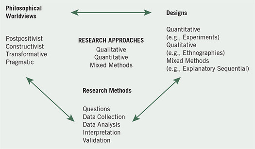
Philosophical Worldviews
Although philosophical ideas remain largely hidden in research (Slife & Williams, 1995), they still influence the practice of research and need to be identified. We suggest that individuals preparing a research proposal or plan make explicit the larger philosophical ideas they espouse. This information will help explain why they chose qualitative, quantitative, or mixed methods approaches for their research. In writing about worldviews, a proposal might include a section that addresses the following:
We have chosen to use the term worldview as meaning “a basic set of beliefs that guide action” (Guba, 1990, p. 17). Others have called them paradigms (Lincoln, Lynham, & Guba, 2011; Mertens, 2010); epistemologies and ontologies (Crotty, 1998), or broadly conceived research methodologies (Neuman, 2009). We see worldviews as a general philosophical orientation about the world and the nature of research that a researcher brings to a study. Individuals develop worldviews based on their discipline orientations and research communities, advisors and mentors, and past research experiences. The types of beliefs held by individual researchers based on these factors will often lead to embracing a strong qualitative, quantitative, or mixed methods approach in their research. Although there is ongoing debate about what worldviews or beliefs researchers bring to inquiry, we will highlight four that are widely discussed in the literature: postpositivism, constructivism, transformative, and pragmatism. The major elements of each position are presented in Table 1.1.
The Postpositivist Worldview
The postpositivist assumptions have represented the traditional form of research, and these assumptions hold true more for quantitative research than qualitative research. This worldview is sometimes called the scientific method, or doing science research. It is also called positivist/postpositivist research, empirical science, and postpositivism. This last term is called postpositivism because it represents the thinking after positivism, challenging the traditional notion of the absolute truth of knowledge (Phillips & Burbules, 2000) and recognizing that we cannot be absolutely positive about our claims of knowledge when studying the behavior and actions of humans. The postpositivist tradition comes from 19th-century writers, such as Comte, Mill, Durkheim, Newton, and Locke (Smith, 1983) and more recently from writers such as Phillips and Burbules (2000).
Postpositivists hold a deterministic philosophy in which causes (probably) determine effects or outcomes. Thus, the problems studied by postpositivists reflect the need to identify and assess the causes that influence outcomes, such as those found in experiments. It is also reductionistic in that the intent is to reduce the ideas into a small, discrete set to test, such as the variables that comprise hypotheses and research questions. The knowledge that develops through a postpositivist lens is based on careful observation and measurement of the objective reality that exists “out there” in the world. Thus, developing numeric measures of observations and studying the behavior of individuals becomes paramount for a postpositivist. Finally, there are laws or theories that govern the world, and these need to be tested or verified and refined so that we can understand the world. Thus, in the scientific method—the accepted approach to research by postpositivists—a researcher begins with a theory, collects data that either supports or refutes the theory, and then makes necessary revisions and conducts additional tests.
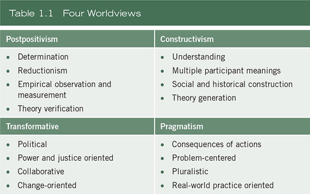
In reading Phillips and Burbules (2000), you can gain a sense of the key assumptions of this position, such as the following:
The Constructivist Worldview
Others hold a different worldview. Constructivism or social constructivism (often combined with interpretivism) is such a perspective, and it is typically seen as an approach to qualitative research. The ideas came from Mannheim and from works such as Berger and Luckmann’s (1967) The Social Construction of Reality and Lincoln and Guba’s (1985) Naturalistic Inquiry. More recent writers who have summarized this position are Lincoln and colleagues (2011), Mertens (2010), and Crotty (1998), among others. Social constructivists believe that individuals seek understanding of the world in which they live and work. Individuals develop subjective meanings of their experiences—meanings directed toward certain objects or things. These meanings are varied and multiple, leading the researcher to look for the complexity of views rather than narrowing meanings into a few categories or ideas. The goal of the research is to rely as much as possible on the participants’ views of the situation being studied. The questions become broad and general so that the participants can construct the meaning of a situation, typically forged in discussions or interactions with other persons. The more open-ended the questioning, the better, as the researcher listens carefully to what people say or do in their life settings. Often these subjective meanings are negotiated socially and historically. They are not simply imprinted on individuals but are formed through interaction with others (hence social constructivism) and through historical and cultural norms that operate in individuals’ lives. Thus, constructivist researchers often address the processes of interaction among individuals. They also focus on the specific contexts in which people live and work in order to understand the historical and cultural settings of the participants. Researchers recognize that their own backgrounds shape their interpretation, and they position themselves in the research to acknowledge how their interpretation flows from their personal, cultural, and historical experiences. The researcher’s intent is to make sense of (or interpret) the meanings others have about the world. Rather than starting with a theory (as in postpositivism), inquirers generate or inductively develop a theory or pattern of meaning.
For example, in discussing constructivism, Crotty (1998) identified several assumptions:
The Transformative Worldview
Another group of researchers holds to the philosophical assumptions of the transformative approach. This position arose during the 1980s and 1990s from individuals who felt that the postpositivist assumptions imposed structural laws and theories that did not fit marginalized individuals in our society or issues of power and social justice, discrimination, and oppression that needed to be addressed. There is no uniform body of literature characterizing this worldview, but it includes groups of researchers that are critical theorists; participatory action researchers; Marxists; feminists; racial and ethnic minorities; persons with disabilities; indigenous and postcolonial peoples; and members of the lesbian, gay, bisexual, transsexual, and queer communities. Historically, the transformative writers have drawn on the works of Marx, Adorno, Marcuse, Habermas, and Freire (Neuman, 2009). Fay (1987), Heron and Reason (1997), Kemmis and Wilkinson (1998), Kemmis and McTaggart (2000), and Mertens (2009, 2010) are additional writers to read for this perspective.
In the main, these inquirers felt that the constructivist stance did not go far enough in advocating for an action agenda to help marginalized peoples. A transformative worldview holds that research inquiry needs to be intertwined with politics and a political change agenda to confront social oppression at whatever levels it occurs (Mertens, 2010). Thus, the research contains an action agenda for reform that may change lives of the participants, the institutions in which individuals work or live, and the researcher’s life. Moreover, specific issues need to be addressed that speak to important social issues of the day, issues such as empowerment, inequality, oppression, domination, suppression, and alienation. The researcher often begins with one of these issues as the focal point of the study. This research also assumes that the inquirer will proceed collaboratively so as to not further marginalize the participants as a result of the inquiry. In this sense, the participants may help design questions, collect data, analyze information, or reap the rewards of the research. Transformative research provides a voice for these participants, raising their consciousness or advancing an agenda for change to improve their lives. It becomes a united voice for reform and change.
This philosophical worldview focuses on the needs of groups and individuals in our society that may be marginalized or disenfranchised. Therefore, theoretical perspectives may be integrated with the philosophical assumptions that construct a picture of the issues being examined, the people to be studied, and the changes that are needed, such as feminist perspectives, racialized discourses, critical theory, queer theory, and disability theory—theoretical lens to be discussed more in Chapter 3.
Although these are diverse groups and our explanations here are generalizations, it is helpful to view the summary by Mertens (2010) of key features of the transformative worldview or paradigm:
The Pragmatic Worldview
Another position about worldviews comes from the pragmatists. Pragmatism derives from the work of Peirce, James, Mead, and Dewey (Cherryholmes, 1992). Other writers include Murphy (1990), Patton (1990), and Rorty (1990). There are many forms of this philosophy, but for many, pragmatism as a worldview arises out of actions, situations, and consequences rather than antecedent conditions (as in postpositivism). There is a concern with applications—what works—and solutions to problems (Patton, 1990). Instead of focusing on methods, researchers emphasize the research problem and question and use all approaches available to understand the problem (see Rossman & Wilson, 1985). As a philosophical underpinning for mixed methods studies, Morgan (2007), Patton (1990), and Tashakkori and Teddlie (2010) convey its importance for focusing attention on the research problem in social science research and then using pluralistic approaches to derive knowledge about the problem. Using Cherryholmes (1992), Morgan (2007), and our own views, pragmatism provides a philosophical basis for research:
Research Designs
The researcher not only selects a qualitative, quantitative, or mixed methods study to conduct; the inquirer also decides on a type of study within these three choices. Research designs are types of inquiry within qualitative, quantitative, and mixed methods approaches that provide specific direction for procedures in a research study. Others have called them strategies of inquiry (Denzin & Lincoln, 2011). The designs available to the researcher have grown over the years as computer technology has advanced our data analysis and ability to analyze complex models, and as individuals have articulated new procedures for conducting social science research. Select types will be emphasized in the methods of Chapters 8, 9, and 10—designs that are frequently used in the social sciences. Here we introduce those that are discussed later and that are cited in examples throughout the book. An overview of these designs is shown in Table 1.2.
Quantitative Designs
During the late 19th and throughout the 20th century, strategies of inquiry associated with quantitative research were those that invoked the postpositivist worldview and that originated mainly in psychology. These include true experiments and the less rigorous experiments called quasi-experiments (see, an original, early treatise on this, Campbell & Stanley, 1963). An additional experimental design is applied behavioral analysis or single-subject experiments in which an experimental treatment is administered over time to a single individual or a small number of individuals (Cooper, Heron, & Heward, 2007; Neuman & McCormick, 1995). One type of nonexperimental quantitative research is causal-comparative research in which the investigator compares two or more groups in terms of a cause (or independent variable) that has already happened. Another nonexperimental form of research is the correlational design in which investigators use the correlational statistic to describe and measure the degree or association (or relationship) between two or more variables or sets of scores (Creswell, 2012). These designs have been elaborated into more complex relationships among variables found in techniques of structural equation modeling, hierarchical linear modeling, and logistic regression. More recently, quantitative strategies have involved complex experiments with many variables and treatments (e.g., factorial designs and repeated measure designs). Designs often employ longitudinal data collection over time to examine the development of ideas and trends. Designs have also included elaborate structural equation models that incorporate causal paths and the identification of the collective strength of multiple variables. Rather than discuss all of these quantitative approaches, we will focus on two designs: surveys and experiments.
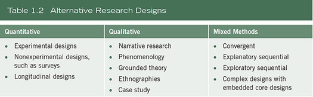
Qualitative Designs
In qualitative research, the numbers and types of approaches have also become more clearly visible during the 1990s and into the 21st century. The historic origin for qualitative research comes from anthropology, sociology, the humanities, and evaluation. Books have summarized the various types, and complete procedures are now available on specific qualitative inquiry approaches (Creswell & Poth, 2018). For example, Clandinin and Connelly (2000) constructed a picture of what narrative researchers do. Moustakas (1994) discussed the philosophical tenets and the procedures of the phenomenological method; Charmaz (2006), Corbin and Strauss (2007; 2015), and Strauss and Corbin (1990, 1998) identified the procedures of grounded theory. Fetterman (2010) and Wolcott (2008) summarized ethnographic procedures and the many faces and research strategies of ethnography, and Stake (1995) and Yin (2009, 2012, 2014) suggested processes involved in case study research. In this book, illustrations are drawn from the following strategies, recognizing that approaches such as participatory action research (Kemmis & McTaggart, 2000), discourse analysis (Cheek, 2004), and others not mentioned are also viable ways to conduct qualitative studies:
Mixed Methods Designs
Mixed methods involves combining or integration of qualitative and quantitative research and data in a research study. Qualitative data tends to be open-ended without predetermined responses while quantitative data usually includes closed-ended responses such as found on questionnaires or psychological instruments. The field of mixed methods research, as we know it today, began in the middle to late 1980s. Its origins, however, go back further. In 1959, Campbell and Fisk used multiple methods to study psychological traits—although their methods were only quantitative measures. Their work prompted others to begin collecting multiple forms of data, such as observations and interviews (qualitative data) with traditional surveys (Sieber, 1973). Early thoughts about the value of multiple methods—called mixed methods—resided in the idea that all methods had bias and weaknesses, and the collection of both quantitative and qualitative data neutralized the weaknesses of each form of data. Triangulating data sources—a means for seeking convergence across qualitative and quantitative methods—was born (Jick, 1979). By the early 1990s, mixed methods turned toward the systematic integration of quantitative and qualitative data, and the idea of ways to combine the data through different types of research designs emerged. These types of designs were extensively discussed in a major handbook addressing the field in 2003 and reissued in 2010 (Tashakkori & Teddlie, 2010). Procedures for expanding mixed methods developed such as follows:
Further, the designs were developed and notation was added to help the reader understand the designs; challenges to working with the designs emerged (Creswell & Plano Clark, 2011, 2018). Practical issues are being widely discussed today in terms of examples of “good” mixed methods studies and evaluative criteria, the use of a team to conduct this model of inquiry, and the expansion of mixed methods to other countries and disciplines. Although many designs exist in the mixed methods field, this book will focus on the three primary designs found in the social and health sciences today:
Research Methods
The third major element in the framework is the specific research methods that involve the forms of data collection, analysis, and interpretation that researchers propose for their studies. As shown in Table 1.3, it is useful to consider the full range of possibilities of data collection and to organize these methods, for example, by their degree of predetermined nature, their use of closed-ended versus open-ended questioning, and their focus on numeric versus nonnumeric data analysis. These methods will be developed further in Chapters 8 through 10.
Researchers collect data on an instrument or test (e.g., a set of questions about attitudes toward self-esteem) or gather information on a behavioral checklist (e.g., observation of a worker engaged in a complex skill). On the other end of the continuum, collecting data might involve visiting a research site and observing the behavior of individuals without predetermined questions or conducting an interview in which the individual is allowed to talk openly about a topic, largely without the use of specific questions. The choice of methods turns on whether the intent is to specify the type of information to be collected in advance of the study or to allow it to emerge from participants in the project. Also, the type of data analyzed may be numeric information gathered on scales of instruments or text information recording and reporting the voice of the participants. Researchers make interpretations of the statistical results, or they interpret the themes or patterns that emerge from the data. In some forms of research, both quantitative and qualitative data are collected, analyzed, and interpreted. Instrument data may be augmented with open-ended observations, or census data may be followed by in-depth exploratory interviews. In this case of mixing methods, the researcher makes inferences across both the quantitative and qualitative databases.
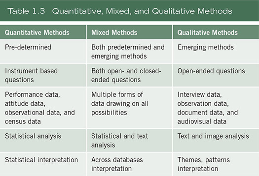
Research Approaches as Worldviews, Designs, and Methods
The worldviews, the designs, and the methods all contribute to a research approach that tends to be quantitative, qualitative, or mixed. Table 1.4 creates distinctions that may be useful in choosing an approach. This table also includes practices of all three approaches that are emphasized in remaining chapters of this book.
Typical scenarios of research can illustrate how these three elements combine into a research design.
In this scenario, the researcher tests a theory by specifying narrow hypotheses and the collection of data to support or refute the hypotheses. An experimental design is used in which attitudes are assessed both before and after an experimental treatment. The data are collected on an instrument that measures attitudes, and the information is analyzed using statistical procedures and hypothesis testing.
In this situation, the researcher seeks to establish the meaning of a phenomenon from the views of participants. This means identifying a culture-sharing group and studying how it develops shared patterns of behavior over time (i.e., ethnography). One of the key elements of collecting data in this way is to observe participants’ behaviors during their engagement in activities.
For this study, the inquirer seeks to examine an issue related to oppression of individuals. To study this, stories are collected of individual oppression using a narrative approach. Individuals are interviewed at some length to determine how they have personally experienced oppression.
The researcher bases the inquiry on the assumption that collecting diverse types of data best provides a more complete understanding of a research problem than either quantitative or qualitative data alone. The study begins with a broad survey in order to generalize results to a population and then, in a second phase, focuses on qualitative, open-ended interviews to collect detailed views from participants to help explain the initial quantitative survey.
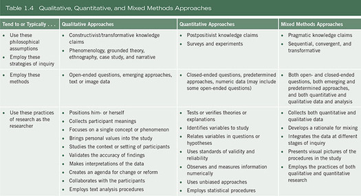
Criteria for Selecting a Research Approach
Given the possibility of qualitative, quantitative, or mixed methods approaches, what factors affect a choice of one approach over another for the design of a proposal? Added to worldview, design, and methods would be the research problem, the personal experiences of the researcher, and the audience(s) for whom the report will be written.
The Research Problem and Questions
A research problem, more thoroughly discussed in Chapter 5, is an issue or concern that needs to be addressed (e.g., the issue of racial discrimination). The problem comes from a void in the literature, and conflict in research results in the literature, topics that have been neglected in the literature; a need to lift up the voice of marginalized participants; and “real-life” problems found in the workplace, the home, the community, and so forth.
Certain types of social research problems call for specific approaches. For example, if the problem calls for (a) the identification of factors that influence an outcome, (b) the utility of an intervention, or (c) understanding the best predictors of outcomes, then a quantitative approach is best. It is also the best approach to use to test a theory or explanation. On the other hand, if a concept or phenomenon needs to be explored and understood because little research has been done on it or because it involves an understudied sample, then it merits a qualitative approach. Qualitative research is especially useful when the researcher does not know the important variables to examine. This type of approach may be needed because the topic is new, the subject has never been addressed with a certain sample or group of people, and existing theories do not apply with the particular sample or group under study (Morse, 1991). A mixed methods design is useful when the quantitative or qualitative approach, each by itself, is inadequate to best understand a research problem and the strengths of both quantitative and qualitative research (and its data) can provide the best understanding. For example, a researcher may want to both generalize the findings to a population as well as develop a detailed view of the meaning of a phenomenon or concept for individuals. In this research, the inquirer first explores generally to learn what variables to study and then studies those variables with a large sample of individuals. Alternatively, researchers may first survey a large number of individuals and then follow up with a few participants to obtain their specific views and their voices about the topic. In these situations, collecting both closed-ended quantitative data and open-ended qualitative data proves advantageous.
Personal Experiences
Researchers’ own personal training and experiences also influence their choice of approach. An individual trained in technical, scientific writing, statistics, and computer statistical programs and familiar with quantitative journals in the library would most likely choose the quantitative design. On the other hand, individuals who enjoy writing in a literary way or conducting personal interviews or making up-close observations may gravitate to the qualitative approach. The mixed methods researcher is an individual familiar with both quantitative and qualitative research. This person also has the time and resources to collect and analyze both quantitative and qualitative data.
Since quantitative studies are the traditional mode of research, carefully worked out procedures and rules exist for them. Researchers may be more comfortable with the highly systematic procedures of quantitative research. Also, for some individuals, it can be uncomfortable to challenge accepted approaches among some faculty by using qualitative and transformative approaches to inquiry. On the other hand, qualitative approaches allow room to be innovative and to work more within researcher-designed frameworks. They allow more creative, literary-style writing, a form that individuals may like to use. For those researchers undertaking social justice or community involvement, a qualitative approach is typically best, although this form of research may also incorporate mixed methods designs.
For the mixed methods researcher, the project will take extra time because of the need to collect and analyze both quantitative and qualitative data. It fits a person who enjoys and has the skills in both quantitative and qualitative research.
Audience
Finally, researchers write for audiences that will accept their research. These audiences may be journal editors and readers, faculty committees, conference attendees, or colleagues in the field. Students should consider the approaches typically supported and used by their advisers. The experiences of these audiences with quantitative, qualitative, or mixed methods studies can shape the decision made about the choice of design.
Summary
In planning a research project, researchers need to identify whether they will employ a qualitative, quantitative, or mixed methods approach. This approach is based on bringing together a worldview or assumptions about research, a specific design, and research methods. Decisions about choice of an approach are further influenced by the research problem or issue being studied, the personal experiences of the researcher, and the audience for whom the researcher writes.
Writing Exercises
Additional Readings
Cherryholmes, C. H. (1992, August–September). Notes on pragmatism and scientific realism. Educational Researcher, 14, 13–17.
Cleo Cherryholmes discusses pragmatism as a contrasting perspective from scientific realism. The strength of this article lies in the numerous citations of writers about pragmatism and a clarification of one version of pragmatism. Cherryholmes’s version points out that pragmatism is driven by anticipated consequences, reluctance to tell a true story, and the idea that there is an external world independent of our minds. Also included in this article are numerous references to historical and recent writers about pragmatism as a philosophical position.
Crotty, M. (1998). The foundations of social research: Meaning and perspective in the research process. Thousand Oaks, CA: Sage.
Michael Crotty offers a useful framework for tying together the many epistemological issues, theoretical perspectives, methodology, and methods of social research. He interrelates the four components of the research process and shows in a table a representative sampling of topics of each component. He then goes on to discuss nine different theoretical orientations in social research, such as postmodernism, feminism, critical inquiry, interpretivism, constructionism, and positivism.
Kemmis, S., & Wilkinson, M. (1998). Participatory action research and the study of practice. In B. Atweh, S. Kemmis, & P. Weeks (Eds.), Action research in practice: Partnerships for social justice in education (pp. 21–36). New York: Routledge.
Stephen Kemmis and Mervyn Wilkinson provide an excellent overview of participatory research. In particular, they note the six major features of this inquiry approach and then discuss how action research is practiced at the individual, the social, or at both levels.
Lincoln, Y. S., Lynham, S. A., & Guba, E. G. (2011). Paradigmatic controversies, contradictions, and emerging confluences revisited. In N. K. Denzin & Y. S. Lincoln, The SAGE handbook of qualitative research (4th ed., pp. 97–128). Thousand Oaks, CA: Sage.
Yvonna Lincoln, Susan Lynham, and Egon Guba have provided the basic beliefs of five alternative inquiry paradigms in social science research: (a) positivism, (b) postpositivism, (c) critical theory, (d) constructivism, and (e) participatory. These extend the earlier analysis provided in the first and second editions of the handbook. Each is presented in terms of ontology (i.e., nature of reality), epistemology (i.e., how we know what we know), and methodology (i.e., the process of research). The participatory paradigm adds another alternative paradigm to those originally advanced in the first edition. After briefly presenting these five approaches, they contrast them in terms of seven issues, such as the nature of knowledge, how knowledge accumulates, and goodness or quality criteria.
Mertens, D. (2009). Transformative research and evaluation. New York: Guilford.
Donna Mertens has devoted an entire text to advancing the transformative paradigm and the process of transformative research. She discusses the basic features of the transformative paradigm as an umbrella term, provides examples of groups affiliated with this paradigm, and links the paradigm to quantitative, qualitative, and mixed methods approaches. In this book she also discusses the research procedures of sampling, consent, reciprocity, data collection methods and instruments, data analysis and interpretation, and reporting.
Phillips, D. C., & Burbules, N. C. (2000). Postpositivism and educational research. Lanham, MD: Rowman & Littlefield.
D. C. Phillips and Nicholas Burbules summarize the major ideas of postpostivist thinking. Through two chapters, “What is Postpositivism?” and “Philosophical Commitments of Postpositivist Researchers,” the authors advance major ideas about postpositivism—especially those that differentiate it from positivism. These include knowing that human knowledge is conjectural rather than unchallengeable and that our warrants for knowledge can be withdrawn in light of further investigations.
https://edge.sagepub.com/creswellrd5e
Students and instructors, please visit the companion website for videos featuring John W. Creswell, full-text SAGE journal articles, quizzes and activities, plus additional tools for research design.
Chapter 2 Review of the Literature
Besides selecting a quantitative, qualitative, or mixed methods approach, the proposal or study designer also needs to review the literature about a topic. This literature review helps to determine whether the topic is worth studying, and it provides insight into ways in which the researcher can limit the scope to a needed area of inquiry.
This chapter continues the discussion about preliminary considerations before launching into a proposal or project. It begins with a discussion about selecting a topic and writing this topic down so that the researcher can continually reflect on it. At this point, researchers also need to consider whether the topic can and should be researched. Then the discussion moves into the actual process of reviewing the literature; addressing the general purpose for using literature in a study; and then turning to principles helpful in designing literature into qualitative, quantitative, and mixed methods studies.
The Research Topic
Before considering what literature to use in a project, first identify a topic to study and reflect on whether it is practical and useful to undertake the study. The topic is the subject or subject matter of a proposed study, such as “faculty teaching,” “organizational creativity,” or “psychological stress.” Describe the topic in a few words or in a short phrase. The topic becomes the central idea to learn about or to explore.
There are several ways that researchers gain some insight into their topics when they are initially planning their research (our assumption is that the topic is chosen by the researcher and not by an adviser or committee member). One way is to draft a brief working title to the study. We are surprised at how often researchers fail to draft a title early in the development of their projects. In our opinion, the working or draft title becomes a major road sign in research—a tangible idea that the researcher can keep refocusing on and changing as the project goes on (see Glesne, 2015; Glesne & Peshkin, 1992). It becomes an orienting device. We find that, in our research, this topic grounds us and provides a sign of what we are studying, as well as a sign useful for conveying to others the central notion of the study. When students first provide their research project ideas to us, we often ask them to supply a working title if they do not already have one written down on paper.
How would this working title be written? Try completing this sentence: “My study is about . . .” A response might be, “My study is about at-risk children in the junior high,” or “My study is about helping college faculty become better researchers.” At this stage in the design, frame the answer to the question so that another scholar might easily grasp the meaning of the project. A common shortcoming of beginning researchers is that they frame their study in complex and erudite language. This perspective may result from reading published articles that have undergone numerous revisions before being set in print. Good, sound research projects begin with straightforward, uncomplicated thoughts that are easy to read and understand. Think about a journal article that you have read recently. If it was easy and quick to read, it was likely written in general language that many readers could easily identify with in a way that was straightforward and simple in overall design and conceptualization. As a project develops it will become more complicated.
Wilkinson (1991) provided useful advice for creating a title: Be brief and avoid wasting words. Eliminate unnecessary words, such as “An Approach to . . . ,” “A Study of . . . ,” and so forth. Use a single title or a double title. An example of a double title would be “An Ethnography: Understanding a Child’s Perception of War.” In addition to Wilkinson’s thoughts, consider a title no longer than 12 words, eliminate most articles and prepositions, and make sure that it includes the focus or topic of the study.
Another strategy for topic development is to pose the topic as a brief question. What question needs to be answered in the proposed study? A researcher might ask, “What treatment is best for depression?” “What does it mean to be Arabic in U.S. society today?” “What brings people to tourist sites in the Midwest?” When drafting questions such as these, focus on the key topic in the question as the major signpost for the study. Consider how this question might be expanded later to be more descriptive of your study (see Chapters 6 and 7 on the purpose statement and research questions and hypotheses).
Actively elevating this topic to a research study calls for reflecting on whether the topic can and should be researched. A topic can be researched if a researcher has participants willing to serve in the study. It also can be researched if the investigator has resources such as collecting data over a sustained period of time and using available computer programs to help in the analysis of data.
The question of should is a more complex matter. Several factors might go into this decision. Perhaps the most important are whether the topic adds to the pool of research knowledge in the literature available on the topic, replicates past studies, lifts up the voices of underrepresented groups or individuals, helps address social justice, or transforms the ideas and beliefs of the researcher.
A first step in any project is to spend considerable time in the library examining the research on a topic (strategies for effectively using the library and library resources appear later in this chapter). This point cannot be overemphasized. Beginning researchers may advance a great study that is complete in every way, such as in the clarity of research questions, the comprehensiveness of data collection, and the sophistication of statistical analysis. But the researcher may garner little support from faculty committees or conference planners because the study does not add anything new to the body of research. Ask, “How does this project contribute to the literature?” Consider how the study might address a topic that has yet to be examined, extend the discussion by incorporating new elements, or replicate (or repeat) a study in new situations or with new participants. Contributing to the literature may also mean how the study adds to an understanding of a theory or extends a theory (see Chapter 3), or how the study provides a new perspective or “angle” to the existing literature, for example, by
The issue of should the topic be studied also relates to whether anyone outside of the researcher’s own immediate institution or area would be interested in the topic. Given a choice between a topic that might be of limited regional interest or one of national interest, we would opt for the latter because it would have wide appeal to a much broader audience. Journal editors, committee members, conference planners, and funding agencies all appreciate research that reaches a broad audience. Finally, the should issue also relates to the researcher’s personal goals. Consider the time it takes to complete a project, revise it, and disseminate the results. All researchers should consider how the study and its heavy commitment of time will pay off in enhancing career goals, whether these goals relate to doing more research, obtaining a future position, or advancing toward a degree.
Before proceeding with a proposal or a study, one needs to weigh these factors and ask others for their reaction to a topic under consideration. Seek reactions from colleagues, noted authorities in the field, academic advisers, and faculty committee members. We often have students bring to us a one-page sketch of their proposed project that includes the problem or issue leading to a need for the study, the central research question they plan on asking, the types of data they will collect, and the overall significance of their study.
The Literature Review
Once the researcher identifies a topic that can and should be studied, the search can begin for related literature on the topic. The literature review accomplishes several purposes. It shares with the reader the results of other studies that are closely related to the one being undertaken. It relates a study to the larger, ongoing dialogue in the literature, filling in gaps and extending prior studies (Cooper, 2010; Marshall & Rossman, 2016). It provides a framework for establishing the importance of the study as well as a benchmark for comparing the results with other findings. All or some of these reasons may be the foundation for writing the scholarly literature into a study (see Boote & Beile, 2005, for a more extensive discussion of purposes for compiling a literature review in research). Studies need to add to the body of literature on a topic, and literature sections in proposals are generally shaped from the larger problem to the narrower issue that leads directly into the methods of a study.
The Use of the Literature
Beyond the question of why literature is used is the additional issue of how it is used in research and proposals. It can assume various forms. Our best advice is to seek the opinion of your adviser or faculty members as to how they would like to see the literature addressed. We generally recommend to our advisees that the literature review in a proposal or project be brief and provide a summary of the major studies on the research problem; it does not need to be fully developed and comprehensive at this point, since faculty may ask for major changes in the study at the proposal meeting. In this model, the literature review is shorter—say 20 to 30 pages in length—and tells the reader that the student is aware of the literature on the topic and the latest writings. Another approach is to develop a detailed outline of the topics and potential references that will later be developed into an entire chapter, usually the second, titled “Literature Review,” which might run from 20 to 60 pages or so.
The literature review in a journal article is an abbreviated form of that found in a dissertation or master’s thesis. It typically is contained in a section called “Related Literature” and follows the introduction to a study. This is the pattern for quantitative research articles in journals. For qualitative research articles, the literature review may be found in a separate section, included in the introduction, or threaded throughout the study. Regardless of the form, another consideration is how the literature might be reviewed, depending on whether a qualitative, quantitative, or mixed methods approach has been selected.
In general, the literature review can take several forms. Cooper (2010) discussed four types: literature reviews that (a) integrate what others have done and said, (b) criticize previous scholarly works, (c) build bridges between related topics, and (d) identify the central issues in a field. With the exception of criticizing previous scholarly works, most dissertations and theses serve to integrate the literature, organize it into a series of related topics (often from general topics to narrower ones), and summarize the literature by pointing out the central issues.
In qualitative research, inquirers use the literature in a manner consistent with the assumptions of learning from the participant, not prescribing the questions that need to be answered from the researcher’s standpoint. One of the chief reasons for conducting a qualitative study is that the study is exploratory. This usually means that not much has been written about the topic or the population being studied, and the researcher seeks to listen to participants and build an understanding based on what is heard.
However, the use of the literature in qualitative research varies considerably. In theoretically oriented studies, such as ethnographies or critical ethnographies, the literature on a cultural concept or a critical theory is introduced early in the report or proposal as an orienting framework. In grounded theory, case studies, and phenomenological studies, literature is less often used to set the stage for the study.
With an approach grounded in learning from participants and variation by type, there are several models for incorporating the literature review into a qualitative study. We offer three placement locations, and it can be used in any or all of these locations. As shown in Table 2.1, the researcher might include the literature review in the introduction. In this placement, the literature provides a useful backdrop for the problem or issue that has led to the need for the study, such as who has been writing about it, who has studied it, and who has indicated the importance of studying the issue. This framing of the problem is, of course, contingent on available studies. One can find illustrations of this model in many qualitative studies employing different types of inquiry strategy.
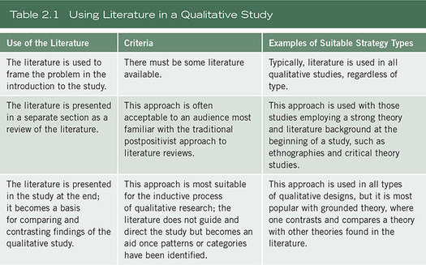
A second form is to review the literature in a separate section, a model typically used in quantitative research, often found in journals with a quantitative orientation. In theory-oriented qualitative studies, such as ethnography, critical theory, or with a transformative aim, the inquirer might locate the theory discussion and literature in a separate section, typically toward the beginning of the write-up. Third, the researcher may incorporate the related literature in the final section, where it is used to compare and contrast with the results (or themes or categories) to emerge from the study. This model is especially popular in grounded theory studies, and we recommend it because it uses the literature inductively.
Quantitative research, on the other hand, includes a substantial amount of literature at the beginning of a study to provide direction for the research questions or hypotheses. It is also used to introduce a problem or to describe in detail the existing literature in a section titled “Related Literature” or “Review of Literature,” or some other similar phrase. Also, the literature review can introduce a theory—an explanation for expected relationships (see Chapter 3)—describe the theory that will be used, and suggest why it is a useful theory to examine. At the end of a study, the researcher then revisits the literature and makes a comparison between the results with the existing findings in the literature. In this model, the quantitative researcher uses the literature deductively as a framework for the research questions or hypotheses.
In a mixed methods study, the researcher uses either a qualitative or a quantitative approach to the literature, depending on the type of strategy being used. In a sequential approach, the literature is presented in each phase in a way consistent with the method being used. For example, if the study begins with a quantitative phase, then the investigator is likely to include a substantial literature review that helps to establish a rationale for the research questions or hypotheses. If the study begins with a qualitative phase, then the literature is substantially less, and the researcher may incorporate it more into the end of the study—an inductive approach. If the research advances a convergent study with an equal weight and emphasis on both qualitative and quantitative data, then the literature may take either qualitative or quantitative forms. The decision as to which form to use is based on the audience for the study and what they would be most receptive to as well as to the students’ graduate committees and their orientation. To recap, the literature used in a mixed methods project will depend on the strategy and the relative weight given to the qualitative or quantitative research in the study.
Our suggestions for using the literature in planning a qualitative, quantitative, or mixed methods study are as follows:
Design Techniques
Regardless of the type of study, several steps are useful in conducting a literature review.
Steps in Conducting a Literature Review
A literature review means locating and summarizing the studies about a topic. Often these are research studies (since you are conducting a research study), but they may also include conceptual articles or opinion pieces that provide frameworks for thinking about topics. There is no single way to conduct a literature review, but many scholars proceed in a systematic fashion to capture, evaluate, and summarize the literature. Here is the way we recommend:
Searching Computerized Databases
To ease the process of collecting relevant material, there are some techniques useful in accessing the literature quickly through databases. Computer databases of the literature are now available through the Internet, and they provide easy access to thousands of journals, conference papers, and materials on many different topics. Academic libraries at major universities have purchased commercial databases as well as obtained databases in the public domain. Only a few of the major databases available will be reviewed here, but they are the major sources to journal articles and documents that you should consult to determine what literature is available on your topic.
ERIC is a free online digital library of education research and information sponsored by the Institute of Education Sciences (IES) of the U.S. Department of Education. This database can be found at www.eric.ed.gov, and ERIC provides a search of 1.2 million items indexed since 1966. The collection includes journal articles, books, research syntheses, conference papers, technical reports, policy papers, and other education-related materials. ERIC indexes more than hundreds of journals, and links are available to full-text copies of many of the materials. To best utilize ERIC, it is important to identify appropriate descriptors for your topic, the terms used by indexers to categorize articles or documents. Researchers can search through the Thesaurus of ERIC Descriptors (ERIC, 1975) or browse the online thesaurus. A research tip in conducting an ERIC search is to locate recent journal articles and documents on your topic. This process can be enhanced by conducting a preliminary search using descriptors from the online thesaurus and locating a journal article or document which is on your topic. Then look closely at the descriptors used in this article and document and run another search using these terms. This procedure will maximize the possibility of obtaining a good list of articles for your literature review.
Another free database to search is Google Scholar. It provides a way to broadly search for literature across many disciplines and sources, such as peer-reviewed papers, theses, books, abstracts, and articles from academic publishers, professional societies, universities, and other scholarly organizations. The articles identified in a Google Scholar search provide links to abstracts, related articles, electronic versions of articles affiliated with a library you specify, web searches for information about this work, and opportunities to purchase the full text of the article.
Researchers can obtain abstracts to publications in the health sciences through the free-access PubMed. This database is a service of the U.S. National Library of Medicine, and it includes over 17 million citations from MEDLINE and life science journals for biomedical articles going back to the 1950s (www.ncbi.nlm.nih.gov). PubMed includes links to full-text articles (located in academic libraries) and other related resources. To search PubMed, the researcher uses MeSH (Medical Subject Headings) terms, the U.S. National Library of Medicine’s controlled vocabulary thesaurus used for indexing articles for MEDLINE/PubMed. This MeSH terminology provides a consistent way to retrieve information about topics that may be described using different terms.
On the Internet you can also go to other literature search programs. One typically available is ProQuest (http://proquest.com), which enables a researcher to search many different databases, and it is one of the largest online content repositories in the world. Another would be EBSCO publishing, a for-fee online research service, including full-text databases, subject indexes, point-of-care medical reference, historical digital archives, and e-books. The company provides more than 350 databases and nearly 300,000 e-books. Also at academic libraries you can search ERIC, PsycINFO, Dissertation Abstracts, Periodicals Index, Health and Medical Complete, and many more specialized databases (e.g., International Index to Black Periodicals). Because EBSCO taps into many different databases, it can be one search tool to use before using more specialized databases.
Another commercially licensed database found in many academic libraries is Sociological Abstracts (Cambridge Scientific Abstracts, www.csa.com). This database indexes over 2,000 journals; conference papers; relevant dissertation listings; book reviews; and selected books in sociology, social work, and related disciplines. For literature in the field of psychology and related areas, consult another commercial database: PsycINFO (www.apa.org). This database indexes 2,150 journal titles, books, and dissertations from many countries. It covers the field of psychology as well as psychological aspects of physiology, linguistics, anthropology, business, and law. It has a Thesaurus of Psychological Index Terms to locate useful terms in a literature search.
Psychological Abstracts (American Psychological Association [APA], 1927–) and PsycINFO (apa.org) represent important sources for locating research articles on topics broadly related to psychology. The PsycINFO database is available through libraries and may be accessed through another service, such as EBSCO, Ovid, or ProQuest. PsycINFO indexes nearly 2,500 journals in 22 major categories and it provides bibliographic citations, abstracts for psychological journal articles, dissertations, technical reports, books, and book chapters published worldwide. Similar to an ERIC record, a summary from PsycINFO includes key phrase identifiers as well as the author, title, source, and a brief abstract of the article.
Another commercial database available in libraries is the Social Sciences Citation Index (SSCI) (Web of Knowledge, Thomson Scientific [http://isiwebofknowledge.com]). It indexes 1,700 journals spanning 50 disciplines and selectively indexes relevant items from over 3,300 scientific and technical journals. It can be used to locate articles and authors who have conducted research on a topic. It is especially useful in locating studies that have referenced an important study. The SSCI enables you to trace all studies since the publication of the key study that have cited the work. Using this system, you can develop a chronological list of references that document the historical evolution of an idea or study. This chronological list can be most helpful in tracking the development of ideas about your literature review topic.
In summary, our research tips for searching computer databases are to do the following:
A Priority for Selecting Literature Material
We recommend that you establish a priority in a search of the literature. What types of literature might be reviewed and in what priority? Consider the following:
In summary, we place refereed journal articles high on the list because they are the easiest to locate and duplicate. They also report research about a topic. Dissertations are listed lower in priority because they vary considerably in quality and are the most difficult reading material to locate and reproduce. Caution should be used in choosing journal articles on the web unless they are part of refereed online journals.
A Literature Map of the Research
One of the first tasks for a researcher working with a new topic is to organize the literature. As mentioned earlier, this organization enables a person to understand how the proposed study adds to, extends, or replicates research already completed.
A useful approach for this step is to design a literature map. This is an idea that we developed several years ago, and it has been a useful tool for students to use when organizing their review of the literature for making presentations to graduate committees, summarizing the literature for a scholarly presentation, or composing an article for journal publication.
This map is a visual summary of the research that has been conducted by others, and it is typically represented in a figure. Maps are organized in different ways. One could be a hierarchical structure with a top-down presentation of the literature, ending at the bottom with the proposed study. Another might be similar to a flowchart in which the reader understands the literature as unfolding from left to right with the farthest right-hand section advancing a proposed study. A third model might be a series of circles; each circle represents a body of literature and the intersection of the circles as the place in which the future research is indicated. We have seen examples of all of these possibilities and found them all effective.
The central idea is that the researcher begins to build a visual picture of existing research about a topic. This literature map presents an overview of existing literature. Figure 2.1 is an illustration of a map that shows the literature found on procedural justice in organizational studies (Janovec, 2001). Janovec’s map illustrates a hierarchical design, and she used several principles of good map design:
Composing a literature map can be challenging. Individuals seeing this map may not be familiar with this approach to organizing the literature and making a case for your study. They need to be told the intent of such a map. It takes time to develop such a map and locate literature to put into the map. For a preliminary map, we consider collecting maybe 25 studies. For a full literature map for a dissertation or thesis, we would consider developing a map with at least 100 studies. Figuring out how your study adds to the literature takes some time. It may add to several threads in your literature map. We would refrain from tying it to all of your subdivisions; select one or two subdivisions. It is also challenging to figure out what the broad topic might be for the top of the map. This is the topic to which your literature map adds. Ask others who know about your literature, see how the research studies group according to some synthesis of the literature, and continually ask yourself what body of literature your study will contribute to. You may also have to develop several versions of your map before it comes together. Develop your map, write the discussion, and check it out with others.
Abstracting Studies
When researchers write reviews of the literature for proposed studies, they locate articles and develop brief abstracts of the articles that comprise the review. An abstract is a brief review of the literature (typically a short paragraph) that summarizes major elements to enable a reader to understand the basic features of the article (see Example 2.1). In developing an abstract, researchers need to consider what material to extract and summarize. This is important information when reviewing perhaps dozens, if not hundreds, of studies. A good summary of a research study reported in a journal might include the following points:
When examining a study to develop a summary, there are places to look for these parts. In well-crafted journal articles, the problem and purpose statements are clearly stated in the introduction. Information about the sample, population, or subjects is found midway through in a method (or procedure) section, and the results are often reported toward the end. In the results sections, look for passages in which the researchers report information to answer or address each research question or hypothesis. For book-length research studies, look for the same points.
Figure 2.1 An Example of a Literature Map
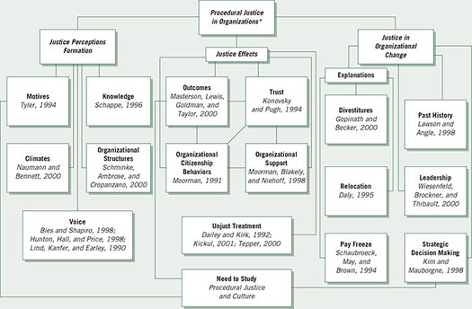
*Employees’ concerns about the fairness of and the making of managerial decisions
Source: Janovec (2001). Reprinted by permission.
Example 2.1 Literature Review Abstract in a Quantitative Study
The paragraph that follows summarizes the major components of a quantitative study (Creswell, Seagren, & Henry, 1979), much like the paragraph might appear in a review of the literature section of a dissertation or a journal article. In this passage, we have chosen key components to be abstracted.
Creswell and colleagues (1979) tested the Biglan model, a three-dimensional model clustering 36 academic areas into hard or soft, pure or applied, life or nonlife areas, as a predictor of chairpersons’ professional development needs. Eighty department chairpersons located in four state colleges and one university of a midwestern state participated in the study. Results showed that chairpersons in different academic areas differed in terms of their professional development needs. Based on the findings, the authors recommended that those who develop inservice programs needed to consider differences among disciplines when they plan for programs.
Creswell and colleagues began with an in-text reference in accord with the format in the APA Publication Manual (APA, 2010). Next, we reviewed the central purpose of the study, followed by information about the data collection. The abstract ended by stating the major results and presenting the practical implications of these results.
How are essays, opinions, typologies, and syntheses of past research abstracted, since these are not research studies? The material to be extracted from these non-empirical studies would be as follows:
Example 2.2 illustrates the inclusion of these aspects.
Example 2.2 Literature Review Abstract in a Study Advancing a Typology
Sudduth (1992) completed a quantitative dissertation in political science on the topic of the use of strategic adaptation in rural hospitals. He reviewed the literature in several chapters at the beginning of the study. In an example of summarizing a single study advancing a typology, Sudduth summarized the problem, the theme, and the typology:
Ginter, Duncan, Richardson, and Swayne (1991) recognize the impact of the external environment on a hospital’s ability to adapt to change. They advocate a process that they call environmental analysis, which allows the organization to strategically determine the best responses to change occurring in the environment. However, after examining the multiple techniques used for environmental analysis, it appears that no comprehensive conceptual scheme or computer model has been developed to provide a complete analysis of environmental issues (Ginter et al., 1991). The result is an essential part of strategic change that relies heavily on a non-quantifiable and judgmental process of evaluation. To assist the hospital manager to carefully assess the external environment, Ginter et al. (1991) have developed the typology given in Figure 2.1. (p. 44)
In this example, the authors referenced the study with an in-text reference, mentioned the problem (“a hospital’s ability to adapt to change”), identified the central theme (“a process that they call environmental analysis”), and stated the conclusions related to this theme (e.g., “no comprehensive conceptual model,” “developed the typology”).
Style Manuals
In both examples, we have introduced the idea of using appropriate APA style for referencing the article at the beginning of the abstract. Style manuals provide guidelines for creating a scholarly style of a manuscript, such as a consistent format for citing references, creating headings, presenting tables and figures, and using nondiscriminatory language. A basic tenet in reviewing the literature is to use an appropriate and consistent reference style throughout. When identifying a useful document, make a complete reference to the source using an appropriate style. For dissertation proposals, graduate students should seek guidance from faculty, dissertation committee members, or department or college officials about the appropriate style manual to use for citing references.
The Publication Manual of the American Psychological Association (APA, 2010) is the most popular style manual used in the fields of education and psychology. The Chicago Manual of Style (University of Chicago Press, 2010) is also used but less widely than the APA style in the social sciences. Some journals have developed their own variations of the popular styles. We recommend identifying a style that is acceptable for your writing audiences and adopting it early in the planning process.
The most important style considerations involve in-text, end-of-text, heading, and figures and tables use. Some suggestions for using style manuals for scholarly writing are these:
In summary, the most important aspect of using a style manual is to be consistent in the approach throughout the manuscript.
The Definition of Terms
Another topic related to reviewing the literature is the identification and definition of terms that readers will need in order to understand a proposed research project. A definition of terms section may be found separate from the literature review, included as part of the literature review, or placed in different sections of a proposal.
Define terms that individuals outside the field of study may not understand and that go beyond common language (Locke, Spirduso, & Silverman, 2013). Clearly, whether a term should be defined is a matter of judgment, but define a term if there is any likelihood that readers will not know its meaning. Also, define terms when they first appear so that a reader does not read ahead in the proposal operating with one set of definitions only to find out later that the author is using a different set. As Wilkinson (1991) commented, “scientists have sharply defined terms with which to think clearly about their research and to communicate their findings and ideas accurately” (p. 22). Defining terms also adds precision to a scientific study, as Firestone (1987) stated this:
The words of everyday language are rich in multiple meanings. Like other symbols, their power comes from the combination of meaning in a specific setting. . . . Scientific language ostensibly strips this multiplicity of meaning from words in the interest of precision. This is the reason common terms are given “technical meanings” for scientific purposes. (p. 17)
With this need for precision, one finds terms stated early in the introduction to articles. In dissertations and thesis proposals, terms are typically defined in a special section of the study. The rationale is that in formal research, students must be precise in how they use language and terms. The need to ground thoughts in authoritative definitions constitutes good science.
Define terms introduced in all sections of the research plan:
Special terms that need to be defined appear in all three types of studies: (a) qualitative, (b) quantitative, and (c) mixed methods.
No one approach governs how one defines the terms in a study, but several suggestions follow (see also Locke et al., 2013):
Examples 2.3 and 2.4 illustrate varied structures for defining terms in a research study.
Example 2.3 Terms Defined in an Independent Variables Section
This set of two examples illustrates an abbreviated form of writing definitions for a study. The first illustrates a specific operational definition of a key term and the second the procedural definition of a key term. Vernon (1992) studied how divorce in the middle generation impacts grandparents’ relationships with their grandchildren. These definitions were included in a section on independent variables:
Kinship Relationship to the Grandchild
Kinship relationship to the grandchild refers to whether the grandparents are maternal grandparents or paternal grandparents. Previous research (e.g., Cherlin & Furstenberg, 1986) suggests that maternal grandparents tend to be closer to their grandchildren.
Sex of Grandparent
Whether a grandparent is a grandmother or grandfather has been found to be a factor in the grandparent/grandchild relationship (i.e., grandmothers tend to be more involved than grandfathers, which is thought to be related to the kinkeeping role of women within the family (e.g., Hagestad, 1988, pp. 35–36).
Example 2.4 Terms Defined in a Mixed Methods Dissertation
This example illustrates a lengthy definition of terms presented in a mixed methods study in a separate section of the first chapter that introduces the study. VanHorn-Grassmeyer (1998) studied how 119 new professionals in student affairs in colleges and universities engage in reflection—either individually or collaboratively. She both surveyed the new professionals and conducted in-depth interviews with them. Because she studied individual and collaborative reflection among student affairs professionals, she provided detailed definitions of these terms in the beginning of the study. We illustrate two of her terms next. Notice how she referenced her definitions in meanings formed by other authors in the literature:
Individual Reflection
Schon (1983) devoted an entire book to concepts he named reflective thinking, reflection-in-action, and reflective practice; this after an entire book was written a decade earlier with Argyris (Argyris & Schon, 1978) to introduce the concepts. Therefore, a concise definition of this researcher’s understanding of individual reflection that did justice to something that most aptly had been identified as an intuitive act was difficult to reach. However, the most salient characteristics of individual reflection for the purposes of this study were these three: (a) an “artistry of practice” (Schon, 1983), (b) how one practices overtly what one knows intuitively, and (c) how a professional enhances practice through thoughtful discourse within the mind.
Student Affairs Professional
A professional has been described in many ways. One description identified an individual who exhibited “a high degree of independent judgment, based on a collective, learned body of ideas, perspectives, information, norms, and habits [and who engage(d) in professional knowing]” (Baskett & Marsick, 1992, p. 3). A student affairs professional has exhibited such traits in service to students in a higher education environment, in any one of a number of functions which support academic and co-curricular success (pp. 11–12).
A Quantitative or Mixed Methods Literature Review
When composing a review of the literature, it is difficult to determine how much literature to review. In order to address this problem, we have developed a model that provides parameters around the literature review, especially as it might be designed for a quantitative or mixed methods study that employs a standard literature review section. For a qualitative study, the literature review might explore aspects of the central phenomenon being addressed and divide it into topical areas. But the literature review for a qualitative study, as discussed earlier, can be placed in a proposal in several ways (e.g., as a rationale for the research problem, as a separate section, as something threaded throughout the study, as compared with the results of a project).
For a quantitative study or the quantitative strand of a mixed methods study, write a review of the literature that contains sections about the literature related to major independent variables, major dependent variables, and studies that relate the independent and dependent variables (more on variables in Chapter 3). This approach seems appropriate for dissertations and for conceptualizing the literature to be introduced in a journal article. Consider a literature review to be composed of five components: (a) an introduction, (b) Topic 1 (about the independent variable), (c) Topic 2 (about the dependent variable), (d) Topic 3, (studies that address both the independent and dependent variables), and (e) a summary. Here is more detail about each section:
This model focuses the literature review, relates it closely to the variables in the research questions and hypotheses, and sufficiently narrows the study. It becomes a logical point of departure for the research questions and the method section.
Summary
Before searching the literature, identify your topic, using such strategies as drafting a brief title or stating a central research question. Also consider whether this topic can and should be researched by reviewing whether there is access to participants and resources and whether the topic will add to the literature, be of interest to others, and be consistent with personal goals.
Researchers use the scholarly literature in a study to present results of similar studies, to relate the present study to an ongoing dialogue in the literature, and to provide a framework for comparing results of a study with other studies. For qualitative, quantitative, and mixed methods designs, the literature serves different purposes. In qualitative research, the literature helps substantiate the research problem, but it does not constrain the views of participants. A popular approach is to include more literature at the end of a qualitative study than at the beginning. In quantitative research, the literature not only helps to substantiate the problem but it also suggests possible questions or hypotheses that need to be addressed. A separate literature review section is typically found in quantitative studies. In mixed methods research, the use of literature will depend on the type of design and weight given to the qualitative and quantitative aspects.
When conducting a literature review, identify key words for searching the literature. Then search the online databases, such as ERIC, EBSCO, ProQuest, Google Scholar, PubMed, and more specialized databases, such as PsycINFO, Sociofile, and SSCI. Then, locate articles or books based on a priority of searching first for journal articles and then books. Identify references that will make a contribution to your literature review. Group these studies into a literature map that shows the major categories of studies and positions of your proposed study within those categories. Begin writing summaries of the studies, noting complete references according to a style manual (e.g., APA, 2010) and extracting information about the research that includes the research problem, the questions, the data collection and analysis, and the final results.
Define key terms, and possibly develop a definition of terms section for your proposal or include them within your literature review. Finally, consider the overall structure for organizing these studies. One quantitative research model is to divide the review into sections according to major variables (a quantitative approach) or major subthemes of the central phenomenon (a qualitative approach) that you are studying.
Writing Exercises
Additional Readings
American Psychological Association. (2010). Publication Manual of the American Psychological Association (6th ed.). Washington, DC: Author.
The latest APA style manual is a must for every researcher’s shelf. It provides an entire chapter offering examples of how to cite works in a reference list. The examples are extensive—from journals (or periodicals) to patents. Further guidelines for presenting tables and figures are available with good examples that you can use. This manual also has chapters on scholarly writing and the mechanics of style used in this type of writing. For those planning on publishing, it provides useful information about the standard elements of a manuscript as well as ethical issues to consider.
Boote, D. N., & Beile, P. (2005). Scholars before researchers: On the centrality of the dissertation literature review in research preparation. Educational Researcher, 34(6), 3–15.
David Boote and Penny Beile discuss the importance of dissertation students to compile sophisticated literature reviews. To this end, they advance five criteria that should be in a rigorous literature review. The author should justify the inclusion and exclusion of literature (coverage), critically examine the state of the field, situate the topic in the broader literature, examine the history of the topic, note ambiguities in definitions and the literature, and offer new perspectives (synthesis). It should also critique the research methods (methodology), as well as the practical and scholarly significance of the research (significance), and be written well in a coherent fashion (rhetoric).
Locke, L. F., Spirduso, W. W., & Silverman, S. J. (2010). Proposals that work: A guide for planning dissertations and grant proposals (6th ed.) Thousand Oaks, CA: Sage.
Lawrence Locke, Waneen Spirduso, and Stephen Silverman describe several stages for reviewing the literature: develop the concepts that provide a rationale for the study, develop subtopics for each major concept, and add the most important references that support each concept. They also provide five rules for defining terms in a scholarly study: (a) never invent words, (b) provide definitions early in a proposal, (c) do not use common language forms of words, (d) define words when they are first introduced, and (e) use specific definitions for words.
Punch, K. F. (2014). Introduction to social research: Quantitative and qualitative approaches (3rd ed.). Thousand Oaks, CA: Sage.
Keith Punch provides a guide to social research that equally addresses quantitative and qualitative approaches. His conceptualizations of central issues that divide the two approaches address key differences. Punch notes that when writing a proposal or report, the point at which to concentrate on the literature varies in different styles of research. Factors that affect that decision include the style of research, the overall research strategy, and how closely the study will follow the directions of the literature.
https://edge.sagepub.com/creswellrd5e
Students and instructors, please visit the companion website for videos featuring John W. Creswell, full-text SAGE journal articles, quizzes and activities, plus additional tools for research design.
Chapter 3 The Use of Theory
One component of reviewing the literature is to determine what theories might be used to explore the questions in a scholarly study. In quantitative research, researchers often test hypotheses stemming from theories. In a quantitative dissertation, an entire section of a research proposal might be devoted to presenting the broader theory guiding the study hypotheses. In qualitative research, the use of theory is much more varied. The inquirer may generate a theory as the final outcome of a study and place it at the end of a project, such as in grounded theory. In other qualitative studies, it comes at the beginning and provides a lens that shapes what is looked at and the questions asked, such as in ethnographies or in participatory–social justice research. In mixed methods research, researchers may both test theories and generate them. Moreover, mixed methods research may contain a theoretical framework within which both quantitative and qualitative data are collected. These frameworks can be drawn from feminist, racial, class, or other perspectives and they flow through different parts of a mixed methods study.
Theories can be used in quantitative, qualitative, and mixed methods studies. We begin this chapter by focusing on theory use in a quantitative study. We review a definition of a theory, the use of variables in a quantitative study, the placement of theory, and the alternative forms it might assume in a written plan. Procedures in identifying a theory are next presented, followed by a script of a theoretical perspective section of a quantitative research proposal. Then the discussion moves to the use of theory in a qualitative study. Qualitative inquirers use different terms for theories, such as patterns, theoretical lens, or naturalistic generalizations, to describe the broader explanations used or developed in their studies. Examples in this chapter illustrate the alternatives available to qualitative researchers. Finally, the chapter turns to the use of theories in mixed methods research and the use of social science and participatory–social justice theories in such research.
Quantitative Theory Use
Testing Causal Claims in Quantitative Research
Prior to discussing variables, their types, and their use in quantitative research, we first need to visit the concept of causality in quantitative research. A leading writer in this area has been Blalock (1991). Causality means that we would expect variable X to cause variable Y. As a simple example, does drinking one glass of red wine daily cause you to have a reduced risk for a heart attack? In this case, daily wine consumption is the X variable, and a heart attack event would be the Y variable. One critically important consideration in evaluating causal claims (like this red wine consumption example) is whether an unmeasured third variable (Z) may be the cause of the outcome you are measuring. For example, there may be a Z variable (such as daily exercise) that is positively associated with both moderate red wine consumption and with heart attacks, and may be the causal factor for reducing heart attacks (not moderate red wine consumption!). In quantitative research this third variable is called a confounding variable, and can become quite problematic for establishing causality if it is not measured in a study. We would not want to mistakenly infer that moderate red wine consumption promotes heart health if it plays no causal role in reducing heart attacks. If you aim to test a causal claim about the relationship between two or more variables in your quantitative study, your best choice is to conduct a true experiment, which will provide more control over potential confounding variables (see Chapter 8). If you are less interested in testing a causal claim or if you cannot conduct an experiment, then survey methods can be used to test claims about hypothesized associations between variables (see Chapter 8)—for example, you may be interested in first establishing if a positive association exists between moderate daily red wine consumption and clinical markers of heart disease risk in a correlation analysis. Indeed, a number of epidemiological health science studies highlight a positive association between moderate daily red wine consumption (1–2 drinks per day) and a 20% reduction in risk for heart disease (e.g., Szmitko & Verma, 2005).
Variables in Quantitative Research
Before discussing quantitative theories, it is important to understand variables and the types that are used in forming theories. A variable refers to a characteristic or attribute of an individual or an organization that can be measured or observed and that varies among the people or organization being studied. Variables often measured in studies include gender; age; socioeconomic status (SES); and attitudes or behaviors such as racism, social control, political power, or leadership. Several texts provide detailed discussions about the types of variables one can use and their scales of measurement (e.g., Isaac & Michael, 1981; Keppel, 1991; Kerlinger, 1979; Thompson, 2006; Thorndike, 1997). Variables are distinguished by two characteristics: (a) temporal order and (b) their measurement (or observation).
Temporal order means that one variable precedes another in time. Because of this time ordering, it is said that one variable affects or predicts another variable. Temporal order also means that quantitative researchers think about variables in an order from “left to right” (Punch, 2014) and order the variables in purpose statements, research questions, and visual models into left-to-right, cause-and-effect type presentations. Types of variables include the following:
Other types of variables provide a supporting cast in quantitative research, and we recommend that you make efforts to identify and measure these variables in your quantitative research study:
In a quantitative research study, variables are related to answer a research question, and while we have focused our discussion on the simple red wine–heart disease relationship, these variables and links can be extended to a multitude of other phenomena that we care to understand (e.g., “How does self-esteem influence the formation of friendships among adolescents?” “Does number of overtime hours worked cause higher burnout among nurses?”). Specifically, we use our theories and specification of variables to generate hypotheses. A hypothesis is a prediction about a specific event or relationship between variables.
Definition of a Theory in Quantitative Research
With this background on variables, we can proceed to the use of quantitative theories. In quantitative research, some historical precedent exists for viewing a theory as a scientific prediction or explanation for what the researcher expects to find (see Thomas, 1997, for different ways of conceptualizing theories and how they might constrain thought). For example, Kerlinger’s (1979) definition of a theory seems still valid today. He said that a theory is “a set of interrelated constructs (variables), definitions, and propositions that presents a systematic view of phenomena by specifying relations among variables, with the purpose of explaining natural phenomena” (p. 64).
In this definition, a theory in quantitative research is an interrelated set of constructs (or variables) formed into propositions, or hypotheses, that specify the relationship among variables (typically in terms of magnitude or direction). A theory might appear in a research study as an argument, a discussion, a figure, a rationale, or a conceptual framework, and it helps to explain (or predict) phenomena that occur in the world. Labovitz and Hagedorn (1971) added to this definition the idea of a theoretical rationale, which they defined as “specifying how and why the variables and relational statements are interrelated” (p. 17). Why would an independent variable, X, influence or affect a dependent variable, Y? The theory would provide the explanation for this expectation or prediction. A discussion about this theory would appear in a section of a proposal on the literature review or in a separate section called the theory base, the theoretical rationale, or the theoretical perspective or the conceptual framework.. We prefer the term theoretical perspective because it has been popularly used as a required section for proposals for research when one submits an application to present a paper at the American Educational Research Association conference.
The metaphor of a rainbow can help to visualize how a theory operates. Assume that the rainbow bridges the independent and dependent variables (or constructs) in a study. This rainbow ties together the variables and provides an overarching explanation for how and why one would expect the independent variable to explain or predict the dependent variable. Theories develop when researchers test a prediction over and over.
For example, here is how the process of developing a theory works. Investigators combine independent, mediating, and dependent variables into questions based on different forms of measures. These questions provide information about the type of relationship (positive, negative, or unknown) and its magnitude (e.g., high or low). Forming this information into a predictive statement (hypothesis), a researcher might write, “The greater the centralization of power in leaders, the greater the disenfranchisement of the followers.” When researchers test hypotheses such as this over and over in different settings and with different populations (e.g., the Boy Scouts, a Presbyterian church, the Rotary Club, and a group of high school students), a theory emerges, and someone gives it a name (e.g., a theory of attribution). Thus, theory develops as an explanation to advance knowledge in particular fields (Thomas, 1997).
Another aspect of theories is that they vary in their breadth of coverage. Neuman (2009) reviewed theories at three levels: (a) micro-level, (b) meso-level, and (c) macro-level. Micro-level theories provide explanations limited to small slices of time, space, or numbers of people, such as Goffman’s theory of face work, which explains how people engage in rituals during face-to-face interactions. Meso-level theories link the micro and macro levels. These are theories of organizations, social movement, or communities, such as Collins’s theory of control in organizations. Macro-level theories explain larger aggregates, such as social institutions, cultural systems, and whole societies. Lenski’s macro-level theory of social stratification, for example, explains how the amount of surplus a society produces increases with the development of the society.
Theories are found in the social science disciplines of psychology, sociology, anthropology, education, and economics, as well as within many subfields. To locate and read about these theories requires searching literature databases (e.g., Psychological Abstracts, Sociological Abstracts) or reviewing guides to the literature about theories (e.g., see Webb, Beals, & White, 1986).
Forms of Theories in Quantitative Research
Researchers state their theories in research proposals in several ways, such as a series of hypotheses, if-then logic statements, or visual models. First, some researchers state theories in the form of interconnected hypotheses. For example, Hopkins (1964) conveyed his theory of influence processes as a series of 15 hypotheses. Some of the hypotheses are as follows (these have been slightly altered to remove the gender-specific pronouns):
A second way is to state a theory as a series of if-then statements that explain why one would expect the independent variables to influence or cause the dependent variables. For example, Homans (1950) explained a theory of interaction:
If the frequency of interaction between two or more persons increases, the degree of their liking for one another will increase, and vice versa. . . . Persons who feel sentiments of liking for one another will express those sentiments in activities over and above the activities of the external system, and these activities may further strengthen the sentiments of liking. The more frequently persons interact with one another, the more alike in some respects both their activities and their sentiments tend to become. (pp. 112, 118, 120)
Third, an author may present a theory as a visual model. It is useful to translate variables into a visual picture. Blalock (1969, 1985, 1991) advocated causal modeling and recasted verbal theories into causal models so that a reader could visualize the interconnections of variables. Two simplified examples are presented here. As shown in Figure 3.1, three independent variables influence a single dependent variable, mediated by the influence of two intervening variables. A diagram such as this one shows the possible causal sequence among variables leading to modeling through path analysis and more advanced analyses using multiple measures of variables as found in structural equation modeling (see Kline, 1998). At an introductory level, Duncan (1985) provided useful suggestions about the notation for constructing these visual causal diagrams:
More complicated causal diagrams can be constructed with additional notation. This one portrays a basic model of limited variables, such as typically found in a survey research study.
A variation on this theme is to have independent variables in which control and experimental groups are compared on one independent variable in terms of an outcome (dependent variable). As shown in Figure 3.2, two groups on variable X are compared in terms of their influence on Y, the dependent variable. This design is a between-groups experimental design (see Chapter 8). The same rules of notation previously discussed apply.
Figure 3.1 Three Independent Variables Influence a Single Dependent Variable Mediated by Two Intervening Variables
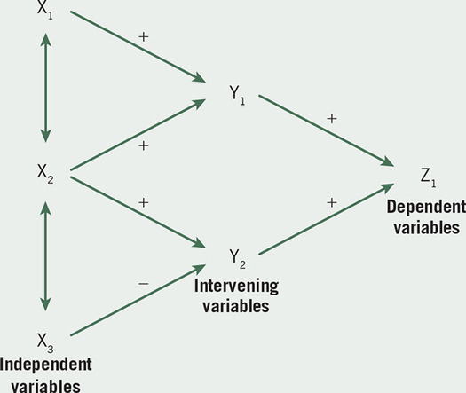
Figure 3.2 Two Groups With Different Treatments on X Are Compared in Terms of Y
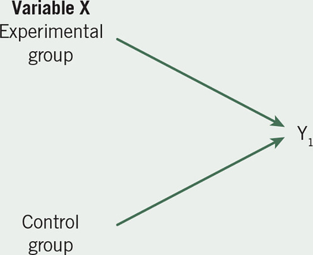
Source: Jungnickel (1990). Reprinted with permission.
These two models are meant only to introduce possibilities for connecting independent and dependent variables to build theories. More complicated designs employ multiple independent and dependent variables in elaborate models of causation (Blalock, 1969, 1985, 1991). For example, Jungnickel (1990), in a doctoral dissertation proposal about research productivity among faculty in pharmacy schools, presented a complex visual model, as shown in Figure 3.3. Jungnickel asked what factors influence a faculty member’s scholarly research performance. After identifying these factors in the literature, he adapted a theoretical framework found in nursing research (Megel, Langston, & Creswell, 1987) and developed a visual model portraying the relationship among these factors, following the rules for constructing a model introduced earlier. He listed the independent variables on the far left, the intervening variables in the middle, and the dependent variables on the right. The direction of influence flowed from the left to the right, and he used plus and minus signs to indicate the hypothesized direction.
Placement of Quantitative Theories
In quantitative studies, one uses theory deductively and places it toward the beginning of the proposed study. With the objective of testing or verifying a theory rather than developing it, the researcher advances a theory, collects data to test it, and reflects on its confirmation or disconfirmation by the results. The theory becomes a framework for the entire study, an organizing model for the research questions or hypotheses and for the data collection procedure. The deductive model of thinking used in a quantitative study is shown in Figure 3.4. The researcher tests or verifies a theory by examining hypotheses or questions derived from it. These hypotheses or questions contain variables (or constructs) that the researcher needs to define. Alternatively, an acceptable definition might be found in the literature. From here, the investigator locates an instrument to use in measuring or observing attitudes or behaviors of participants in a study. Then the investigator collects scores on these instruments to confirm or disconfirm the theory.
Figure 3.3 A Visual Model of a Theory of Faculty Scholarly Performance
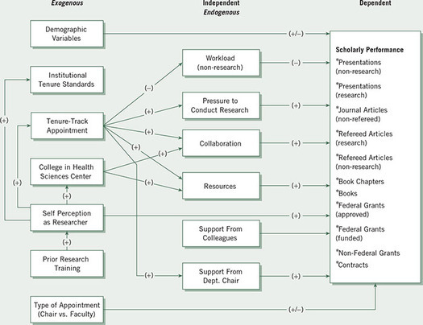
Source: Jungnickel (1990). Reprint with permission.
Figure 3.4 The Deductive Approach Typically Used in Quantitative Research
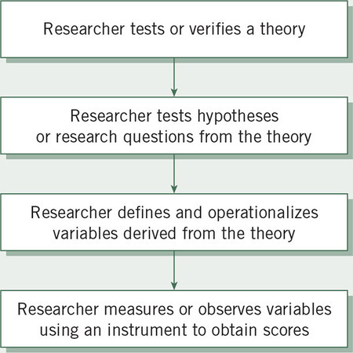
This deductive approach to research in the quantitative approach has implications for the placement of a theory in a quantitative research study (see Table 3.1).
A general guide is to introduce the theory early in a plan or study: in the introduction, in the literature review section, immediately after hypotheses or research questions (as a rationale for the connections among the variables), or in a separate section of the study. Each placement has its advantages and disadvantages.
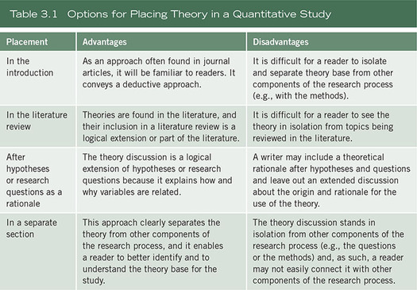
Here is a research tip: We write the theory into a separate section in a research proposal so that readers can clearly identify the theory from other components. Such a separate passage provides a complete explication of the theory section, its use, and how it relates to the study.
Writing a Quantitative Theoretical Perspective
Using these ideas, the following presents a model for writing a quantitative theoretical perspective section into a research plan. Assume that the task is to identify a theory that explains the relationship between independent and dependent variables.
Thus, the topics to include in a quantitative theory discussion are the theory to be used, its central hypotheses or propositions, information about past use of the theory and its application, and statements that reflect how it relates to a proposed study. Example 3.1, which contains a passage by Crutchfield (1986) from her dissertation, illustrates the use of this model.
Example 3.1 A Quantitative Theory Section
Crutchfield (1986) wrote a doctoral dissertation titled Locus of Control, Interpersonal Trust, and Scholarly Productivity. Surveying nursing educators, her intent was to determine if locus of control and interpersonal trust affected the levels of publications of the faculty. Her dissertation included a separate section in the introductory chapter titled “Theoretical Perspective,” which follows. It includes these points:
We have added annotations in italics to mark key passages.
Theoretical Perspective
In formulation of a theoretical perspective for studying the scholarly productivity of faculty, social learning theory provides a useful prototype. This conception of behavior attempts to achieve a balanced synthesis of cognitive psychology with the principles of behavior modification (Bower & Hilgard, 1981). Basically, this unified theoretical framework “approaches the explanation of human behavior in terms of a continuous (reciprocal) interaction between cognitive, behavioral, and environmental determinants” (Bandura, 1977, p. vii). [Author identifies the theory for the study.]
While social learning theory accepts the application of reinforcements such as shaping principles, it tends to see the role of rewards as both conveying information about the optimal response and providing incentive motivation for a given act because of the anticipated reward. In addition, the learning principles of this theory place special emphasis on the important roles played by vicarious, symbolic, and self-regulating processes (Bandura, 1971).
Social learning theory not only deals with learning, but also seeks to describe how a group of social and personal competencies (so called personality) could evolve out of social conditions within which the learning occurs. It also addresses techniques of personality assessment (Mischel, 1968), and behavior modification in clinical and educational settings (Bandura, 1977; Bower & Hilgard, 1981; Rotter, 1954). [Author describes social learning theory.]
Further, the principles of social learning theory have been applied to a wide range of social behavior such as competitiveness, aggressiveness, sex roles, deviance, and pathological behavior (Bandura & Walters, 1963; Bandura, 1977; Mischel, 1968; Miller & Dollard, 1941; Rotter, 1954; Staats, 1975). [Author describes the use of the theory.]
Explaining social learning theory, Rotter (1954) indicated that four classes of variables must be considered: behavior, expectancies, reinforcement, and psychological situations. A general formula for behavior was proposed which states: “the potential for a behavior to occur in any specific psychological situation is the function of the expectancy that the behavior will lead to a particular reinforcement in that situation and the value of that reinforcement” (Rotter, 1975, p. 57).
Expectancy within the formula refers to the perceived degree of certainty (or probability) that a causal relationship generally exists between behavior and rewards. This construct of generalized expectancy has been defined as internal locus of control when an individual believes that reinforcements are a function of specific behavior, or as external locus of control when the effects are attributed to luck, fate, or powerful others. The perceptions of causal relationships need not be absolute positions, but rather tend to vary in degree along a continuum depending upon previous experiences and situational complexities (Rotter, 1966). [Author explains variables in the theory.]
In the application of social learning theory to this study of scholarly productivity, the four classes of variables identified by Rotter (1954) will be defined in the following manner.
With these specific variables, the formula for behavior which was developed by Rotter (1975) would be adapted to read: The potential for scholarly behavior to occur within an educational institution is a function of the expectancy that this activity will lead to specific rewards and of the value that the faculty member places on these rewards. In addition, the interaction of interpersonal trust with locus of control must be considered in relation to the expectancy of attaining rewards through behaviors (Rotter, 1967). Finally, certain characteristics, such as educational preparation, chronological age, post-doctoral fellowships, tenure, or full-time versus part-time employment may be associated with the scholarly productivity of nurse faculty in a manner similar to that seen within other disciplines. [Author applied the concepts to her study.]
The following statement represents the underlying logic for designing and conducting this study. If faculty believe that: (a) their efforts and actions in producing scholarly works will lead to rewards (locus of control), (b) others can be relied upon to follow through on their promises (interpersonal trust), (c) the rewards for scholarly activity are worthwhile (reward values), and (d) the rewards are available within their discipline or institution (institutional setting), then they will attain high levels of scholarly productivity (pp. 12–16). [Author concluded with the if-then logic to relate the independent variables to the dependent variables.]
Qualitative Theory Use
Variation in Theory Use in Qualitative Research
Qualitative inquirers use theory in their studies in several ways. First, much like in quantitative research, it is used as a broad explanation for behavior and attitudes, and it may be complete with variables, constructs, and hypotheses. For example, ethnographers employ cultural themes or aspects of culture to study in their qualitative projects, such as social control, language, stability and change, or social organization, such as kinship or families (see Wolcott’s 2008 discussion about texts that address cultural topics in anthropology). Themes in this context provide a ready-made series of hypotheses to be tested from the literature. Although researchers might not refer to them as theories, they provide broad explanations that anthropologists use to study the culture-sharing behavior and attitudes of people. This approach is popular in qualitative health science research in which investigators begin with a theoretical or conceptual model, such as the adoption of health practices or a quality of life theoretical orientation.
Second, researchers increasingly use a theoretical lens or perspective in qualitative research, which provides an overall orienting lens for the study of questions of gender, class, and race (or other issues of marginalized groups). This lens becomes a transformative perspective that shapes the types of questions asked, informs how data are collected and analyzed, and provides a call for action or change. Qualitative research of the 1980s underwent a transformation to broaden its scope of inquiry to include these theoretical lenses. They guide the researchers as to what issues are important to examine (e.g., marginalization, empowerment, oppression, power) and the people who need to be studied (e.g., women, low economic social status, ethnic and racial groups, sexual orientation, disability). They also indicate how the researcher positions himself or herself in the qualitative study (e.g., up front or biased from personal, cultural, and historical contexts) and how the final written accounts need to be written (e.g., without further marginalizing individuals, by collaborating with participants), and recommendations for changes to improve lives and society. In critical ethnography studies, for example, researchers begin with a theory that informs their studies. This causal theory might be one of emancipation or repression (Thomas, 1993).
Some of these qualitative theoretical perspectives available to the researcher are as follows:
Rossman and Rallis (2012) captured the sense of theory as critical and postmodern perspectives in qualitative inquiry:
As the 20th century draws to a close, traditional social science has come under increasing scrutiny and attack as those espousing critical and postmodern perspectives challenge objectivist assumptions and traditional norms for the conduct of research. The critical tradition is alive and well in the social sciences. Postmodernists reject the notion that knowledge is definite and univocal. Central to this attack are four interrelated assertions: (a) Research fundamentally involves issues of power; (b) the research report is not transparent but rather it is authored by a raced, gendered, classed, and politically oriented individual; (c) race, class, and gender (the canonical triumvirate to which we would add sexual orientation, able-bodiedness, and first language, among others) are crucial for understanding experience; and (d) historically, traditional research has silenced members of oppressed and marginalized groups. (p. 91)
Third, distinct from this theoretical orientation are qualitative studies in which theory (or some other broad explanation) becomes the end point. It is an inductive process of building from the data to broad themes to a generalized model or theory (see Punch, 2014). The logic of this inductive approach is shown in Figure 3.5.
The researcher begins by gathering detailed information from participants and then forms this information into categories or themes. These themes are developed into broad patterns, theories, or generalizations that are then compared with personal experiences or with existing literature on the topic.
The development of themes and categories into patterns, theories, or generalizations suggests varied end points for qualitative studies. For example, in case study research, Stake (1995) referred to an assertion as a propositional generalization—the researcher’s summary of interpretations and claims—to which is added the researcher’s own personal experiences, called “naturalistic generalizations” (p. 86). As another example, grounded theory provides a different end point. Inquirers hope to discover and advance a theory that is grounded in information from participants (Strauss & Corbin, 1998). Lincoln and Guba (1985) referred to “pattern theories” as explanations that develop during naturalistic or qualitative research. Rather than the deductive form found in quantitative studies, these pattern theories or generalizations represent interconnected thoughts or parts linked to a whole.
Fourth and finally, some qualitative studies do not employ any explicit theory. However, the case can be made that no qualitative study begins from pure observation and that prior conceptual structure composed of theory and method provides the starting point for all observations (Schwandt, 2014). Still, one sees qualitative studies that contain no explicit theoretical orientation, such as in phenomenology, in which inquirers attempt to build the essence of experience from participants (e.g., see Riemen, 1986). In these studies, the inquirer constructs a rich, detailed description of a central phenomenon.
Our research tips on theory use in a qualitative proposal are as follows:
Figure 3.5 The Inductive Logic of Research in a Qualitative Study
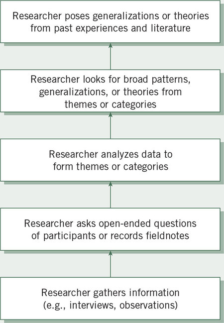
Locating the Theory in Qualitative Research
How theory is used affects its placement in a qualitative study. In those studies with a cultural theme or a theoretical lens, the theory occurs in the opening passages of the study (see Example 3.2). Consistent with the emerging design of qualitative inquiry, the theory may appear at the beginning and be modified or adjusted based on participant views. Even in the most theory-oriented qualitative design, such as critical ethnography, Lather (1986) qualified the use of theory:
Building empirically grounded theory requires a reciprocal relationship between data and theory. Data must be allowed to generate propositions in a dialectical manner that permits use of a priori theoretical frameworks, but which keeps a particular framework from becoming the container into which the data must be poured. (p. 267)
Example 3.2 A Theory Early in a Qualitative Study
Murguia, Padilla, and Pavel (1991) studied the integration of 24 Hispanic and Native American students into the social system of a college campus. They were curious about how ethnicity influenced social integration, and they began by relating the participants’ experiences to a theoretical model, the Tinto model of social integration. They felt that the model had been “incompletely conceptualized and, as a consequence, only imprecisely understood and measured” (p. 433).
Thus, the model was not being tested, as one would find in a quantitative project, but modified. At the end of the study, the authors refined Tinto’s model and advanced their modification that described how ethnicity functions. In contrast to this approach, in qualitative studies with an end point of a theory (e.g., a grounded theory), a pattern, or a generalization, the theory emerges at the end of the study. This theory might be presented as a logic diagram, a visual representation of relationships among concepts.
As Example 3.3 shows, we developed a visual model that interrelated variables, derived this model inductively from informant comments, and placed the model at the end of the study, where the central propositions in it could be contrasted with the existing theories and literature.
Mixed Methods Theory Use
Theory use in mixed methods studies may include using theory deductively, in quantitative theory testing and validity, or in using it inductively as in an emerging qualitative theory or pattern. In addition, there are several unique ways that theory is incorporated into a mixed methods study in which researchers collect, analyze, and integrate both quantitative and qualitative data using diverse mixed methods designs. This framework has taken two forms: (a) the use of a social science framework and (b) the use of a participatory–social justice framework. Both of these forms have emerged in the mixed methods literature over the past 5 to 10 years (see Creswell & Plano Clark, 2011).
Example 3.3 A Theory at the End of a Qualitative Study
Using a national database of 33 interviews with academic department chairpersons, we (Creswell & Brown, 1992) developed a grounded theory interrelating variables (or categories) of chair influence on scholarly performance of faculty. The theory section came into the article as the last section, where we presented a visual model of the theory developed inductively from categories of information supplied by interviewees. In addition, we also advanced directional hypotheses that logically followed from the model. Moreover, in the section on the model and the hypotheses, we compared the results from participants with results from other studies and the theoretical speculations in the literature. For example, we stated the following:
This proposition and its sub-propositions represent unusual, even contrary evidence, to our expectations. Contrary to proposition 2.1, we expected that the career stages would be similar not in type of issue but in the range of issues. Instead we found that the issues for post-tenure faculty covered almost all the possible problems on the list. Why were the tenured faculty’s needs more extensive than non-tenured faculty? The research productivity literature suggests that one’s research performance does not decline with the award of tenure (Holley 1977). Perhaps diffuse career goals of post-tenure faculty expand the possibilities for “types” of issues. In any case, this sub-proposition focuses attention on the understudied career group that Furniss (1981) reminds us of needs to be examined in more detail (p. 58).
Social Science Theory Use
A social science theory can become an overarching framework for mixed methods research. This social science theory may be drawn from diverse theories found in the social sciences, such as leadership, economics, political science, marketing, behavioral change, adoption or diffusion, or any number of social science theories. It may be presented as a literature review, as a conceptual model, or as a theory that helps to explain what the researcher seeks to find in a study.
The incorporation of a social science theory into mixed methods uses the procedures identified earlier in this chapter for inclusion of a quantitative theory-use in a study. The key points of this theory-use are as follows:
An example of a social science theory can be found in a mixed methods study about chronic pain and its management through learned resourcefulness by Kennett, O’Hagan, and Cezer (2008). These authors presented a mixed methods study to understand how learned resourcefulness empowers individuals. In this study, they gathered quantitative measures on Rosenbaum’s Self-Control Schedule (SCS) and collected interviews with patients coping with chronic pain. In the opening paragraph of their study, they advanced the purpose:
Taking a critical realist perspective informed by Rosenbaum’s (1990, 2000) model of self-control, we combine a quantitative measure of learned resourcefulness with a qualitative text-based analysis to characterize the processes that come into play in the self-management of pain for high—and low—resourceful clients following a multimodel treatment-based pain program. (p. 318)
Following this passage, they then advanced the model of learned resourcefulness that guided their study. They introduced the major components of Rosenbaum’s model. This was then followed by the research literature on resourcefulness as an important predictor of adopting healthy behavior and a discussion of one of Rosenbaum’s experiments relating resourcefulness to coping with pain. The authors then discussed the factors of the model leading to self-control, such as factors related to process-regulating cognitions (e.g., supporting family and friends), coping strategies (e.g., ability to cope with pain such as diverting attention and reinterpreting pain), and staying in (or dropping out of) programs. The authors at this point might have drawn a diagram of the theory to be explicit about factors that influenced self-control. They provided next, however, a series of questions drawn from Rosenbaum’s model and the literature that guided their study examining the impact of a cognitive-behavioral chronic pain management program on self-management and how resourcefulness and a sense of self-directedness influence self-management skills for chronic pain. Toward the end of the article, they revisited the factors leading to self-management and proposed a diagram of the most salient factors.
Participatory–Social Justice Theory Use
The use and acceptability of participatory–social justice theories in mixed methods research have been growing in the last decade. Undoubtedly, the impetus for this has been the work of Mertens (2003, 2009), who has not only conveyed the major purpose of this theory but also how it might be incorporated into the general research process and mixed methods. Both participatory and social justice frameworks have the effect of involving participants collaboratively in the research, bringing about change to address inequities, and helping underrepresented groups and populations. A number of empirical articles have appeared in the Journal of Mixed Methods Research advancing this theory-use in mixed methods, including a study of women’s interest in science (Buck, Cook, Quigley, Eastwood, & Lucas, 2009) and a study of women’s social capital (Hodgkin, 2008). A paper by Sweetman (2008) identified 34 mixed methods studies that utilized a transformative framework. Then in 2010, Sweetman, Badiee, and Creswell (2010) discussed transformative criteria—drawing on Mertens (2003, 2009)—that might be incorporated into mixed methods studies and surveyed 13 studies that included elements of the criteria.
The literature is growing on the use of this theoretical orientation framework and mixed methods research. It seems especially applicable to the study of community health issues and the study of marginalized groups, wherever they might appear in the world. Undergirding this theoretical orientation would be a broader philosophical stance, the transformative framework, as discussed in Chapter 1. In Chapter 1, we discussed the transformative worldview as one of the four primary worldviews that would inform quantitative, qualitative, and mixed methods research. Indeed, one could question whether the transformative framework lies at a broad, philosophical worldview level or at a narrower, more theoretical level informing what one might learn and explain in a study. Two issues have dominated the discussion of using a transformative framework in mixed methods: (a) What is a transformative framework? and (b) How would a mixed methods researcher incorporate it into a rigorous, sophisticated mixed methods study? Here we discuss it as a theoretical framework that can surround and inform a mixed methods project.
A transformative mixed methods framework (also called the transformative research paradigm; Mertens, 2009) is a set of assumptions and procedures used in research. Common themes are as follows:
Further, the transformative approach applies to people who experience discrimination and oppression, including (but not limited to) race/ethnicity, disability, immigrant status, political conflicts, sexual orientation, poverty, gender, and age (Mertens, 2010).
How this framework is integrated into a mixed methods study is still evolving, but Mertens (2003) identified several elements of the framework as they relate to the steps in the process of research. These elements are mentioned in Box 3.1. Reading through these questions, one gains a sense of the importance of studying issues of discrimination and oppression and of recognizing diversity among study participants. These questions also address treating individuals respectfully through gathering and communicating data collection and through reporting results that lead to changes in social processes and relationships.
These questions were further operationalized as a set of 10 criteria (and questions) that one might use to evaluate the inclusion of transformative theoretical thinking into a mixed methods study (Sweetman et al., 2010):
Box 3.1 Transformative-Emancipatory Questions for Mixed Methods Researchers Throughout the Research Process
Defining the Problem and Searching the Literature
Identifying the Research Design
Identifying Data Sources and Selecting Participants
Identifying or Constructing Data Collection Instruments and Methods
Analyzing, Interpreting, and Reporting and Using Results
Source: Adapted from Mertens (2003). Reprinted with permission.
These are high standards for any publication, and the review of 13 studies by Sweetman and colleagues (2010) showed an uneven inclusion of the 10 criteria in mixed methods studies. Only 2 of the 13 studies explicitly referred to their framework as “transformative.” More appropriate would be to consider these frameworks as theoretical lenses that might be applied within a mixed methods study. They can be incorporated by
One of the best ways to learn how to incorporate a transformative framework into a mixed methods study is to examine published journal articles and study how it is being incorporated into the process of research. Example 3.4 illustrates good use of the transformative framework.
Example 3.4 Theory in a Feminist Mixed Methods Study
An article published in the Journal of Mixed Methods Research by Hodgkin (2008) illustrates the use of a feminist emancipatory lens in a mixed methods study. Hodgkin examined if men and women have different social capital profiles and why women participated more in social and community activities than in civic activities in Australia. Her stated aim of the study was to “demonstrate the use of mixed methods in feminist research” (p. 296). Toward the beginning of her article, she discussed the feminist research component of her study, such as drawing attention to the lack of gender focus in studies of social capital, using qualitative and quantitative research to give voice to women’s experiences, and locating her study within the transformative paradigm. Through her quantitative results, she found a difference in social capital for men and women, and then she explored in a second phase the viewpoints of women, noting women’s involvement in informal social participation and community participation. Participation in civic levels of involvement were low, and themes resulting from women were related to wanting to be a “good mother,” wanting to avoid social isolation, and wanting to be an active citizen.
Summary
Theory has a place in quantitative, qualitative, and mixed methods research. Researchers use theory in a quantitative study to provide an explanation or prediction about the relationship among variables in the study. Thus, it is essential to have grounding in the nature and use of variables as they form research questions and hypotheses. A theory explains how and why the variables are related, acting as a bridge between or among the variables. Theory may be broad or narrow in scope, and researchers state their theories in several ways, such as a series of hypotheses, if-then logic statements, or visual models. Using theories deductively, investigators advance them at the beginning of the study in the literature review. They also include them with the hypotheses or research questions or place them in a separate section. A script can help design the theory section for a research proposal.
In qualitative research, inquirers employ theory as a broad explanation, much like in quantitative research, such as in ethnographies. It may also be a theoretical lens or perspective that raises questions related to gender, class, race, or some combination of these. Theory also appears as an end point of a qualitative study, a generated theory, a pattern, or a generalization that emerges inductively from data collection and analysis. Grounded theorists, for example, generate a theory grounded in the views of participants and place it as the conclusion of their studies. Some qualitative studies do not include an explicit theory and present descriptive research of the central phenomenon.
Mixed methods researchers use theory as a framework informing many aspects of design as they collect, analyze, and interpret quantitative and qualitative data. This framework takes two forms: (a) a social science framework or (b) a participatory–social justice framework. A social science framework is placed at the beginning of studies, provides an explanation for the quantitative and (perhaps) qualitative components (e.g., data collection, analysis, interpretation) of a study, and informs the findings and results. A participatory–social justice theory in mixed methods is a framework that has emerged in recent years. It is a lens for looking at a problem recognizing the non-neutrality of knowledge, the pervasive influence of human interests, and issues such as power and social relationships. A mixed methods study helps to improve people and society. Groups often helped by this research are feminists; diverse ethnic/racial groups; people with disabilities; and lesbian, gay, bisexual, transgendered, and queer communities. Mixed methods researchers incorporate this framework into multiple stages of the research process, such as the introduction, the research questions, the data collection, and an interpretation that calls for change. Criteria have been developed for how to incorporate a participatory–social justice framework into a mixed methods study.
Writing Exercises
Additional Readings
Bachman, R. D., & Schutt, R. K. (2017). Fundamentals of research in criminology and criminal justice (4th ed.). Los Angeles, CA: Sage.
In their book, Ronet Bachman and Russell Schutt include an easy-to-understand chapter on causation and experimentation. They discuss the meaning of causation, the criteria for achieving it, and how to use this information to come to causal conclusions. Especially useful is their discussion of the conditions necessary for determining causality.
Blalock, H. (1991). Are there any constructive alternatives to causal modeling? Sociological Methodology, 21, 325–335.
For years we have used the ideas of Herbert Blalock to construct our meaning of causation in social research. In this thoughtful essay, Blalock stated that correlational methods do not equate to causation. He talked about the potential of “lagged” effects in understanding causation, variables that emerge over time and that can be difficult to specify. He also called for making assumptions explicit in causal mechanisms in experimental designs. With these points in mind, Blalock called for the use of more complex causal models to test important questions in social research.
Flinders, D. J., & Mills, G. E. (Eds.). (1993). Theory and concepts in qualitative research: Perspectives from the field. New York: Columbia University, Teachers College Press.
David Flinders and Geoffrey Mills have edited a book about perspectives from the field—“theory at work”—as described by different qualitative researchers. The chapters illustrate little consensus about defining theory and whether it is a vice or virtue. Further, theory operates at many levels in research, such as formal theories, epistemological theories, methodological theories, and meta-theories. Given this diversity, it is best to see actual theory at work in qualitative studies, and this volume illustrates practice from critical, personal, formal, and educational criticism.
Mertens, D. M. (2003). Mixed methods and the politics of human research: The transformative-emancipatory perspective. In A. Tashakkori & C. Teddlie (Eds.), Handbook of mixed methods in social and behavioral research (pp. 135–164). Thousand Oaks, CA: Sage.
Donna Mertens recognizes that historically, research methods have not concerned themselves with the issues of the politics of human research and social justice. Her chapter explores the transformative-emancipatory paradigm of research as a framework or lens for mixed methods research as it has emerged from scholars from diverse ethnic/racial groups, people with disabilities, and feminists. A unique aspect of her chapter is how she weaves together this paradigm of thinking and the steps in the process of conducting mixed methods research.
Thomas, G. (1997). What’s the use of theory? Harvard Educational Review, 67(1), 75–104.
Gary Thomas presents a reasoned critique of the use of theory in educational inquiry. He notes the various definitions of theory and maps out four broad uses of theory: (a) as thinking and reflection, (b) as tighter or looser hypotheses, (c) as explanations for adding to knowledge in different fields, and (d) as formally expressed statements in science. Having noted these uses, he then embraces the thesis that theory unnecessarily structures and constrains thought. Instead, ideas should be in a constant flux and should be “ad hocery,” as characterized by Toffler.
https://edge.sagepub.com/creswellrd5e
Students and instructors, please visit the companion website for videos featuring John W. Creswell, full-text SAGE journal articles, quizzes and activities, plus additional tools for research design.
Chapter 4 Writing Strategies and Ethical Considerations
Before designing a proposal, it is important to have an idea of the general structure or outline of the topics and their order. The structure will differ depending on whether you write a quantitative, qualitative, or a mixed methods project. Another general consideration is to be aware of good writing practices that will help to ensure a consistent and highly readable proposal (or research project). Throughout the project, it is important to engage in ethical practices and to anticipate the ethical issues prior to the study that will likely arise. This chapter provides guidance for the overall structure of proposals or projects, writing practices that make projects easy to read, and ethical issues that need to be anticipated in research studies.
Writing the Proposal
Arguments Presented in a Proposal
It is helpful to consider early in planning the study the major points that need to be addressed in a proposal. These points—or topics—all need to be interconnected to provide a cohesive picture of the entire project. For us, these topics seem to span all proposals, whether the project is qualitative, quantitative, or mixed methods. We think that a good place to start is by examining Maxwell’s (2013) list of the core arguments that need to be advanced in any proposal. We will summarize them in our own words:
These nine questions, if adequately addressed in one section for each question, constitute the foundation of good research, and they could provide the overall structure for a proposal. The inclusion of validating findings, ethical considerations (to be addressed shortly), the need for preliminary results, and early evidence of practical significance focus a reader’s attention on key elements often overlooked in discussions about proposed projects.
Format for a Qualitative Proposal
Beyond these nine questions, it is also helpful to have an overall outline or general structure for topics that will be included in a proposal for a study. Unquestionably, in qualitative research, no one structure for a qualitative proposal prevails. We do think, however, that a couple of general outlines would be helpful, especially for the student who has never written a thesis or dissertation project. Here we propose two alternative models. Example 4.1 is drawn from a constructivist/interpretivist perspective whereas Example 4.2 is based more on a participatory–social justice model of qualitative research.
Example 4.1 A Qualitative Constructivist/Interpretivist Format
Introduction
Statement of the problem (including existing literature about the problem, deficiencies in the literature, and relevance of study for audiences)
Purpose of the study
The research questions
Procedures
Philosophical assumptions or worldview of qualitative research
Qualitative design (e.g., ethnography, case study)
Role of the researcher
Data collection procedures
Data analysis procedures
Strategies for validating findings
Proposed narrative structure of the study
Anticipated ethical issues
Preliminary pilot findings (if available)
Expected impact and significance of study
References
Appendixes: Interview questions, observational forms, timeline, proposed budget, a summary of the proposed content of each chapter in the final study
In this example, the writer includes introduction, procedures, ethical issues, preliminary findings and expected impact of the study. A separate section reviewing the literature may be included, but it is optional, as discussed in Chapter 3. Several appendixes may seem unusual. Developing a timeline for the study and presenting a proposed budget provide useful information to committees, although these sections would be highly recommended, but optional in proposals. Also, because the number and type of chapters in qualitative research is highly variable, a summary of the proposed content of each chapter in the final study would be useful.
Example 4.2 A Qualitative Participatory–Social Justice Format
Introduction
Statement of the problem (including power, oppression, discrimination, need to develop rapport with community, etc.; issue addressed; existing literature about the problem; deficiencies in the literature; and relevance of the study for audiences)
Purpose of the study
The research questions
Procedures
Philosophical assumptions or worldview
Qualitative research strategy
Role of the researcher
Data collection procedures (including the collaborative approaches used with participants)
Data analysis procedures
Strategies for validating findings
Proposed narrative structure
Anticipated ethical issues
Preliminary pilot findings (if available)
Significance of the study and transformative changes likely to occur
References
Appendixes: Interview questions, observational forms, timeline, proposed budget, and a summary of proposed chapters for the final study
This format is similar to the constructivist/interpretivist format except that the inquirer identifies a specific participatory–social justice issue being explored in the study (e.g., oppression, discrimination, community involvement), advances a collaborative form of data collection, and mentions the anticipated changes that the research study will likely bring.
Format for a Quantitative Proposal
For a quantitative study, the format conforms to sections typically found in quantitative studies reported in journal articles. The form generally follows the model of an introduction, a literature review, methods, results, and discussion. In planning a quantitative study and designing a dissertation proposal, consider the following format to sketch the overall plan (see Example 4.3).
Example 4.3 A Quantitative Format
Introduction
Statement of the problem (issue, existing literature about problem, deficiencies in literature, relevance of study for audiences)
Purpose of the study
Research questions or hypotheses
Theoretical perspective
Review of the literature (theory may be included in this section instead of the introduction)
Methods
Type of research design (e.g., experimental, survey)
Population, sample, and participants
Data collection instruments, variables, and materials
Data analysis procedures
Anticipated ethical issues in the study
Preliminary studies or pilot tests
Appendixes: Instruments, timeline, and proposed budget
Example 4.3 is a standard format for a social science study (see Miller & Salkind, 2002), although the order of the sections, especially in the use of theory and the literature may vary from study to study (see, for example, Rudestam & Newton, 2014). This format, however, represents a typical order of topics for a quantitative proposal.
Format for a Mixed Methods Proposal
In a mixed methods design format, the researcher brings together approaches that are included in both the quantitative and qualitative formats. An example of such a format appears in Example 4.4 (adapted from Creswell & Plano Clark, 2011, 2018). Similar elements are found in a set of standards for publishing a mixed methods journal article being advanced by the American Psychological Association (Levitt et al., in press).
Example 4.4 A Mixed Methods Format
Introduction
The research problem (existing research on the problem, deficiencies in the literature that point to the need for both quantitative and qualitative data, relevance of study for audiences)
The purpose or study aim of the project and reasons or rationale for a mixed methods study
The research questions and hypotheses (quantitative questions or hypotheses, qualitative questions, mixed methods questions)
Philosophical foundations for using mixed methods research (if needed)
Literature review (typically review quantitative, qualitative, and mixed methods studies)
Methods
A definition of mixed methods research
The type of design used and its definition
Challenges (validity) in using this design and how they will be addressed; also validity approaches in both quantitative and qualitative research
Examples of use of the type of design in your field of study
A diagram of procedures
Quantitative data collection (ordered to fit the mixed methods design steps)
Quantitative data analysis
Qualitative data collection
Qualitative data analysis
Mixed methods or integration data analysis procedures
Researcher’s resources and skills to conduct mixed methods research
Potential ethical issues
References
Appendixes: Instruments, protocols, diagrams, timeline, budget, summary of major content for each chapter
This format shows that the researcher poses both a purpose statement and research questions for quantitative and qualitative components, as well as mixed components. It is important to specify early in the proposal the reasons (rationale) for the mixed methods approach and to identify key elements of the design, such as the type of mixed methods study, a visual diagram of the procedures, and both the quantitative and qualitative data collection and analysis steps. All of these parts could make the mixed methods proposal lengthier than either the qualitative or quantitative proposal.
Designing the Sections of a Proposal
Here are several research tips that we give to students about designing the overall structure of a proposal:
Writing Ideas
Over the years, John has collected books on how to write, and he typically is reading a new one during production of his research projects. In more recent years, he has bought fewer and fewer books about writing per se and instead has purchased good novels and nonfiction works from which to draw thoughts about writing tips. He routinely reads books on the New York Times top 10 list and popular books of fiction and nonfiction (for fiction, see Harding, 2009). He brings into his research methods classes segments from books to share to illustrate writing points. This is not to impress others with his literary acumen, but to encourage researchers, as writers, to reach out to their audience; to not wax eloquently in words, but to be concise, and to-the-point; and to practice writing rather than simply talk about it. This chapter, then, represents a collage of John’s favorite books on writing and the tips both of us have found useful for our scholarship writing.
Writing as Thinking
One sign of inexperienced writers is that they prefer to discuss their proposed study rather than write about it. As Stephen King (2000) recommended, it is helpful to write it out quickly as rough as it may be in the first rendering. We recommend the following:
The Habit of Writing
Establish the discipline or habit of writing in a regular and continuous way on your proposal. Although setting aside a completed draft of the proposal for a time may provide some perspective to review your work before final polishing. A start-and-stop process of writing often disrupts the flow of work. It may turn a well-meaning researcher into what we call a “weekend writer,” an individual who has time for working on research only on weekends after all the important work of the week has been accomplished. Continual work on the proposal is writing something each day or at least being engaged daily in the processes of thinking, collecting information, and reviewing that goes into manuscript and proposal production. We do feel that some people have a stronger urge to write than others. Perhaps this comes from a need to express oneself or a comfort level with self-expression or simply with training.
Select a time of day to work that is best for you, and then discipline yourself to write at this time each day. Choose a place free of distractions. Boice (1990, pp. 77–78) offered ideas about establishing good writing habits:
It is also important to acknowledge that writing moves along slowly and that a writer must ease into the process. Like the runner who stretches before a road race, the writer needs warm-up exercises for both the mind and the fingers. We are reminded of the piano player who engages in finger-stretching exercises before practicing a difficult piece that will put the hands into difficult positions. For your research, some leisurely writing activity, such as writing a letter to a friend, brainstorming on the computer, reading some good writing, or studying a favorite poem, can make the actual task of writing easier. We are reminded of John Steinbeck’s (1969) “warm-up period” (p. 42) described in detail in Journal of a Novel: The East of Eden Letters. Steinbeck began each writing day by writing a letter to his editor and close friend, Pascal Covici, in a large notebook supplied by Covici.
Other exercises may prove useful as warm-ups. Carroll (1990) provided examples of exercises to improve a writer’s control over descriptive and emotive passages:
This last exercise seems appropriate for qualitative researchers who analyze their data for multiple codes and themes (see Chapter 9 for qualitative data analysis).
Consider also the writing implements and the physical location that aid the process of disciplined writing. The implements—an online dictionary and a thesaurus, a tablet for jotting down thoughts, a cup of coffee, and a handful of Triscuits (Wolcott, 2009)—offer the writer options for ways to be comfortable when writing. The physical setting can also help. Annie Dillard (1989), the Pulitzer Prize–winning novelist, avoided appealing workplaces:
One wants a room with no view, so imagination can meet memory in the dark. When I furnished this study seven years ago, I pushed the long desk against a blank wall, so I could not see from either window. Once, fifteen years ago, I wrote in a cinder-block cell over a parking lot. It overlooked a tar-and-gravel roof. This pine shed under trees is not quite so good as the cinder-block study was, but it will do. (pp. 26–27)
Readability of the Manuscript
Before beginning the writing of a proposal, consider how you will enhance the readability of it for other people. The Publication Manual of the American Psychological Association (American Psychological Association [APA], 2010) discusses an orderly presentation by showing the relationships between ideas and through the use of transitional words. In addition, it is important to use consistent terms, a staging and foreshadowing of ideas, and coherence built into the plan.
Beginning researchers seem to struggle most with umbrella and attention thoughts. A proposal may include too many umbrella ideas—with the content not sufficiently detailed to support large ideas. This might occur in a literature review in which the researcher needs to provide fewer small sections and more larger sections that tie together large bodies of literature. A clear mark of this problem is a continual shift of ideas from one major idea to another in a manuscript. Often, one will see short paragraphs in introductions to proposals, like those written by journalists in newspaper articles. Thinking in terms of a detailed narrative to support umbrella ideas may help this problem.
Attention thoughts—those that provide organizational statements to guide the reader—are also needed. Readers need road signs to guide them from one major idea to the next (Chapters 6 and 7 of this book discuss major road signs in research, such as purpose statements and research questions and hypotheses). An organizing paragraph is often useful at the beginning and end of literature reviews. Readers need to see the overall organization of the ideas through introductory paragraphs and to be told the most salient points they should remember in a summary.
On a more detailed level, coherence builds through connecting sentences and paragraphs in the manuscript. Zinsser (1983) suggested that every sentence should be a logical sequel to the one that preceded it. The hook-and-eye exercise (Wilkinson, 1991) is useful for connecting thoughts from sentence to sentence and paragraph to paragraph. The basic idea here is that one sentence builds on the next and sentences in a paragraph build into the next paragraph. The way this occurs is by specific words that provide a linkage.
The passage in Example 4.5, from a draft of a student’s proposal, shows a high level of coherence. It comes from the introductory section of a qualitative dissertation project about at-risk students. In this passage, we have taken the liberty of drawing hooks and eyes to connect the words from sentence to another sentence and from paragraph to paragraph. As mentioned, the objective of the hook-and-eye exercise (Wilkinson, 1991) is to connect major thoughts (and words) of each sentence and paragraph. If such a connection cannot easily be made, the written passage lacks coherence; the ideas and topics shift; and the reader needs to add transitional words, phrases, or sentences to establish a clear connection. The reader also does not get a sense of how the ideas build in a study.
In John’s proposal development classes, he has provided a passage from an introduction to a proposal and asks students to connect the words and sentences using circles for key ideas and lines to connect these key words from sentence to sentence. It is important for a reader to find coherence in a proposal starting with the first page. He first gives his students an unmarked passage and then, after the exercise, provides a marked passage. Since the key idea of one sentence should connect to a key idea in the next sentence, they need to mark this relationship in the passage. If the sentences do not connect, then transition words are missing that need to be inserted. He also asks students to make sure that the paragraphs are connected with hooks and eyes as well as individual sentences.
Example 4.5 An Illustration of the Hook-and-Eye Technique
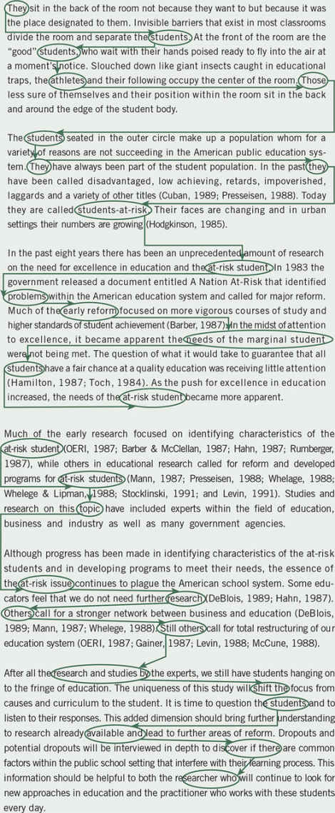
Voice, Tense, and “Fat”
From working with broad thoughts and paragraphs, we recommend moving on to the level of writing sentences and words. Similar grammar and sentence construction issues are addressed in the APA Publication Manual (APA, 2010), but we include this section to highlight some common grammar issues that we have seen in student proposals and in my own writing.
Our thoughts are directed toward the “polish” level of writing, to use Franklin’s (1986) term. It is a stage addressed late in the writing process. One can find an abundance of writing books about research writing and literary writing with rules and principles to follow concerning good sentence construction and word choice. Wolcott (2009), a qualitative ethnographer, for example, talks about honing editorial skills to eliminate unnecessary words (keeping the essential words); deleting the passive voice (using the active voice); scaling down qualifiers (keeping only one qualifier at best); eliminating overused phrases (completing striking these out); and reducing excessive quotations, use of italics, and parenthetical comments (all elements of good scholarly writing). The following additional ideas about active voice, verb tense, and reduced fat can strengthen and invigorate scholarly writing for dissertation and thesis proposals.
Nowadays you can almost see bright people struggling to reinvent the complex sentence before your eyes. A friend of mine who is a college administrator every now and then has to say a complex sentence, and he will get into one of those morasses that begins, “I would hope that we would be able . . .” He never talked that way when I first met him, but even at his age, at his distance from the crisis in the lives of younger people, he’s been to some extent alienated from easy speech. (p. 172)
Begin studying good writing about research using qualitative, quantitative, and mixed methods designs. In good writing, the eye does not pause and the mind does not stumble on a passage. In this present book, we have attempted to draw examples of good research from human and social science journals, such as Administrative Science Quarterly, American Educational Research Journal, American Journal of Sociology, Image, Journal of Applied Psychology, Journal of Mixed Methods Research, Journal of Nursing Scholarship, and Sociology of Education. In the qualitative area, good literature serves to illustrate clear prose and detailed passages. Individuals who teach qualitative research assign well-known books from literature, such as Moby Dick, The Scarlet Letter, and The Bonfire of the Vanities, as reading assignments (Webb & Glesne, 1992). Journal of Contemporary Ethnography, Qualitative Family Research, Qualitative Health Research, Qualitative Inquiry, and Qualitative Research represent good, scholarly journals in qualitative research to examine. When using mixed methods research, examine journals that report studies with combined qualitative and quantitative research and data, including many social science journals, such as the Journal of Mixed Methods Research, The International Journal of Multiple Research Approaches, Field Methods, Quality and Quantity, and the International Journal of Social Research Methodology. Examine the numerous articles cited in the SAGE Handbook of Mixed Methods in Social and Behavioral Research (Tashakkori & Teddlie, 2010) and in The Mixed Methods Reader (Plano Clark & Creswell, 2008).
Ethical Issues to Anticipate
In addition to conceptualizing the writing process for a proposal, researchers need to anticipate the ethical issues that may arise during their studies (Berg, 2001; Hesse-Biber & Leavy, 2011; Punch, 2005; Sieber, 1998). Research involves collecting data from people, about people (Punch, 2014). Writing about these anticipated ethical issues is required in making an argument for a study as well as being an important topic in the format for proposals. Researchers need to protect their research participants; develop a trust with them; promote the integrity of research; guard against misconduct and impropriety that might reflect on their organizations or institutions; and cope with new, challenging problems (Israel & Hay, 2006). Ethical questions are apparent today in such issues as personal disclosure, authenticity, and credibility of the research report; the role of researchers in cross-cultural contexts; and issues of personal privacy through forms of Internet data collection (Israel & Hay, 2006).
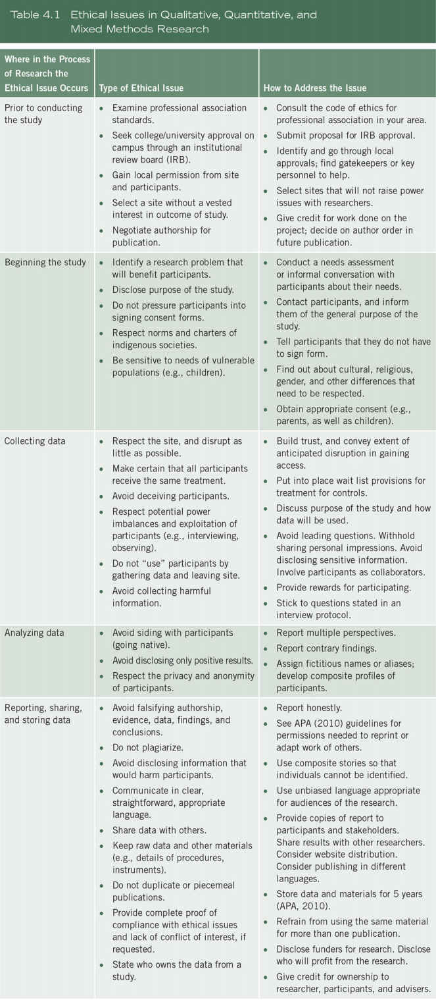
Sources: Adapted from APA (2010); Creswell (2013); Lincoln (2009); Mertens and Ginsberg (2009); and Salmons (2010).
Ethical issues in research command increased attention today. The ethical considerations that need to be anticipated are extensive, and they are reflected through the research process. These issues apply to qualitative, quantitative, and mixed methods research and to all stages of research. Proposal writers need to anticipate them and actively address them in their research plans. Accordingly, it is helpful to address them as they relate to different phases of inquiry. As shown in Table 4.1, attention needs to be directed toward ethical issues prior to conducting the study; beginning a study; during data collection and data analysis; and in reporting, sharing, and storing the data.
Prior to Beginning the Study
Beginning the Study
Collecting the Data
Analyzing the Data
Reporting, Sharing, and Storing Data
Summary
It is helpful to consider how to write a research proposal before actually engaging in the process. Consider the nine arguments advanced by Maxwell (2005) as the key elements to include, and then use one of the four topical outlines provided to craft a thorough qualitative, quantitative, or mixed methods proposal.
In proposal or project development, begin putting words down on paper early to think through ideas; establish the habit of writing on a regular basis; and use strategies such as applying consistent terms, different levels of narrative thoughts, and coherence to strengthen writing. Writing in the active voice, using strong verbs, and revising and editing will help as well.
Before writing the proposal, it is useful to consider the ethical issues that can be anticipated and described in the proposal. These issues relate to all phases of the research process. With consideration for participants, research sites, and potential readers, studies can be designed that contain good ethical practices.
Writing Exercises
Additional Readings
American Psychological Association. (2010). Publication Manual of the American Psychological Association (6th ed.). Washington, DC: Author.
This style manual is an essential tool to have as a researcher. In terms of writing qualitative research, it reviews ethical issues and legal standards in publishing. It covers writing clearly and concisely, addressing such topics as continuity, tone, precision and clarity, and strategies to improve writing style. It gives ample illustrations about how to reduce bias in a scholarly research report. It includes sections on the mechanics of style, such as punctuation, spelling, capitalization, and abbreviations. These are a few of the tips for writing that scholars need.
Israel, M., & Hay, I. (2006). Research ethics for social scientists: Between ethical conduct and regulatory compliance. Thousand Oaks, CA: Sage.
Mark Israel and Iain Hay provide a thoughtful analysis of the practical value of thinking seriously and systematically about what constitutes ethical conduct in the social sciences. They review the different theories of ethics, such as the consequentialist and the nonconsequentialist approaches, virtue ethics, and normative and care-oriented approaches to ethical conduct. They also offer an international perspective, drawing on the history of ethical practices in countries around the world. Throughout the book, they offer practical case examples and ways researchers might treat the cases ethically. In the appendix, they provide three case examples and then call upon leading scholars to comment about how they would approach the ethical issue.
Maxwell, J. (2013). Qualitative research design: An interactive approach (3rd ed.). Thousand Oaks, CA: Sage.
Joe Maxwell provides a good overview of the proposal development process for qualitative research that is applicable in many ways to quantitative and mixed methods research as well. He states that a proposal is an argument to conduct a study and presents an example that describes nine necessary steps. Moreover, he includes a complete qualitative proposal and analyzes it as an illustration of a good model to follow.
Sieber, J. E. (1998). Planning ethically responsible research. In L. Bickman & D. J. Rog (Eds.), Handbook of applied social research methods (pp. 127–156). Thousand Oaks, CA: Sage.
Joan Sieber discusses the importance of ethical planning as integral to the process of research design. In this chapter, she provides a comprehensive review of many topics related to ethical issues, such as IRBs, informed consent, privacy, confidentiality, and anonymity, as well as elements of research risk and vulnerable populations. Her coverage is extensive, and her recommendations for strategies are numerous.
Wolcott, H. F. (2009). Writing up qualitative research (3rd ed.). Thousand Oaks, CA: Sage.
Harry Wolcott, a distinguished educational ethnographer, has compiled an excellent resource guide addressing numerous aspects of the writing process in qualitative research. He surveys techniques useful in getting started in writing; developing details; linking with the literature, theory, and method; tightening up with revising and editing; and finishing the process by attending to such aspects as the title and appendixes. For all aspiring writers, this is an essential book, regardless of whether a study is qualitative, quantitative, or mixed methods.
https://edge.sagepub.com/creswellrd5e
Students and instructors, please visit the companion website for videos featuring John W. Creswell, full-text SAGE journal articles, quizzes and activities, plus additional tools for research design.
Part II Designing Research
This section relates the three approaches—(a) quantitative, (b) qualitative, and (c) mixed methods—to the steps in the process of research. Each chapter addresses a separate step in this process, beginning with introducing a study.
Chapter 5 The Introduction
After having decided on a qualitative, quantitative, or mixed methods approach and after conducting a preliminary literature review and deciding on a format for a proposal, the next step in the process is to design or plan the study. A process of organizing and writing out ideas begins, starting with designing an introduction to a proposal. This chapter discusses the composition and writing of a scholarly introduction and examines the differences in writing an introduction for these three different types of designs. Then the discussion turns to the five components of writing a good introduction: (a) establishing the problem leading to the study, (b) reviewing the literature about the problem, (c) identifying deficiencies in the literature about the problem, (d) targeting an audience and noting the significance of the problem for this audience, and (e) identifying the purpose of the proposed study. These components comprise a social science deficiency model of writing an introduction, because a major component of the introduction is to set forth the deficiencies in past research. To illustrate this model, a complete introduction in a published research study is presented and analyzed.
The Importance of Introductions
An introduction is the first passage in a journal article, dissertation, or scholarly research study. It sets the stage for the entire project. Wilkinson (1991) mentioned the following:
The introduction is the part of the paper that provides readers with the background information for the research reported in the paper. Its purpose is to establish a framework for the research, so that readers can understand how it is related to other research. (p. 96)
The introduction establishes the issue or concern leading to the research by conveying information about a problem. Because it is the initial passage in a study or proposal, special care must be given to writing it. The introduction needs to create reader interest in the topic, establish the problem that leads to the study, place the study within the larger context of the scholarly literature, and reach out to a specific audience. All of this is achieved in a concise section of a few pages. Because of the messages they must convey and the limited space allowed, introductions are challenging to write and understand.
A research problem is the problem or issue that leads to the need for a study. It can originate from many potential sources. It might spring from an experience researchers have had in their personal lives or workplaces. It may come from an extensive debate that has appeared in the literature. The literature may have a gap that needs to be addressed, alternative views that should be resolved, or a branch that needs to be studied. Further, the research problem might develop from policy debates in government or among top executives. The sources of research problems are often multiple. Identifying and stating the research problem that underlies a study is not easy. For example, to identify the issue of teenage pregnancy is to point to a problem for women and for society at large. Unfortunately, too many authors do not clearly identify the research problem, leaving readers to decide for themselves the importance of the issue. When the problem is not clear, it is difficult to understand all the other aspects of a research study, especially the significance of the research. Furthermore, the research problem is often confused with the research questions—those questions that the investigator would like answered in order to understand or explain the problem. To this complexity is added the need for introductions to carry the weight of encouraging the reader to read further and to see significance in the study.
Fortunately, there is a model for writing a good, scholarly social science introduction. Before introducing this model, it is necessary to briefly discuss the composition of a good abstract and then to distinguish subtle differences between introductions for qualitative, quantitative, and mixed methods studies.
An Abstract for a Study
An abstract is a brief summary of the contents of a study, and it allows readers to quickly survey the essential elements of a project. It is placed at the beginning of studies, and it is useful to have both for proposals for studies and for the final thesis or dissertation. The Publication Manual of the American Psychological Association (American Psychological Association [APA], 2010) indicates that the abstract can be the most important single paragraph in a study. It also needs to be accurate, non-evaluative (by adding comments beyond the scope of the research), coherent, readable, and concise. Its length varies, and some colleges and universities have requirements for an appropriate length (e.g., 250 words). The APA Publication Manual (APA, 2010) guidelines say that most abstracts are from 150 to 250 words.
There are the major components that we would include in an abstract. The content varies for abstracts for a report, a literature review, a theory-oriented paper, and for a methodological paper. We will focus here on the abstract for a proposal for an empirical article. We see several major components as part of the abstract, and these would be the same whether the proposal is quantitative, qualitative, or mixed methods. Also, we would order these components in the order in which they can be presented:
Here is an example of a short abstract for a qualitative study that contains all five elements.
The issue that this study addresses is the lack of women in martial arts competitions. To address this problem, the purpose of this study will be exploring motivation of female athletes in Tae Kwon Do competitions. To gather data, interviews with 4 female Tae Kwon Do tournament competitors were conducted. The interviews were transcribed and analyzed. This data leads to the following 3 themes: social support, self-efficacy, and goal orientation. These themes will be useful for understanding the optimal way to increase motivation in female martial artists. (Witte, 2011, personal communication)
Qualitative, Quantitative, and Mixed Methods Introductions
A general review of all introductions shows that they follow a similar pattern: the author announces a problem and justifies why it needs to be studied. The type of problem presented in an introduction will vary depending on the approach (see Chapter 1). In a qualitative project, the author will describe a research problem that can best be understood by exploring a concept or phenomenon. We have suggested that qualitative research is exploratory and that researchers use it to probe a topic when the variables and theory base are unknown. For example, Morse (1991) said this:
Characteristics of a qualitative research problem are: (a) the concept is “immature” due to a conspicuous lack of theory and previous research; (b) a notion that the available theory may be inaccurate, inappropriate, incorrect, or biased; (c) a need exists to explore and describe the phenomena and to develop theory; or (d) the nature of the phenomenon may not be suited to quantitative measures. (p. 120)
For example, urban sprawl (a problem) needs to be explored because it has not been examined in certain areas of a state. Alternatively, kids in elementary classrooms have anxiety that interferes with learning (a problem), and the best way to explore this problem is to go to schools and visit directly with teachers and students. Some qualitative researchers have a transformative lens through which the problem will be examined (e.g., the inequality of pay among women and men or the racial attitudes involved in profiling drivers on the highways). Thomas (1993) suggested that “critical researchers begin from the premise that all cultural life is in constant tension between control and resistance” (p. 9). This theoretical orientation shapes the structure of an introduction. Beisel (1990), for example, proposed to examine how the theory of class politics explained the lack of success of an anti-vice campaign in one of three American cities. Thus, within some qualitative studies, the approach in the introduction may be less inductive while still relying on the perspective of participants, like most qualitative studies. In addition, qualitative introductions may begin with a personal statement of experiences from the author, such as those found in phenomenological studies (Moustakas, 1994). They also may be written from a personal, first person, subjective point of view in which the researcher positions herself or himself in the narrative.
Less variation is seen in quantitative introductions. In a quantitative project, the problem is best addressed by understanding what factors or variables influence an outcome. For example, in response to worker cutbacks (a problem for all employees), an investigator may seek to discover what factors influence businesses to downsize. Another researcher may need to understand the high divorce rate among married couples (a problem) and examine whether financial issues contribute to divorce. In both of these situations, the research problem is one in which understanding the factors that explain or relate to an outcome helps the investigator best understand and explain the problem. In addition, in quantitative introductions, researchers sometimes advance a theory to test, and they will incorporate substantial reviews of the literature to identify research questions that need to be answered. A quantitative introduction may be written from the impersonal point of view and in the past tense, to convey objectivity.
A mixed methods study can employ either the qualitative or the quantitative approach (or some combination) to writing an introduction. In any given mixed methods study, the emphasis might tip in the direction of either quantitative or qualitative research, and the introduction will mirror that emphasis. For other mixed methods projects, the emphasis will be equal between qualitative and quantitative research. In this case, the problem may be one in which a need exists to both understand quantitatively the relationship among variables in a situation and explore qualitatively the topic in further depth. A mixed methods problem may also be that the existing research is primarily quantitative or qualitative in methodology, and a need exists to expand the approach to be more inclusive of diverse methodologies. A mixed methods project may initially seek to explain the relationship between smoking behavior and depression among adolescents, then explore the detailed views of these youth, and display different patterns of smoking and depression. With the first phase of this project as quantitative, the introduction may emphasize a quantitative approach with inclusion of a theory that predicts this relationship and a substantive review of the literature.
A Model for an Introduction
These differences among the various approaches are small, and they relate largely to the different types of problems addressed in qualitative, quantitative, and mixed methods studies. It should be helpful to illustrate an approach to designing and writing an introduction to a research study that researchers might use regardless of their approach.
The deficiencies model of an introduction is an approach to writing an introduction to a research study that builds on gaps existing in the literature. It includes the elements of stating the research problem, reviewing past studies about the problem, indicating deficiencies in these studies, and advancing the significance of the study. It is a general template for writing a good introduction. It is a popular approach used in the social sciences, and once its structure is elucidated, the reader will find it appearing repeatedly in many published research studies (not always in the order presented here). It consists of five parts, and a separate paragraph can be devoted to each part, for an introduction of about two pages in length:
An Illustration
Before a review of each part, here is an excellent example from a quantitative study published by Terenzini, Cabrera, Colbeck, Bjorklund, and Parente (2001) in The Journal of Higher Education and titled “Racial and Ethnic Diversity in the Classroom” (reprinted with permission). Following each major section in the introduction, we briefly highlight the component being addressed.
Since passage of the Civil Rights Act of 1964 and the Higher Education Act of 1965, America’s colleges and universities have struggled to increase the racial and ethnic diversity of their students and faculty members, and “affirmative action” has become the policy-of-choice to achieve that heterogeneity. [Authors state the narrative hook to create reader interest.] These policies, however, are now at the center of an intense national debate. The current legal foundation for affirmative action policies rests on the 1978 Regents of the University of California v. Bakke case, in which Justice William Powell argued that race could be considered among the factors on which admissions decisions were based. More recently, however, the U.S. Court of Appeals for the Fifth Circuit, in the 1996 Hopwood v. State of Texas case, found Powell’s argument wanting. Court decisions turning affirmative action policies aside have been accompanied by state referenda, legislation, and related actions banning or sharply reducing race-sensitive admissions or hiring in California, Florida, Louisiana, Maine, Massachusetts, Michigan, Mississippi, New Hampshire, Rhode Island, and Puerto Rico (Healy, 1998a, 1998b, 1999).
In response, educators and others have advanced educational arguments supporting affirmative action, claiming that a diverse student body is more educationally effective than a more homogeneous one. Harvard University President Neil Rudenstine claims that the “fundamental rationale for student diversity in higher education [is] its educational value” (Rudenstine, 1999, p. 1). Lee Bollinger, Rudenstine’s counterpart at the University of Michigan, has asserted, “A classroom that does not have a significant representation from members of different races produces an impoverished discussion” (Schmidt, 1998, p. A32). These two presidents are not alone in their beliefs. A statement published by the Association of American Universities and endorsed by the presidents of 62 research universities stated: “We speak first and foremost as educators. We believe that our students benefit significantly from education that takes place within a diverse setting” (“On the Importance of Diversity in University Admissions,” The New York Times, April 24, 1997, p. A27). [Authors identify the research problem of the need for diversity.]
Studies of the impact of diversity on student educational outcomes tend to approach the ways students encounter “diversity” in any of three ways. A small group of studies treat students’ contacts with “diversity” largely as a function of the numerical or proportional racial/ethnic or gender mix of students on a campus (e.g., Chang, 1996, 1999a; Kanter, 1977; Sax, 1996). . . . A second considerably larger set of studies take some modicum of structural diversity as a given and operationalizes students’ encounters with diversity using the frequency or nature of their reported interactions with peers who are racially/ethnically different from themselves. . . . A third set of studies examines institutionally structured and purposeful programmatic efforts to help students engage racial/ethnic and/or gender “diversity” in the form of both ideas and people.
These various approaches have been used to examine the effects of diversity on a broad array of student educational outcomes. The evidence is almost uniformly consistent in indicating that students in a racial/ethnically or gender-diverse community, or engaged in a diversity-related activity, reap a wide array of positive educational benefits. [Authors mention studies that have addressed the problem.]
Only a relative handful of studies (e.g., Chang, 1996, 1999a; Sax, 1996) have specifically examined whether the racial/ethnic or gender composition of the students on a campus, in an academic major, or in a classroom (i.e., structural diversity) has the educational benefits claimed. . . . Whether the degree of racial diversity of a campus or classroom has a direct effect on learning outcomes, however, remains an open question. [Deficiencies or the limitations in existing studies are noted.]
The scarcity of information on the educational benefits of the structural diversity on a campus or in its classrooms is regrettable because it is the sort of evidence the courts appear to be requiring if they are to support race-sensitive admissions policies. [Importance of the study for campus audiences is mentioned.]
This study attempted to contribute to the knowledge base by exploring the influence of structural diversity in the classroom on students’ development of academic and intellectual skills. . . . This study examines both the direct effect of classroom diversity on academic/intellectual outcomes and whether any effects of classroom diversity may be moderated by the extent to which active and collaborative instructional approaches are used in the course. [Purpose of the study is identified.] (pp. 510–512, reprinted by permission of The Journal of Higher Education)
The Research Problem
In Terenzini and colleagues’ (2001) article, the first sentence accomplishes both primary objectives for an introduction: (a) piquing interest in the study and (b) conveying a distinct research problem or issue. What effect did this sentence have? Would it entice a reader to read on? Was it pitched at a level so that a wide audience could understand it? These questions are important for opening sentences, and they are called a narrative hook, a term drawn from English composition, meaning words that serve to draw, engage, or hook the reader into the study. To learn how to write good narrative hooks, study first sentences in leading journals in different fields of study. Often, journalists provide good examples in the lead sentences of newspaper and magazine articles. Here, follow a few examples of lead sentences from social science journals:
All three of these examples present information easily understood by many readers. The first two—introductions in qualitative studies—demonstrate how reader interest can be created by reference to the single participant and by posing a question. The third example, a quantitative-experimental study, shows how one can begin with a literature perspective. All three examples demonstrate well how the lead sentence can be written so that the reader is not taken into a detailed morass of thought but lowered gently into the topic.
We use the metaphor of the writer lowering a barrel into a well. The beginning writer plunges the barrel (the reader) into the depths of the well (the article). The reader sees only unfamiliar material. The experienced writer lowers the barrel (the reader, again) slowly, allowing the reader to acclimate to the depths (of the study). This lowering of the barrel begins with a narrative hook of sufficient generality that the reader understands and can relate to the topic.
Beyond this first sentence, it is important to clearly identify the issue(s) or problem(s) that leads to a need for the study. Terenzini and colleagues (2001) discussed a distinct problem: the struggle to increase the racial and ethnic diversity on U.S. college and university campuses. They noted that policies to increase diversity are at “the center of an intense national debate” (p. 509).
In applied social science research, problems arise from issues, difficulties, and current practices in real-life situations. The research problem in a study begins to become clear when the researcher asks, “What is the need for this study?” or “What problem influenced the need to undertake this study?” For example, schools may not have implemented multicultural guidelines, the needs of faculty in colleges are such that they need to engage in professional development activities in their departments, minority students need better access to universities, or a community needs to better understand the contributions of its early female pioneers. These are all significant research problems that merit further study and establish a practical issue or concern that needs to be addressed. When designing the opening paragraphs of a proposal, which includes the research problem, keep in mind these research tips:
Studies Addressing the Problem
After establishing the research problem in the opening paragraphs, Terenzini and colleagues (2001) next justified its importance by reviewing studies that have examined the issue. We do not have in mind a complete literature review for the introduction passage. It is later, in the literature review section of a proposal, that students thoroughly review the literature. Instead, in the introduction, this literature review passage should summarize large groups of studies instead of individual ones. We tell students to reflect on their literature maps (described in Chapter 2) and look at and summarize the broad categories at the top into which they assigned their literature. These broad categories are what we mean by reviewing studies in an introduction to a proposal.
The purpose of reviewing studies in an introduction is to justify the importance of the study and to create distinctions between past studies and the proposed one. This component might be called “setting the research problem within the ongoing dialogue in the literature.” Researchers do not want to conduct a study that replicates exactly what someone else has examined. New studies need to add to the literature or to extend or retest what others have investigated. The ability to frame the study in this way separates novices from more experienced researchers. The veteran has reviewed and understands what has been written about a topic or certain problem in the field. This knowledge comes from years of experience following the development of problems and their accompanying literature.
The question often arises as to what type of literature to review. Our best advice would be to review research studies in which authors advance research questions and report data to answer them (i.e., empirical articles). These studies might be quantitative, qualitative, or mixed methods studies. The important point is that the literature provides the research being addressed in the proposal. Beginning researchers often ask, “What do I do now? No research has been conducted on my topic.” Of course, in some narrowly construed studies or in new, exploratory projects, no literature exists to document the research problem. Also, it makes sense that a topic is being proposed for study precisely because little research has been conducted on it. To counter this comment we suggest that an investigator think about the literature, using an inverted triangle as an image. At the bottom of the apex of the inverted triangle lies the scholarly study being proposed. This study is narrow and focused (and studies may not exist on it). If one broadens the review of the literature upward from the base of the inverted triangle, literature can be found, although it may be somewhat removed from the study at hand. For example, the narrow topic of at-risk African Americans in primary school may not have been researched; however, more broadly speaking, the topic of at-risk students generally in the primary school or at any level in education, may have been studied. The researcher would summarize the more general literature and end with statements about a need for studies that examine at-risk African American students at the primary school level.
To review the literature related to the research problem for an introduction to a proposal, consider these research tips:
Deficiencies in Past Literature
After advancing the problem and reviewing the literature about it, the researcher then identifies deficiencies found in this literature. Hence, we call this template for writing an introduction a deficiencies model. The nature of these deficiencies varies from study to study. Deficiencies in past literature may exist because topics have not been explored with a particular group, sample, or population; the literature may need to be replicated or repeated to see if the same findings hold because of mixed results given new samples of people or new sites for study; or the voices of underrepresented groups have not been heard in published literature. In any study, authors may mention one or more of these deficiencies. Deficiencies can often be found in the “suggestions for future research” sections of journal articles, and authors can reference these ideas and provide further justification for their proposed study.
Beyond mentioning the deficiencies, proposal writers need to tell how their planned study will remedy or address these deficiencies. For example, because past studies have overlooked an important variable, a study will include it and analyze its effect. For instance, because past studies have overlooked the examination of Native Americans as a cultural group, a study will include them as the participants in the project.
In Examples 5.1 and 5.2, the authors point out the gaps or shortcomings of the literature. Notice their use of key phrases to indicate the shortcomings: “what remains to be explored,” “little empirical research,” and “very few studies.”
Example 5.1 Deficiencies in the Literature—Needed Studies
For this reason, the meaning of war and peace has been explored extensively by social scientists (Cooper, 1965; Alvik, 1968; Rosell, 1968; Svancarova & Svancarova, 1967–68; Haavedsrud, 1970). What remains to be explored, however, is how veterans of past wars react to vivid scenes of a new war.
(Ziller, 1990, pp. 85–86)
Example 5.2 Deficiencies in the Literature—Few Studies
Despite an increased interest in micropolitics, it is surprising that so little empirical research has actually been conducted on the topic, especially from the perspectives of subordinates. Political research in educational settings is especially scarce: Very few studies have focused on how teachers use power to interact strategically with school principals and what this means descriptively and conceptually (Ball, 1987; Hoyle, 1986; Pratt, 1984).
(Blase, 1989, p. 381)
In summary, when identifying deficiencies in the past literature, proposal developers might use the following research tips:
These deficiencies might be mentioned using a series of short paragraphs that identify three or four shortcomings of the past research or focus on one major shortcoming, as illustrated in the Terenzini and colleagues’ (2001) introduction.
Significance of a Study for Audiences
In dissertations, writers often include a specific section describing the significance of the study for select audiences in order to convey the importance of the problem for different groups that may profit from reading and using the study. By including this section, the writer creates a clear rationale for the importance of the study. The more audiences that can be mentioned, the greater the importance of the study and the more it will be seen by readers to have wide application. In designing this section, one might include the following:
In Example 5.3, the author stated the significance of the study in the opening paragraphs of a journal article. This study by Mascarenhas (1989) examined ownership of industrial firms. He identified explicitly decision makers, organizational members, and researchers as the audience for the study.
Example 5.3 Significance of the Study Stated in an Introduction to a Quantitative Study
A study of an organization’s ownership and its domain, defined here as markets served, product scope, customer orientation, and technology employed (Abell and Hammond, 1979; Abell, 1980; Perry and Rainey, 1988), is important for several reasons. First, understanding relationships among ownership and domain dimensions can help to reveal the underlying logic of organizations’ activities and can help organization members evaluate strategies. . . . Second, a fundamental decision confronting all societies concerns the type of institutions to encourage or adopt for the conduct of activity. . . . Knowledge of the domain consequences of different ownership types can serve as input to that decision. . . . Third, researchers have often studied organizations reflecting one or two ownership types, but their findings may have been implicitly over generalized to all organizations.
(Mascarenhas, 1989, p. 582)
Terenzini and colleagues (2001) ended their introduction by mentioning how courts could use the information of the study to require colleges and universities to support “race-sensitive admissions policies” (p. 512). In addition, the authors might have mentioned the importance of this study for admissions offices and students seeking admission as well as the committees that review applications for admission.
Finally, good introductions to research studies end with a statement of the purpose or intent of the study. Terenzini and colleagues (2001) ended their introduction by conveying that they planned to examine the influence of structural diversity on student skills in the classroom. The purpose will be discussed in the next chapter: Chapter 6.
Summary
This chapter provides advice about composing and writing an introduction to a scholarly study. The first element is to consider how the introduction incorporates the research problems associated with quantitative, qualitative, or mixed methods research. Then, a five-part introduction is suggested as a model or template to use. Called the deficiencies model, it is based on first identifying the research problem (and including a narrative hook). Then it includes briefly reviewing the literature that has addressed the problem, indicating one or more deficiencies in the past literature and suggesting how the study will remedy these deficiencies. Finally, the researcher addresses specific audiences that will profit from research on the problem, and the introduction ends with a purpose statement that sets forth the intent of the study (that will be addressed in the next chapter).
Writing Exercises
Additional Readings
Bem, D. J. (1987). Writing the empirical journal article. In M. P. Zanna & J. M. Darley (Eds.), The compleat academic: A practical guide for the beginning social scientist (pp. 171–201). New York: Random House.
Daryl Bem emphasizes the importance of the opening statement in published research. He provides a list of rules of thumb for opening statements, stressing the need for clear, readable prose and a structure that leads the reader step-by-step to the problem statement. Examples are provided of both satisfactory and unsatisfactory opening statements. Bem calls for opening statements that are accessible to the nonspecialist yet not boring to the technically sophisticated reader.
Creswell, J. W., & Gutterman, T. (in press). Educational research: Designing, conducting, and evaluating qualitative and quantitative research (6th ed.). Upper Saddle River, NJ: Pearson Education.
John Creswell and Tim Gutterman include a chapter on introducing an educational research study. They provide details about establishing the importance of a research problem and give an example of the deficiencies model for crafting a good introduction to a study.
Maxwell, J. A. (2005). Qualitative research design: An interactive approach (2nd ed.). Thousand Oaks, CA: Sage.
Joe Maxwell reflects on the purpose of a proposal for a qualitative dissertation. One of the fundamental aspects of a proposal is to justify the project—to help readers understand not only what you plan to do but also why. He mentions the importance of identifying the issues you plan to address and indicating why they are important to study. In an example of a graduate student dissertation proposal, he shares the major issues the student has addressed to create an effective argument for the study.
Wilkinson, A. M. (1991). The scientist’s handbook for writing papers and dissertations. Englewood Cliffs, NJ: Prentice Hall.
Antoinette Wilkinson identifies the three parts of an introduction: (a) the derivation and statement of the problem and a discussion of its nature, (b) the discussion of the background of the problem, and (c) the statement of the research question. Her book offers numerous examples of these three parts—together with a discussion of how to write and structure an introduction. Emphasis is placed on ensuring that the introduction leads logically and inevitably to a statement of the research question.
https://edge.sagepub.com/creswellrd5e
Students and instructors, please visit the companion website for videos featuring John W. Creswell, full-text SAGE journal articles, quizzes and activities, plus additional tools for research design.
Chapter 6 The Purpose Statement
The last section of an introduction, as mentioned in Chapter 5, is to present a purpose statement that establishes the intent of the entire research study. It is the most important statement in the entire study, and it needs to be clear, specific, and informative. From it, all other aspects of the research follow, and readers will be lost unless it is carefully drafted. In journal articles, researchers write the purpose statement into introductions as the final statement; in theses and dissertations, it often stands as a separate section.
In this chapter devoted exclusively to the purpose statement, we address the reasons for developing it, key principles to use in its design, and examples of good models in crafting one for your proposal.
Significance and Meaning of a Purpose Statement
According to Locke, Spirduso, and Silverman (2013), the purpose statement indicates why you want to conduct the study and what you intend to accomplish. Unfortunately, proposal-writing texts give little attention to the purpose statement, and writers on method often incorporate it into discussions about other topics, such as specifying research questions or hypotheses. Wilkinson (1991), for example, refers to it within the context of the research question and objective. Other authors frame it as an aspect of the research problem (Castetter & Heisler, 1977). Closely examining their discussions, however, indicates that they both refer to the purpose statement as the central, controlling idea in a study.
This passage is called the purpose statement because it conveys the overall intent of a proposed study in a sentence or several sentences. It may also be called a study aim or the research objective of a project. In proposals, researchers need to distinguish clearly between the purpose statement, the research problem, and the research questions. The purpose statement sets forth the intent of the study, not the problem or issue leading to a need for the study (see Chapter 5). The purpose is also not the research questions—those questions that the data collection will attempt to answer (discussed in Chapter 7). Instead and again, the purpose statement sets the objectives, the intent, or the major idea of a proposal or a study. This idea builds on a need (the problem) and is refined into specific questions (the research questions).
Given the importance of the purpose statement, it is helpful to set it apart from other aspects of the proposal or study and to frame it as a single sentence or paragraph that readers can easily identify. Although qualitative, quantitative, and mixed methods purpose statements share similar topics, each is identified in the following paragraphs and illustrated with fill-in scripts for constructing a thorough but manageable purpose statement.
A Qualitative Purpose Statement
Good qualitative purpose statements contain information about the central phenomenon explored in the study, the participants in the study, and the research site. It also conveys an emerging design and uses research words drawn from the language of qualitative inquiry (Schwandt, 2014). Thus, one might consider several basic design features for writing this statement:
Although considerable variation exists in the inclusion of these points in purpose statements, a good dissertation or thesis proposal should contain many of them.
To assist you, here is a script that should be helpful in drafting a complete statement. A script, as used in this book, contains the major words and ideas of a statement and provides space for the researcher to insert information.
The purpose (or study aim) of this ___________ (strategy of inquiry, such as ethnography, case study, or other type) study is (was? will be?) to ___________ (understand? explore? develop? generate? discover?) the ___________ (central phenomenon being studied) for ___________ (the participants, such as the individual, groups, organization) at ___________ (research site). At this stage in the research, the ___________ (central phenomenon being studied) will be generally defined as ___________ (provide a general definition).
Examples 6.1–6.4 may not illustrate perfectly all the elements of this script, but they represent adequate models to study and emulate.
Example 6.1 A Purpose Statement in a Qualitative Phenomenology Study
Lauterbach (1993) studied five women who had each lost a baby in late pregnancy and their memories and experiences of this loss. Her purpose statement was as follows:
The phenomenological inquiry, as part of uncovering meaning, articulated “essences” of meaning in mothers’ lived experiences when their wished-for babies died. Using the lens of the feminist perspective, the focus was on mothers’ memories and their “living through” experience. This perspective facilitated breaking through the silence surrounding mothers’ experiences; it assisted in articulating and amplifying mothers’ memories and their stories of loss. Methods of inquiry included phenomenological reflection on data elicited by existential investigation of mothers’ experiences, and investigation of the phenomenon in the creative arts. (p. 134)
We found Lauterbach’s (1993) purpose statement in the opening section of the journal article under the heading “Aim of Study.” Thus, the heading calls attention to this statement. “Mothers’ lived experiences” would be the central phenomenon, the key being explored in a qualitative study, and the author uses the action word portray to discuss the meaning (a neutral word) of these experiences. The author further defined what experiences were examined when she identifies “memories” and “lived through” experiences. Throughout this passage, it is clear that Lauterbach used the strategy of phenomenology. Also, the passage conveys that the participants were mothers, and later in the article, the reader learns that the author interviewed a convenience sample of five mothers, each of whom had experienced a perinatal death of a child in her home.
Example 6.2 A Purpose Statement in a Case Study
Kos (1991) conducted a multiple case study of perceptions of reading-disabled middle school students concerning factors that prevented these students from progressing in their reading development. Her purpose statement read as follows:
The purpose of this study was to explore affective, social, and educational factors that may have contributed to the development of reading disabilities in four adolescents. The study also sought explanation as to why students’ reading disabilities persisted despite years of instruction. This was not an intervention study and, although some students may have improved their reading, reading improvement was not the focus of the study. (pp. 876–877)
Notice Kos’s (1991) disclaimer that this study was not a quantitative study measuring the magnitude of reading changes in the students. Instead, Kos clearly placed this study within the qualitative approach by using words such as explore. She focused attention on the central phenomenon of “factors” and provided a tentative definition by mentioning examples, such as “affective, social, and educational factors.” She included this statement under a heading called “Purpose of the Study” to call attention to it, and she mentioned the participants. In the abstract and the methodology section, a reader finds out that the study used the inquiry strategy of case study research and that the study took place in a classroom.
Example 6.3 A Purpose Statement in an Ethnography
Rhoads (1997) conducted a 2-year ethnographic study exploring how the campus climate can be improved for gay and bisexual males at a large university. His purpose statement, included in the opening section, was as follows:
The article contributes to the literature addressing the needs of gay and bisexual students by identifying several areas where progress can be made in improving the campus climate for them. This paper derives from a two-year ethnographic study of a student subculture composed of gay and bisexual males at a large research university; the focus on men reflects the fact that lesbian and bisexual women constitute a separate student subculture at the university under study. (p. 276)
With intent to improve the campus, this qualitative study falls into the genre of participatory–social justice research as mentioned in Chapter 3. Also, these sentences occur at the beginning of the article to signal the reader about the purpose of the study. The needs of these students become the central phenomenon under study, and the author seeks to identify areas that can improve the climate for gays and bisexual males. The author also mentioned that the strategy of inquiry is ethnographic and that the study will involve males (participants) at a large university (site). At this point, the author does not provide additional information about the exact nature of these needs or a working definition to begin the article. However, he does refer to identity and proffers a tentative meaning for that term in the next section of the study.
Example 6.4 A Purpose Statement in a Grounded Theory Study
Richie and colleagues (1997) conducted a qualitative study to develop a theory of the career development of 18 prominent, highly achieving African American Black and White women in the United States working in different occupational fields. In the second paragraph of this study, they stated the purpose:
The present article describes a qualitative study of the career development of 18 prominent, highly achieving African-American Black and White women in the United States across eight occupational fields. Our overall aim in the study was to explore critical influences on the career development of these women, particularly those related to their attainment of professional success. (p. 133)
In this statement, the central phenomenon is career development, and the reader learns that the phenomenon is defined as critical influences in the professional success of the women. In this study, success, a directional word, serves to define the sample of individuals to be studied more than to limit the inquiry about the central phenomenon. The authors plan to explore this phenomenon, and the reader learns that the participants are all women, in different occupational groups. Grounded theory as a strategy of inquiry is mentioned in the abstract and later in the procedure discussion.
A Quantitative Purpose Statement
Quantitative purpose statements differ considerably from the qualitative models in terms of the language and a focus on relating or comparing variables or constructs. Recall from Chapter 3 the types of major variables: independent, mediating, moderating, and dependent.
The design of a quantitative purpose statement includes the variables in the study and their relationship, the participants, and the research site. It also includes language associated with quantitative research and the deductive testing of relationships or theories. A quantitative purpose statement begins with identifying the proposed major variables in a study (independent, intervening, dependent), accompanied by a visual model to clearly identify this sequence, and locating and specifying how the variables will be measured or observed. Finally, the intent of using the variables quantitatively will typically be either to relate variables, as one usually finds in a survey, or to compare samples or groups in terms of an outcome, as commonly found in experiments.
The major components of a good quantitative purpose statement include the following:
Based on these points, a quantitative purpose statement script can include these ideas:
The purpose of this ___________ (experiment? survey?) study is (was? will be?) to test the theory of ___________ that ___________ (describes outcomes) or ___________ (compares? relates?) the ___________ (independent variable) to ___________ (dependent variable), controlling for ___________ (mediating or moderating variables) for ___________ (participants) at ___________ (the research site). The independent variable(s) ___________ will be defined as ___________ (provide a definition). The dependent variable(s) will be defined as ___________ (provide a definition), and the intervening variable(s), ___________, (identify the intervening variables) will be defined as ___________ (provide a definition).
Examples 6.5–6.7 illustrate many of the elements in these scripts. The first two studies are surveys; the last one is an experiment.
Example 6.5 A Purpose Statement in a Published Survey Study
Kalof (2000) conducted a 2-year longitudinal study of 54 college women about their attitudes and experiences with sexual victimization. These women responded to two identical mail surveys administered 2 years apart. The author combined the purpose statement, introduced in the opening section, with the research questions.
This study is an attempt to elaborate on and clarify the link between women’s sex role attitudes and experiences with sexual victimization. I used two years of data from 54 college women to answer these questions: (1) Do women’s attitudes influence vulnerability to sexual coercion over a two-year period? (2) Are attitudes changed after experiences with sexual victimization? (3) Does prior victimization reduce or increase the risk of later victimization? (p. 48)
Although Kalof (2000) did not mention a theory that she sought to test, she identified both her independent variable (sex role attitudes) and the dependent variable (sexual victimization). She positioned these variables from independent to dependent. She also discussed linking rather than relating the variables to establish a connection between them (or describing them). This passage identified the participants (women) and the research site (a college setting). Later, in the method section, she mentioned that the study was a mailed survey. Although she did not define the major variables, she provided specific measures of the variables in the research questions.
Example 6.6 A Purpose Statement in a Dissertation Survey Study
DeGraw (1984) completed a doctoral dissertation in the field of education on the topic of educators working in adult correctional institutions. Under a section titled “Statement of the Problem,” he advanced the purpose of the study:
The purpose of this study was to examine the relationship between personal characteristics and the job motivation of certified educators who taught in selected state adult correctional institutions in the United States. Personal characteristics were divided into background information about the respondent (i.e., institutional information, education level, prior training, etc.) and information about the respondents’ thoughts of changing jobs. The examination of background information was important to this study because it was hoped it would be possible to identify characteristics and factors contributing to significant differences in mobility and motivation. The second part of the study asked the respondents to identify those motivational factors of concern to them. Job motivation was defined by six general factors identified in the educational work components study (EWCS) questionnaire (Miskel & Heller, 1973). These six factors are: potential for personal challenge and development; competitiveness; desirability and reward of success; tolerance for work pressures; conservative security; and willingness to seek reward in spite of uncertainty vs. avoidance. (pp. 4–5)
This statement included several components of a good purpose statement. It was presented in a separate section, it used the word relationship, terms were defined, and the sample was specified. Further, from the order of the variables in the statement, one can clearly identify the independent variable and the dependent variable.
Example 6.7 A Purpose Statement in an Experimental Study
Booth-Kewley, Edwards, and Rosenfeld (1992) undertook a study comparing the social desirability of responding to a computer version of an attitude and personality questionnaire with completing a pencil-and-paper version. They replicated a study completed on college students that used an inventory, called Balanced Inventory of Desirable Responding (BIDR), composed of two scales: (a) impression management (IM) and (b) self-deception (SD). In the final paragraph of the introduction, they advanced the purpose of the study:
We designed the present study to compare the responses of Navy recruits on the IM and SD scales, collected under three conditions—with paper-and-pencil, on a computer with backtracking allowed, and on a computer with no backtracking allowed. Approximately half of the recruits answered the questionnaire anonymously and the other half identified themselves. (p. 563)
This statement also reflected many properties of a good purpose statement. The statement was separated from other ideas in the introduction as a separate paragraph; it mentioned that a comparison would be made, and it identified the participants in the experiment (i.e., the unit of analysis). In terms of the order of the variables, the authors advanced them with the dependent variable first, contrary to our suggestion (still, the groups are clearly identified). Although the theory base is not mentioned, the paragraphs preceding the purpose statement reviewed the findings of prior theory. The authors also did not tell us about the strategy of inquiry, but other passages, especially those related to procedures, identified the study as an experiment.
A Mixed Methods Purpose Statement
Mixed methods purpose statements contains the overall intent of the study, information about both the quantitative and qualitative strands of the study, and a rationale of incorporating both strands to study the research problem. These statements need to be identified early, in the introduction, and they provide major signposts for the reader to understand the quantitative and qualitative parts of a study. Several guidelines might direct the organization and presentation of the mixed methods purpose statement:
Based on these elements, three examples of mixed methods purpose statement scripts follow based on the convergent, explanatory sequential, and exploratory sequential designs (Creswell & Plano Clark, 2018). This first example of a mixed methods purpose statement is a script for a convergent mixed methods strategy in which quantitative and qualitative data are collected and analyzed separately and the two databases compared to best understand a research problem.
This mixed methods study will address ___________ [overall content aim]. A convergent mixed methods design will be used, and it is a type of design in which qualitative and quantitative data are collected in parallel, analyzed separately, and then merged. In this study, ___________ [quantitative data] will be used to test the theory of ___________ [the theory] that predicts that ___________ [independent variables] will ___________ [positively, negatively] influence the ___________ [dependent variables] for ___________ [participants] at ___________ [the site]. The ___________ [type of qualitative data] will explore ___________ [the central phenomenon] for ___________ [participants] at ___________ [the site]. The reason for collecting both quantitative and qualitative data is to ___________ [the mixing reason].
This second script illustrates a mixed methods purpose statement for an explanatory sequential design in which the intent is to understand the quantitative database at a deeper level using follow-up qualitative data.
This study will address ___________ [content aim]. An explanatory sequential mixed methods design will be used, and it will involve collecting quantitative data first and then explaining the quantitative results with in-depth qualitative data. In the first quantitative phase of the study, ___________ [quantitative instrument] data will be collected from ___________ [participants] at ___________ [research site] to test ___________ [name of theory] to assess whether ___________ [independent variables] relate to ___________ [dependent variables]. The second qualitative phase will be conducted as a follow up to the quantitative results to help explain the quantitative results. In this exploratory follow-up, the tentative plan is to explore ___________ [the central phenomenon] with ___________ [participants] at ___________ [research site].
The final script is an illustration of the purpose statement that might be used for an exploratory sequential design in which the intent is to develop measures (or instruments) that work with a sample by first collecting qualitative data and then using it to design measures or the instrument that can be tested with a sample of a population.
This study addresses ___________ [content aim]. The purpose of this exploratory sequential design will be to first qualitatively explore with a small sample, to design a feature (e.g., instrument, website, experimental intervention activities, new variables), and then to test this feature out with a large sample. The first phase of the study will be a qualitative exploration of ___________ [the central phenomenon] in which ___________ [types of data] will be collected from ___________ [participants] at ___________ [research site]. From this initial exploration, the qualitative findings will be used to develop a quantitative feature that can be tested with a large sample. In the tentatively planned quantitative phase, ___________ [quantitative data] will be collected from ___________ [participants] at ___________ [research site].
Other examples are available that include embedding the core mixed methods designs (i.e., convergent, explanatory sequential, and exploratory sequential) into complex designs such as an intervention or experimental trial, a case study, a participatory–social justice framework, or an evaluation study can be found in Creswell and Plano Clark (2018).
It is helpful to look closely at several examples of purpose statements as found in recent published articles. Although these examples may not include all of the elements of the scripts, they do serve as examples of reasonably complete purpose statements that clearly convey the purpose of a mixed methods study. The discussion will be limited to the three core types of design: (a) a convergent design (Example 6.8), (b) an explanatory sequential design (Example 6.9), and (c) an exploratory sequential design (Example 6.10). Other designs that expand these possibilities will be detailed further in Chapter 10.
Example 6.8 A Convergent Mixed Methods Purpose Statement
Classen and colleagues (2007) developed a health promotion model for older driver safety. Conducting a large secondary analysis of a national database, they examined the risk and protective factors influencing driver injuries (the quantitative phase). They also conducted a qualitative meta-synthesis of six studies to determine narrative results pertaining to needs, factors influencing safety, and safety priorities of older driver stakeholders (the qualitative phase). They then compared the two databases to integrate the results from both sets of data. Their purpose statement was as follows:
This study provided an explicit socio-ecological view explaining the interrelation of possible causative factors, an integrated summary of these factors, and empirical guidelines for developing public health interventions to promote older driver safety. Using a mixed methods approach, we were able to compare and integrate main findings from a national crash dataset with perspectives of stakeholders. (p. 677)
This passage was written into the abstract and perhaps it would have been better inserted into the introduction. It indicated the use of both quantitative and qualitative data; although more detail might have been given to identify the theory (a model was advanced at the beginning of the study), the specific variables analyzed and the central phenomenon of the qualitative phase of the study.
Example 6.9 An Explanatory Sequential Mixed Methods Purpose Statement
Ivankova and Stick (2007) studied factors contributing to students’ persistence in a distributed doctoral program (distance online learning). They first collected survey data to examine external and internal program factors that might predict student persistence, and then they followed up with qualitative interviews of students that grouped into four categories of persistence. They ended by advancing case studies of four types of graduate persisters. The purpose statement was as follows:
The purpose of this mixed methods sequential explanatory study was to identify factors contributing to students’ persistence in the ELHE program by obtaining quantitative results from a survey of 278 current and former students and then following up with four purposefully selected individuals to explore those results in more depth through a qualitative case study analysis. In the first, quantitative, phase of the study, the research questions focused on how selected internal and external variables to the ELHE program (program-related, advisor- and faculty-related, institutional-related, student-related factors, and external factors) served as predictors to students’ persistence in the program. In the second, qualitative, phase, four case studies from distinct participant groups explored in-depth the results from the statistical tests. In this phase, the research questions addressed seven internal and external factors, found to have differently contributed to the function discriminating the four groups: program, online learning environment, faculty, student support services, self motivation, virtual community, and academic advisor. (p. 95)
In this example, the purpose statement closely followed the script advanced earlier for an explanatory sequential design. It began with an overall intent statement, followed by the identification of the first quantitative phase (including the specific variables examined), and then the qualitative follow-up phase. It ended with the four case studies and the mixed methods rationale to use the case studies to further explore the results from the statistical tests.
Example 6.10 An Exploratory Sequential Mixed Methods Purpose Statement
Enosh and colleagues (2015) are researchers in the discipline of social work and human services. The topic of their 2015 exploratory sequential mixed methods study was to examine social workers’ exposure to different forms of violence perpetrated by their clients. The overall purpose of their study was to explore social workers’ experiences with client violence, develop an instrument for measuring client violence, and to obtain generalized information about client violence for social workers across different contexts. They stated their purpose statement as:
Therefore, the goal of this study was to develop a behavior-based instrument that could be used to compare between different types of workplaces, services (health, tourism), sectors (public, private), and occupations (social workers, nurses, bank workers, hotel personnel). In the current study, we have developed and validated the instrument for one specific population: social workers.
To accomplish the study’s purpose, Enosh et al. (2015) reported that their exploratory sequential mixed methods study unfolded in “distinct stages of research” (p. 283). They began their study with a qualitative exploration of social workers’ experiences with client violence. using qualitative interviews. In the second stage of the study, the researchers developed the Client Violence Questionnaire (CVQ). Once the instrument was developed, Enosh and colleagues initiated the final quantitative phase of the exploratory design. The authors implemented two different survey procedures to apply and test the developed instrument. Although the purpose was announced by the authors in several sections of the study, they included the overall intent, the collection of both quantitative and qualitative data, and the reason for collecting both forms of data.
Summary
This chapter emphasizes the primary importance of a purpose statement. This statement advances the central idea in a study. In writing a qualitative purpose statement, a researcher needs to identify a single central phenomenon and to pose a tentative definition for it. Also, the researcher includes in this statement strong action words, such as discover, develop, or understand; uses nondirectional language; and mentions the strategy of inquiry, the participants, and the research site. In a quantitative purpose statement, the researcher states the theory being tested as well as the variables and their description, relationship, or comparison. It is important to position the independent variable first and the dependent variable second. The researcher conveys the strategy of inquiry as well as the participants and the research site for the investigation. In some purpose statements, the researcher also defines the key variables used in the study. In a mixed methods study, a purpose statement includes a statement of intent, the type of mixed methods design, the forms of qualitative and quantitative data collection and analysis, and the reason for collecting both forms of data.
Writing Exercises
Additional Readings
Creswell, J. W., & Plano Clark, V. L. (2018). Designing and conducting mixed methods research (3rd ed.). Thousand Oaks, CA: Sage.
John W. Creswell and Vicki L. Plano Clark have authored an overview and introduction to mixed methods research that covers the entire process of research from writing an introduction, collecting data, analyzing data, and interpreting and writing mixed methods studies. In their chapter on the introduction, they discuss qualitative, quantitative, and mixed methods purpose statements. They provide scripts and examples of mixed methods designs as well as overall guidelines for writing these statements.
Marshall, C., & Rossman, G. B. (2011). Designing qualitative research (5th ed.). Thousand Oaks, CA: Sage.
Catherine Marshall and Gretchen Rossman call attention to the major intent of the study: the purpose of the study. This section is generally embedded in the discussion of the topic, and it is mentioned in a sentence or two. It tells the reader what the results of the research are likely to accomplish. The authors characterize purposes as exploratory, explanatory, descriptive, and emancipatory. They also mention that the purpose statement includes the unit of analysis (e.g., individuals, dyads, or groups).
Wilkinson, A. M. (1991). The scientist’s handbook for writing papers and dissertations. Englewood Cliffs, NJ: Prentice Hall.
Antoinette Wilkinson calls the purpose statement the “immediate objective” of the research study. She states that the purpose of the objective is to answer the research question. Further, the objective of the study needs to be presented in the introduction, although it may be implicitly stated as the subject of the research, the paper, or the method. If stated explicitly, the objective is found at the end of the argument in the introduction; it might also be found near the beginning or in the middle, depending on the structure of the introduction.
https://edge.sagepub.com/creswellrd5e
Students and instructors, please visit the companion website for videos featuring John W. Creswell, full-text SAGE journal articles, quizzes and activities, plus additional tools for research design.
Chapter 7 Research Questions and Hypotheses
Investigators place signposts to carry the reader through a plan for a study. The first signpost is the purpose statement, which establishes the central intent for the study. The next would be the research questions or hypotheses that narrow the purpose statement to predictions about what will be learned or questions to be answered in the study. This chapter begins by advancing several principles in designing qualitative research questions and helpful scripts for writing these questions. It then turns to the design of quantitative research questions and hypotheses and ways to write these elements into a study. Finally, it advances the use of research questions and hypotheses in mixed methods studies, and it suggests the development of a unique mixed methods question that ties together or integrates the quantitative and qualitative data in a study.
Qualitative Research Questions
In a qualitative study, inquirers state research questions, not objectives (i.e., specific goals for the research) or hypotheses (i.e., predictions that involve variables and statistical tests). These research questions assume two forms: (a) a central question and (b) associated subquestions.
_________ (How or what?) is the _________ (“story for” for narrative research; “meaning of” the phenomenon for phenomenology; “theory that explains the process of” for grounded theory; “culture-sharing pattern” for ethnography; “issue” in the “case” for case study) of _________ (central phenomenon) for _________ (participants) at _________ (research site).
Examples 7.1 and 7.2 illustrate qualitative research questions drawn from several types of strategies.
Example 7.1 A Qualitative Central Question From an Ethnography
Mac an Ghaill and Haywood (2015) researched the changing cultural conditions inhabited by a group of British-born, working-class Pakistani and Bangladeshi young men over a 3-year period. They did not specifically construct a research question, but we would suggest it as follows:
What are the core beliefs related to ethnicity, religion, and cultural belonging of the group of British-born, working-class Pakistani and Bangladeshi young men over a 3-year time period, and how do the young men construct and understand their geographically specific experiences of family, schooling, and social life, as well as growing up and interacting within their local community in a rapidly changing Britain?
This question would have begun with “what,” and it would single out the central phenomenon—core beliefs—for the young men. The young men are the participants in the study, and, as an ethnography, the study clearly attempts to examine the cultural beliefs of these young Pakistani and Bangladeshi young men. Further, from the question, we can see that the study is situated in Britain.
Example 7.2 Qualitative Central Questions From a Case Study
Padula and Miller (1999) conducted a multiple case study that described the experiences of women who went back to school, after a time away, in a psychology doctoral program at a major midwestern research university. The intent was to document the women’s experiences, providing a gendered and feminist perspective for women in the literature. The authors asked three central questions that guided the inquiry:
(a) How do women in a psychology doctoral program describe their decision to return to school? (b) How do women in a psychology doctoral program describe their re-entry experiences? And (c) How does returning to graduate school change these women’s lives? (p. 328)
These three central questions all began with the word how; they included open-ended verbs, such as describe, and they focused on three aspects of the doctoral experience—returning to school, reentering, and changing. They also mentioned the participants as women in a doctoral program at a midwestern research university.
Quantitative Research Questions and Hypotheses
In quantitative studies, investigators use quantitative research questions and hypotheses, and sometimes objectives, to shape and specifically focus the purpose of the study. Quantitative research questions inquire about the relationships among variables that the investigator seeks to know. They are frequently used in social science research and especially in survey studies. Quantitative hypotheses, on the other hand, are predictions the researcher makes about the expected outcomes of relationships among variables. They are numeric estimates of population values based on data collected from samples. Testing of hypotheses employs statistical procedures in which the investigator draws inferences about the population from a study sample (see also Chapter 8). Hypotheses are used often in experiments or intervention trials in which investigators compare groups. Advisers sometimes recommend their use in a formal research project, such as a dissertation or thesis, as a means of stating the direction a study will take. Objectives, on the other hand, indicate the goals or objectives for a study. They often appear in proposals for funding, but tend to be used with less frequency in social and health science research. Because of this, the focus here will be on research questions and hypotheses.
Here is an example of a script for a quantitative research question describing outcomes of score for a variable:
What is the frequency and variation of scores on ____________(name the variable) for ______________(participants) in the study?
Here is an example of a script for a quantitative research question focused on examining the relationship among variables:
Does _________ (name the theory) explain the relationship between _________ (independent variable) and _________ (dependent variable), controlling for the effects of _________ (mediating variable)?
Alternatively, a script for a quantitative null hypothesis might be as follows:
There is no significant difference between _________ (the control and experimental groups on the independent variable) on _________ (dependent variable).
Guidelines for writing good quantitative research questions and hypotheses include the following.
Example 7.3 A Null Hypothesis
An investigator might examine three types of reinforcement for children with autism: (a) verbal cues, (b) a reward, and (c) no reinforcement. The investigator collects behavioral measures assessing social interaction of the children with their siblings. A null hypothesis might read as follows:
There is no significant difference between the effects of verbal cues, rewards, and no reinforcement in terms of social interaction for children with autism and their siblings.
Example 7.4 Directional Hypotheses
Mascarenhas (1989) studied the differences between types of ownership (state-owned, publicly traded, and private) of firms in the offshore drilling industry. Specifically, the study explored such differences as domestic market dominance, international presence, and customer orientation. The study was a controlled field study using quasi-experimental procedures.
Hypothesis 1: Publicly traded firms will have higher growth rates than privately held firms.
Hypothesis 2: Publicly traded enterprises will have a larger international scope than state-owned and privately held firms.
Hypothesis 3: State-owned firms will have a greater share of the domestic market than publicly traded or privately held firms.
Hypothesis 4: Publicly traded firms will have broader product lines than state-owned and privately held firms.
Hypothesis 5: State-owned firms are more likely to have state-owned enterprises as customers overseas.
Hypothesis 6: State-owned firms will have a higher customer-base stability than privately held firms.
Hypothesis 7: In less visible contexts, publicly traded firms will employ more advanced technology than state-owned and privately held firms. (pp. 585–588)
Example 7.5 Nondirectional and Directional Hypotheses
Sometimes directional hypotheses are created to examine the relationship among variables rather than to compare groups because the researcher has some evidence from past studies of the potential outcome of the study. For example, Moore (2000) studied the meaning of gender identity for religious and secular Jewish and Arab women in Israeli society. In a national probability sample of Jewish and Arab women, the author identified three hypotheses for study. The first is nondirectional and the last two are directional.
H1: Gender identity of religious and secular Arab and Jewish women are related to different sociopolitical social orders that reflect the different value systems they embrace.
H2: Religious women with salient gender identity are less socio-politically active than secular women with salient gender identities.
H3: The relationships among gender identity, religiosity, and social actions are weaker among Arab women than among Jewish women.
Example 7.6 Standard Use of Language in Hypotheses
A Model for Descriptive Questions and Hypotheses
Example 7.7 illustrates a model for writing questions or hypotheses based on writing descriptive questions (describing something) followed by inferential questions or hypotheses (drawing inferences from a sample to a population). These questions or hypotheses include both independent and dependent variables. In this model, the writer specifies descriptive questions for each independent and dependent variable and important intervening or moderating variables. Inferential questions (or hypotheses) that relate variables or compare groups follow these descriptive questions. A final set of questions may add inferential questions or hypotheses in which variables are controlled.
Example 7.7 Descriptive and Inferential Questions
To illustrate this approach, a researcher wants to examine the relationship of critical thinking skills (an independent variable measured on an instrument) to student achievement (a dependent variable measured by grades) in science classes for eighth-grade students in a large metropolitan school district. The researcher moderates the assessment of critical thinking using prior grades as indicators in science classes and controls for the mediating influence of parents’ educational attainment. Following the proposed model, the research questions might be written as follows:
Descriptive Questions
Inferential Questions
This example illustrated how to organize all the research questions into descriptive and inferential questions. In another example, a researcher may want to compare groups, and the language may change to reflect this comparison in the inferential questions. In other studies, many more independent and dependent variables may be present in the model being tested, and a longer list of descriptive and inferential questions would result. We recommend this descriptive-inferential model. This example also illustrated the use of variables to describe as well as relate. It specified the independent variables in the first position in the questions, the dependent in the second, and the mediating variable in the third. It employed demographics (grades) as a moderating variable rather than as central variables in the questions, and a reader needed to assume that the questions flowed from a theoretical model.
Mixed Methods Research Questions and Hypotheses
In discussions about methods, researchers typically do not see specific questions or hypotheses especially tailored to mixed methods research. However, discussion now exists about the use of a new type of research question—a mixed methods question—in studies and commentary as to how to design them (see Creswell & Plano Clark, 2011, 2018 Tashakkori & Creswell, 2007). A strong mixed methods study should contain at least three research questions: the qualitative question, the quantitative question or hypothesis, and a mixed methods question. This mixed methods question represents what the researcher needs to know about the integration or combination of the quantitative and qualitative data. This configuration is necessary because mixed methods does not rely exclusively on either qualitative or quantitative research but on both forms of inquiry. Researchers should consider what types of questions should be presented and when and what information is most needed to convey the nature of the study:
Example 7.8 is a good illustration of a mixed methods question focused on the intent of mixing, to integrate the qualitative interviews and the quantitative data, the relationship of scores and student performance. This question emphasized what the integration was attempting to accomplish—a comprehensive and nuanced understanding—and at the end of the article, the authors presented evidence answering this question.
Example 7.8 Hypotheses and Research Questions in a Mixed Methods Study
Houtz (1995) provided an example of a two-phase study with the separate quantitative and qualitative research hypotheses and questions stated in sections introducing each phase. She did not use a separate, distinct mixed methods research question because such a question had not been developed at the time of her project. Nevertheless, her study was a rigorous mixed methods investigation. She studied the differences between middle school (nontraditional) and junior high (traditional) instructional strategies for seventh-grade and eighth-grade students and their attitudes toward science and science achievement. Her study was conducted at a point when many schools were moving away from the 2-year junior high concept to the 3-year middle school (including sixth grade) approach to education. In this two-phase study, the first phase involved assessing pretest and posttest attitudes and achievement using scales and examination scores. Houtz then followed the quantitative results with qualitative interviews with science teachers, the school principal, and consultants. This second phase helped to explain differences and similarities in the two instructional approaches obtained in the first phase.
With a first-phase quantitative study, Houtz (1995) mentioned the hypotheses guiding her research:
It was hypothesized that there would be no significant difference between students in the middle school and those in the junior high in attitude toward science as a school subject. It was also hypothesized that there would be no significant difference between students in the middle school and those in the junior high in achievement in science (p. 630)
These hypotheses appeared at the beginning of the study as an introduction to the quantitative phase. Prior to the qualitative phase, Houtz (1995) raised questions to explore the quantitative results in more depth. Focusing in on the achievement test results, she interviewed science teachers, the principal, and the university consultants and asked three questions:
What differences currently exist between the middle school instructional strategy and the junior high instructional strategy at this school in transition? How has this transition period impacted science attitude and achievement of your students? How do teachers feel about this change process? (p. 649)
Examining this mixed methods study closely shows that the author included both quantitative and qualitative questions, specified them at the beginning of each phase of her study, and used good elements for writing both quantitative hypotheses and qualitative research questions. Had Houtz (1995) developed a mixed methods question, it might have been stated from a procedural perspective:
How do the interviews with teachers, the principal, and university consultants help to explain any quantitative differences in achievement for middle school and junior high students? (methods orientation)
Alternatively, the mixed methods question might have been written from a content orientation, such as the following:
How do the themes mentioned by the teachers help to explain why middle-school children score lower than the junior high students? (content orientation)
Example 7.9 illustrates another mixed methods question that employs both methods and content language.
Example 7.9 A Mixed Methods Question Written Using Methods and Content Language
To what extent and in what ways do qualitative interviews with students and faculty members serve to contribute to a more comprehensive and nuanced understanding of this predicting relationship between CEEPT scores and student academic performance, via integrative mixed methods analysis? (Lee & Greene, 2007, p. 369)
Summary
Research questions and hypotheses narrow the purpose statement and become major signposts for readers. Qualitative researchers ask at least one central question and several subquestions. They begin the questions with words such as how or what and use exploratory verbs, such as explore, understand, or discover. They pose broad, general questions to allow the participants to explain their ideas. They also focus initially on one central phenomenon of interest. The questions may also mention the participants and the site for the research.
Quantitative researchers write either research questions or hypotheses. Both forms include variables that are described, related, or compared with the independent and dependent variables measured separately. In many quantitative proposals, writers use research questions; however, a more formal statement of research employs hypotheses. These hypotheses are predictions about the outcomes of the results, and they may be written as alternative hypotheses specifying the results to be expected (more or less, higher or lower of something). They also may be stated in the null form, indicating no expected difference or no relationship between groups on a dependent variable. Typically, the researcher writes the independent variable(s) first, followed by the dependent variable(s). One model for ordering the questions in a quantitative proposal is to begin with descriptive questions followed by the inferential questions that relate variables or compare groups.
We encourage mixed methods researchers to write quantitative, qualitative, and a mixed methods question into their studies. The mixed methods question might be written to emphasize the methods or the content of the study, or both, and these questions might be placed at different points in a study. By adding a mixed methods question, the researcher conveys the importance of integrating or combining the quantitative and qualitative elements. An ideal format would be to write the three types of questions into separate sections, such as the quantitative questions or hypotheses, the qualitative questions, and the mixed methods question into a study.
Writing Exercises
Additional Readings
Creswell, J. W. (2015). Educational research: Planning, conducting, and evaluating quantitative and qualitative research (5th ed.). Upper Saddle River, NJ: Pearson Education.
Creswell provides an introduction to writing quantitative hypotheses and research questions and qualitative research questions in his introductory text on educational research. He distinguishes among purpose statements, research questions, hypotheses, and objectives. He reviews why these statements are important, and then conveys the writing structure for questions and hypotheses using many examples from the literature.
Morse, J. M. (1994). Designing funded qualitative research. In N. K. Denzin & Y. S. Lincoln (Eds.), Handbook of qualitative research (pp. 220–235). Thousand Oaks, CA: Sage.
Janice Morse, a nursing researcher, identifies and describes the major design issues involved in planning a qualitative project. She compares several strategies of inquiry and maps the type of research questions used in each strategy. For phenomenology and ethnography, the research calls for meaning and descriptive questions. For grounded theory, the questions need to address process whereas in ethnomethodology and discourse analysis, the questions relate to verbal interaction and dialogue. She indicates that the wording of the research question determines the focus and scope of the study.
Tashakkori, A., & Creswell, J. W. (2007). Exploring the nature of research questions in mixed methods research [Editorial]. Journal of Mixed Methods Research, 1(3), 207–211.
This editorial addresses the use and nature of research questions in mixed methods research. It highlights the importance of research questions in the process of research and discusses the need for a better understanding of the use of mixed methods questions. It asks, “How does one frame a research question in a mixed methods study?” (p. 207). Three models are presented: (a) writing separate quantitative and qualitative questions, (b) writing an overarching mixed methods question, or (c) writing research questions for each phase of a study as the research evolves.
https://edge.sagepub.com/creswellrd5e
Students and instructors, please visit the companion website for videos featuring John W. Creswell, full-text SAGE journal articles, quizzes and activities, plus additional tools for research design.
Chapter 8 Quantitative Methods
We turn now from the introduction, the purpose, and the questions and hypotheses to the method section of a proposal. This chapter presents essential steps in designing quantitative methods for a research proposal or study, with specific focus on survey and experimental designs. These designs reflect postpositivist philosophical assumptions, as discussed in Chapter 1. For example, determinism suggests that examining the relationships between and among variables is central to answering questions and hypotheses through surveys and experiments. In one case, a researcher might be interested in evaluating whether playing violent video games is associated with higher rates of playground aggression in kids, which is a correlational hypothesis that could be evaluated in a survey design. In another case, a researcher might be interested in evaluating whether violent video game playing causes aggressive behavior, which is a causal hypothesis that is best evaluated by a true experiment. In each case, these quantitative approaches focus on carefully measuring (or experimentally manipulating) a parsimonious set of variables to answer theory-guided research questions and hypotheses. In this chapter, the focus is on the essential components of a method section in proposals for a survey or experimental study.
Defining Surveys and Experiments
A survey design provides a quantitative description of trends, attitudes, and opinions of a population, or tests for associations among variables of a population, by studying a sample of that population. Survey designs help researchers answer three types of questions: (a) descriptive questions (e.g., What percentage of practicing nurses support the provision of hospital abortion services?); (b) questions about the relationships between variables (e.g., Is there a positive association between endorsement of hospital abortion services and support for implementing hospice care among nurses?); or in cases where a survey design is repeated over time in a longitudinal study; (c) questions about predictive relationships between variables over time (e.g., Does Time 1 endorsement of support for hospital abortion services predict greater Time 2 burnout in nurses?).
An experimental design systematically manipulates one or more variables in order to evaluate how this manipulation impacts an outcome (or outcomes) of interest. Importantly, an experiment isolates the effects of this manipulation by holding all other variables constant. When one group receives a treatment and the other group does not (which is a manipulated variable of interest), the experimenter can isolate whether the treatment and not other factors influence the outcome. For example, a sample of nurses could be randomly assigned to a 3-week expressive writing program (where they write about their deepest thoughts and feelings) or a matched 3-week control writing program (writing about the facts of their daily morning routine) to evaluate whether this expressive writing manipulation reduces job burnout in the months following the program (i.e., the writing condition is the manipulated variable of interest, and job burnout is the outcome of interest). Whether a quantitative study employs a survey or experimental design, both approaches share a common goal of helping the researcher make inferences about relationships among variables, and how the sample results may generalize to a broader population of interest (e.g., all nurses in the community).
Components of a Survey Study Method Plan
The design of a survey method plan follows a standard format. Numerous examples of this format appear in scholarly journals, and these examples provide useful models. The following sections detail typical components. In preparing to design these components into a proposal, consider the questions on the checklist shown in Table 8.1 as a general guide.
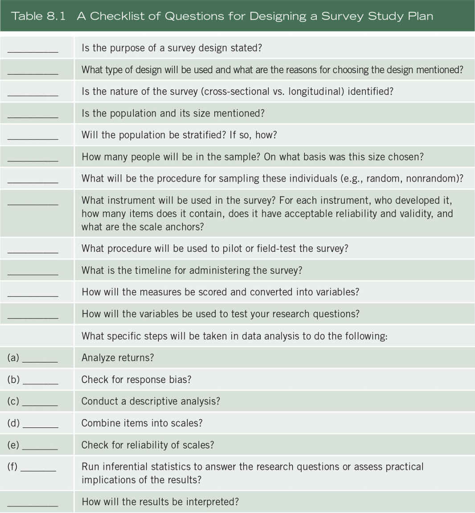
The Survey Design
The first parts of the survey method plan section can introduce readers to the basic purpose and rationale for survey research. Begin the section by describing the rationale for the design. Specifically:
The Population and Sample
In the method section, follow the type of design with characteristics of the population and the sampling procedure. Methodologists have written excellent discussions about the underlying logic of sampling theory (e.g., Babbie, 2015; Fowler, 2014). Here are essential aspects of the population and sample to describe in a research plan:
Instrumentation
As part of rigorous data collection, the proposal developer also provides detailed information about the actual survey instruments to be used in the study. Consider the following:
Variables in the Study
Although readers of a proposal learn about the variables in purpose statements and research questions/hypotheses sections, it is useful in the method section to relate the variables to the specific questions or hypotheses on the instrument. One technique is to relate the variables, the research questions or hypotheses, and sample items on the survey instrument so that a reader can easily determine how the data collection connects to the variables and questions/hypotheses. Plan to include a table and a discussion that cross-reference the variables, the questions or hypotheses, and specific survey items. This procedure is especially helpful in dissertations in which investigators test large-scale models or multiple hypotheses. Table 8.2 illustrates such a table using hypothetical data.
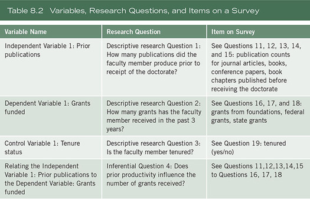
Data Analysis
In the proposal, present information about the computer programs used and the steps involved in analyzing the data. Websites contain detailed information about the various statistical analysis computer programs available. Some of the more frequently used programs are the following:
Online programs useful in simulating statistical concepts for statistical instruction can also be used, such as the Rice Virtual Lab in Statistics found at http://onlinestatbook.com/rvls.html, or SAS Simulation Studio for JMP (www.jmp.com), which harnesses the power of simulation to model and analyze critical operational systems in such areas as health care, manufacturing, and transportation. The graphical user interface in SAS Simulation Studio for JMP requires no programming and provides a full set of tools for building, executing, and analyzing results of simulation models (Creswell & Guetterman, in press).
We recommend the following research tip—presenting data analysis plans as a series of steps so that a reader can see how one step leads to another:
Step 1. Report information about the number of participants in the sample who did and did not return the survey. A table with numbers and percentages describing respondents and nonrespondents is a useful tool to present this information.
Step 2. Discuss the method by which response bias will be determined. Response bias is the effect of nonresponses on survey estimates (Fowler, 2014). Bias means that if nonrespondents had responded, their responses would have substantially changed the overall results. Mention the procedures used to check for response bias, such as wave analysis or a respondent/nonrespondent analysis. In wave analysis, the researcher examines returns on select items week by week to determine if average responses change (Leslie, 1972). Based on the assumption that those who return surveys in the final weeks of the response period are nearly all nonrespondents, if the responses begin to change, a potential exists for response bias. An alternative check for response bias is to contact a few nonrespondents by phone and determine if their responses differ substantially from respondents. This constitutes a respondent-nonrespondent check for response bias.
Step 3. Discuss a plan to provide a descriptive analysis of data for all independent and dependent variables in the study. This analysis should indicate the means, standard deviations, and range of scores for these variables. Identify whether there is missing data (e.g., some participants may not provide responses to some items or whole scales), and develop plans to report how much missing data is present and whether a strategy will be implemented to replace missing data (for a review, see Schafer & Graham, 2002).
Step 4. If the proposal contains an instrument with multi-item scales or a plan to develop scales, first evaluate whether it will be necessary to reverse-score items, and then how total scale scores will be calculated. Also mention reliability checks for the internal consistency of the scales (i.e., the Cronbach alpha statistic).
Step 5. Identify the statistics and the statistical computer program for testing the major inferential research questions or hypotheses in the proposed study. The inferential questions or hypotheses relate variables or compare groups in terms of variables so that inferences can be drawn from the sample to a population. Provide a rationale for the choice of statistical test and mention the assumptions associated with the statistic. As shown in Table 8.3, base this choice on the nature of the research question (e.g., relating variables or comparing groups as the most popular), the number of independent and dependent variables, and the variables used as covariates (e.g., see Rudestam & Newton, 2014). Further, consider whether the variables will be measured on an instrument as a continuous score (e.g., age from 18 to 36) or as a categorical score (e.g., women = 1, men = 2). Finally, consider whether the scores from the sample might be normally distributed in a bell-shaped curve if plotted out on a graph or non-normally distributed. There are additional ways to determine if the scores are normally distributed (see Creswell, 2012). These factors, in combination, enable a researcher to determine what statistical test will be suited for answering the research question or hypothesis. In Table 8.3, we show how the factors, in combination, lead to the selection of a number of common statistical tests. For additional types of statistical tests, readers are referred to statistics methods books, such as Gravetter and Wallnau (2012).
Step 6. A final step in the data analysis is to present the results in tables or figures and interpret the results from the statistical test, discussed in the next section.
Interpreting Results and Writing a Discussion Section
An interpretation in quantitative research means that the researcher draws conclusions from the results for the research questions, hypotheses, and the larger meaning of the results. This interpretation involves several steps:
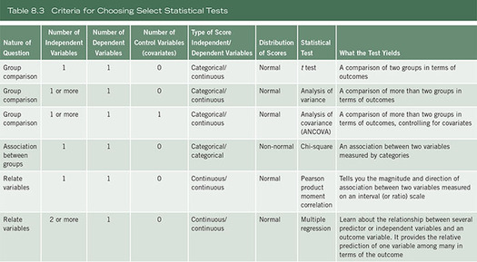
Example 8.1 is a survey method plan section that illustrates many of the steps just mentioned. This excerpt (used with permission) comes from a journal article reporting a study of factors affecting student attrition in one small liberal arts college (Bean & Creswell, 1980, pp. 321–322).
Example 8.1 A Survey Method Plan
Methodology
The site of this study was a small (enrollment 1,000), religious, coeducational, liberal arts college in a Midwestern city with a population of 175,000 people. [Authors identified the research site and population.]
The dropout rate the previous year was 25%. Dropout rates tend to be highest among freshmen and sophomores, so an attempt was made to reach as many freshmen and sophomores as possible by distribution of the questionnaire through classes. Research on attrition indicates that males and females drop out of college for different reasons (Bean, 1978, in press; Spady, 1971). Therefore, only women were analyzed in this study.
During April 1979, 169 women returned questionnaires. A homogeneous sample of 135 women who were 25 years old or younger, unmarried, full-time U.S. citizens, and Caucasian was selected for this analysis to exclude some possible confounding variables (Kerlinger, 1973).
Of these women, 71 were freshmen, 55 were sophomores, and 9 were juniors. Of the students, 95% were between the ages of 18 and 21. This sample is biased toward higher-ability students as indicated by scores on the ACT test. [Authors presented descriptive information about the sample.]
Data were collected by means of a questionnaire containing 116 items. The majority of these were Likert-like items based on a scale from “a very small extent” to “a very great extent.” Other questions asked for factual information, such as ACT scores, high school grades, and parents’ educational level. All information used in this analysis was derived from questionnaire data. This questionnaire had been developed and tested at three other institutions before its use at this college. [Authors discussed the instrument.]
Concurrent and convergent validity (Campbell & Fiske, 1959) of these measures was established through factor analysis, and was found to be at an adequate level. Reliability of the factors was established through the coefficient alpha. The constructs were represented by 25 measures—multiple items combined on the basis of factor analysis to make indices—and 27 measures were single item indicators. [Validity and reliability were addressed.]
Multiple regression and path analysis (Heise, 1969; Kerlinger & Pedhazur, 1973) were used to analyze the data. In the causal model . . . , intent to leave was regressed on all variables which preceded it in the causal sequence. Intervening variables significantly related to intent to leave were then regressed on organizational variables, personal variables, environmental variables, and background variables. [Data analysis steps were presented.]
Components of an Experimental Study Method Plan
An experimental method plan follows a standard form: (a) participants and design, (b) procedure, and (c) measures. These three sequential sections generally are sufficient (often in studies with a few measures, the procedure and measures sections are combined into a single procedure section). In this section of the chapter, we review these components as well as information regarding key features of experimental design and corresponding statistical analyses. As with the section on survey design, the intent here is to highlight key topics to be addressed in an experimental method plan. An overall guide to these topics is found by answering the questions on the checklist shown in Table 8.4.
Participants
Readers need to know about the selection, assignment, and number of participants who will take part in the experiment. Consider the following suggestions when writing the method section plan for an experiment:
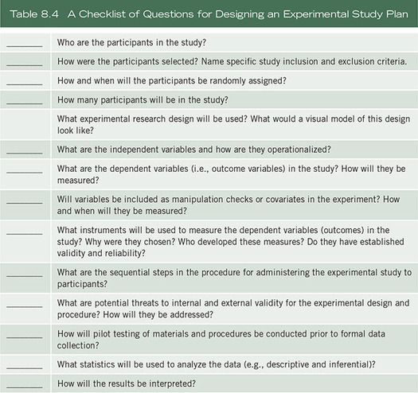
Test family: t tests
Statistical test: Means: difference between two independent means (two groups)
Type of power analysis: A priori: Compute required sample size
Tails: Two
Effect size d: .5
α err prob: .05
Power (1 – β err prob): .8
Allocation ratio N2/N1: 1
Variables
The variables need to be specified in the formal design statement and described (in detail) in the procedure section of the experimental method plan. Here are some suggestions for developing ideas about variables in a proposal:
Instrumentation and Materials
Just like in a survey method plan, a sound experimental study plan calls for a thorough discussion about the instruments used—their development, their items, their scales, and reports of reliability and validity of scores on past uses. However, an experimental study plan also describes in detail the approach for manipulating the independent variables of interest:
Experimental Procedures
The specific experimental design procedures also need to be identified. This discussion involves indicating the overall experiment type, citing reasons for the design, and advancing a visual model to help the reader understand the procedures.
In Examples 8.2–8.5, this notation is used to illustrate pre-experimental, quasi-experimental, true experimental, and single-subject designs.
Example 8.2 Pre-experimental Designs
One-Shot Case Study
This design involves an exposure of a group to a treatment followed by a measure.
One-Group Pretest-Posttest Design
This design includes a pretest measure followed by a treatment and a posttest for a single group.
Static Group Comparison or Posttest-Only With Nonequivalent Groups
Experimenters use this design after implementing a treatment. After the treatment, the researcher selects a comparison group and provides a posttest to both the experimental group(s) and the comparison group(s).
Alternative Treatment Posttest-Only With Nonequivalent Groups Design
This design uses the same procedure as the Static Group Comparison, with the exception that the nonequivalent comparison group received a different treatment.
Example 8.3 Quasi-experimental Designs
Nonequivalent (Pretest and Posttest) Control-Group Design
In this design, a popular approach to quasi-experiments, the experimental Group A and the control Group B are selected without random assignment. Both groups take a pretest and posttest. Only the experimental group receives the treatment.
Single-Group Interrupted Time-Series Design
In this design, the researcher records measures for a single group both before and after a treatment.
Control-Group Interrupted Time-Series Design
This design is a modification of the Single-Group Interrupted Time-Series design in which two groups of participants, not randomly assigned, are observed over time. A treatment is administered to only one of the groups (i.e., Group A).
Example 8.4 True Experimental Designs
Pretest–Posttest Control-Group Design
A traditional, classical design, this procedure involves random assignment of participants to two groups. Both groups are administered both a pretest and a posttest, but the treatment is provided only to experimental Group A.
Posttest-Only Control-Group Design
This design controls for any confounding effects of a pretest and is a popular experimental design. The participants are randomly assigned to groups, a treatment is given only to the experimental group, and both groups are measured on the posttest.
Solomon Four-Group Design
A special case of a 2 × 2 factorial design, this procedure involves the random assignment of participants to four groups. Pretests and treatments are varied for the four groups. All groups receive a posttest.
Example 8.5 Single-Subject Designs
A-B-A Single-Subject Design
This design involves multiple observations of a single individual. The target behavior of a single individual is established over time and is referred to as a baseline behavior. The baseline behavior is assessed, the treatment provided, and then the treatment is withdrawn.
Threats to Validity
There are several threats to validity that will raise questions about an experimenter’s ability to conclude that the manipulated variable(s) of interest affect an outcome and not some other factor. Experimental researchers need to identify potential threats to the internal validity of their experiments and design them so that these threats will not likely arise or are minimized. There are two types of threats to validity: (a) internal threats and (b) external threats.
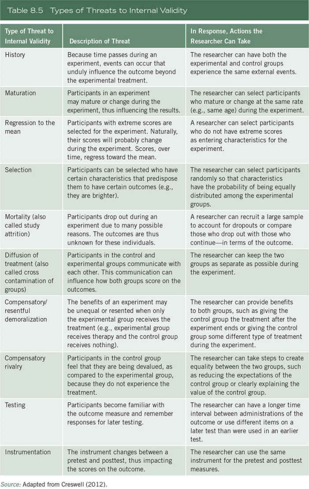
Source: Adapted from Creswell (2012).
Practical research tips for proposal writers to address validity issues are as follows:
The Procedure
A researcher needs to describe in detail the sequential step-by-step procedure for conducting the experiment. A reader should be able to clearly understand the cover story, the design being used, the manipulated variable(s) and outcome variable(s), and the timeline of activities. It is also important to describe steps taken to minimize noise and bias in the experimental procedures (e.g., “To reduce the risk of experimenter bias, the experimenter was blind to the participant’s study condition until all outcome measures were assessed.”).
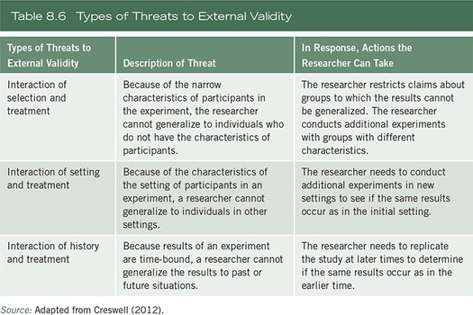
Source: Adapted from Creswell (2012).
Data Analysis
Tell the reader about the types of statistical analyses that will be implemented on the dataset.
Interpreting Results and Writing a Discussion Section
The final step in an experiment is to interpret the findings in light of the hypotheses or research questions and to draft a discussion section. In this interpretation, address whether the hypotheses or questions were supported or whether they were refuted. Consider whether the independent variable manipulation was effective (a manipulation check measure can be helpful in this regard). Suggest why the results were significant, or why they were not, linking the new evidence with past literature (Chapter 2), the theory used in the study (Chapter 3), or persuasive logic that might explain the results. Address whether the results might have been influenced by unique strengths of the approach, or weaknesses (e.g., threats to internal validity), and indicate how the results might be generalized to certain people, settings, and times. Finally, indicate the implications of the results, including implications for future research on the topic.
Example 8.6 is a description of an experimental method plan adapted from a value affirmation stress study published by Creswell and colleagues (Creswell et al., 2005).
Example 8.6 An Experimental Method Plan
This study tested the hypothesis that thinking about one’s important personal values in a self-affirmation activity could buffer subsequent stress responses to a laboratory stress challenge task. The specific study hypothesis was that the self-affirmation group, relative to the control group, would have lower salivary cortisol stress hormone responses to a stressful performance task. Here we highlight a plan for organizing the methodological approach for conducting this study. For a full description of the study methods and findings, see the published paper (Creswell et al., 2005).
Method
Participants
A convenience sample of eighty-five undergraduates will be recruited from a large public university on the west coast, and compensated with course credit or $30. This sample size is justified based on a power analysis conducted prior to data collection with the software program G*Power (Faul et al., 2007; Faul et al., 2009), based on [specific input parameters described here for the power analysis]. Participants will be eligible to participate if they meet the following study criteria [list study inclusion and exclusion criteria here]. All study procedures have been approved by the University of California, Los Angeles Institutional Review Board, and participants will provide written informed consent prior to participating in study related activities.
The study is a 2 × 4 mixed design, with value affirmation condition as a two-level between subjects variable (condition: value affirmation or control) and time as a four-level within-subjects variable (time: baseline, 20 minutes post-stress, 30 minutes post-stress, and 45 minutes post-stress). The primary outcome measure is the stress hormone cortisol, as measured by saliva samples.
Procedure
To control for the circadian rhythm of cortisol, all laboratory sessions will be scheduled between the hours of 2:30 pm and 7:30 pm. Participants will be run through the laboratory procedures one at a time. The cover story consists of telling participants that the study is interested in studying physiological responses to laboratory performance tasks.
Upon arrival all participants will complete an initial values questionnaire where they will rank order five personal values. After a 10-minute acclimation period, participants will provide a baseline saliva sample, for the assessment of salivary cortisol levels. Participants will then receive instructions on the study tasks and then will be randomly assigned by the experimenter (using a random number generator) to either a value affirmation or control condition, where they will be asked to [description of the value affirmation independent variable manipulation here, along with the subsequent manipulation check measure]. All participants will then complete the laboratory stress challenge task [description of the stress challenge task procedures for producing a stress response here]. After the stress task, participants will complete multiple post-stress task questionnaire measures [describe them here], and then provide saliva samples at 20, 30, and 45 minutes post-stress task onset. After providing the last saliva sample, participants will be debriefed, compensated, and dismissed.
Summary
This chapter identified essential components for organizing a methodological approach and plan for conducting either a survey or an experimental study. The outline of steps for a survey study began with a discussion about the purpose, the identification of the population and sample, the survey instruments to be used, the relationship between the variables, the research questions, specific items on the survey, and steps to be taken in the analysis and the interpretation of the data from the survey. In the design of an experiment, the researcher identifies participants in the study, the variables—the manipulated variable(s) of interest and the outcome variables—and the instruments used. The design also includes the specific type of experiment, such as a pre-experimental, quasi-experimental, true experiment, or single-subject design. Then the researcher draws a figure to illustrate the design, using appropriate notation. This is followed by comments about potential threats to internal and external validity (and possibly statistical and construct validity) that relate to the experiment, the statistical analyses used to test the hypotheses or research questions, and the interpretation of the results.
Writing Exercises
Additional Readings
Campbell, D. T., & Stanley, J. C. (1963). Experimental and quasi-experimental designs for research. In N. L. Gage (Ed.), Handbook of research on teaching (pp. 1–76). Chicago: Rand McNally.
This chapter in the Gage Handbook is the classical statement about experimental designs. Campbell and Stanley designed a notation system for experiments that is still used today; they also advanced the types of experimental designs, beginning with factors that jeopardize internal and external validity, the pre-experimental design types, true experiments, quasi-experimental designs, and correlational and ex post facto designs. The chapter presents an excellent summary of types of designs, their threats to validity, and statistical procedures to test the designs. This is an essential chapter for students beginning their study of experimental studies.
Fowler, F. J. (2014). Survey research methods (5th ed.). Thousand Oaks, CA: Sage.
Floyd Fowler provides a useful text about the decisions that go into the design of a survey research project. He addresses use of alternative sampling procedures, ways of reducing nonresponse rates, data collection, design of good questions, employing sound interviewing techniques, preparation of surveys for analysis, and ethical issues in survey designs.
Keppel, G. & Wickens, T. D. (2003). Design and analysis: A researcher’s handbook (4th ed.). Englewood Cliffs, NJ: Prentice Hall.
Geoffrey Keppel and Thomas Wickens provide a detailed, thorough treatment of the design of experiments from the principles of design to the statistical analysis of experimental data. Overall, this book is for the mid-level to advanced statistics student who seeks to understand the design and statistical analysis of experiments. The introductory chapter presents an informative overview of the components of experimental designs.
Kraemer, H. C., & Blasey, C. (2016). How many subjects? Statistical power analysis in research. Thousand Oaks: Sage.
This book provides guidance on how to conduct power analyses for estimating sample size. This serves as an excellent resource for both basic and more complex estimation procedures.
Lipsey, M. W. (1990). Design sensitivity: Statistical power for experimental research. Newbury Park, CA: Sage.
Mark Lipsey has authored a major book on the topics of experimental designs and statistical power of those designs. Its basic premise is that an experiment needs to have sufficient sensitivity to detect those effects it purports to investigate. The book explores statistical power and includes a table to help researchers identify the appropriate size of groups in an experiment.
Neuman, S. B., & McCormick, S. (Eds.). (1995). Single-subject experimental research: Applications for literacy. Newark, DE: International Reading Association.
Susan Neuman and Sandra McCormick have edited a useful, practical guide to the design of single-subject research. They present many examples of different types of designs, such as reversal designs and multiple-baseline designs, and they enumerate the statistical procedures that might be involved in analyzing the single-subject data. One chapter, for example, illustrates the conventions for displaying data on line graphs. Although this book cites many applications in literacy, it has broad application in the social and human sciences.
Thompson, B. (2006). Foundations of behavioral statistics: An insight-based approach. New York: The Guilford.
Bruce Thompson has organized a highly readable book about using statistics. He reviews the basics about descriptive statistics (location, dispersion, shape), about relationships among variables and statistical significance, about the practical significance of results, and about more advanced statistics such as regression, ANOVA, the general linear model, and logistic regression. Throughout the book, he brings in practical examples to illustrate his points.
https://edge.sagepub.com/creswellrd5e
Students and instructors, please visit the companion website for videos featuring John W. Creswell, full-text SAGE journal articles, quizzes and activities, plus additional tools for research design.
Chapter 9 Qualitative Methods
Qualitative methods demonstrate a different approach to scholarly inquiry than methods of quantitative research. Although the processes are similar, qualitative methods rely on text and image data, have unique steps in data analysis, and draw on diverse designs. Writing a method section for a proposal or study for qualitative research partly requires educating readers as to the intent of qualitative research, mentioning specific designs, carefully reflecting on the role the researcher plays in the study, drawing from an ever-expanding list of types of data sources, using specific protocols for recording data, analyzing the information through multiple steps of analysis, and mentioning approaches for documenting the methodological integrity or accuracy—or validity—of the data collected. This chapter addresses these important components of writing a good qualitative method section into a proposal or study. Table 9.1 presents a checklist for reviewing the qualitative methods section of your project to determine whether you have addressed important topics.
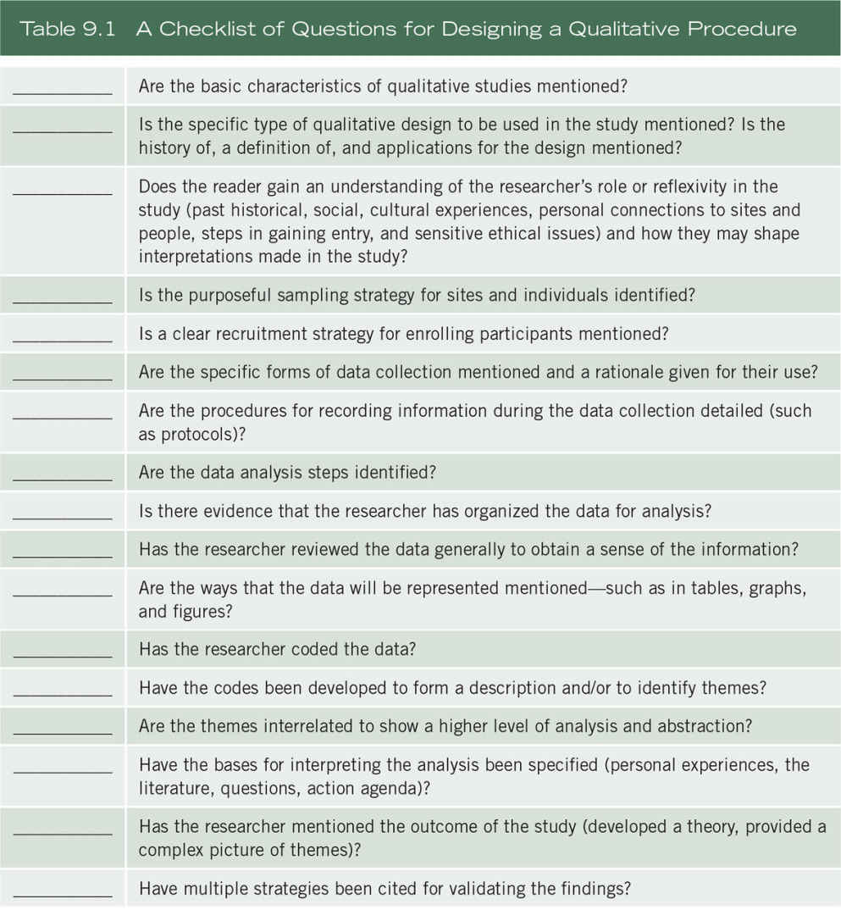
The qualitative method section of a proposal requires attention to topics that are similar to a quantitative (or mixed methods) project. These involve telling the reader about the design being used in the study and, in this case, the use of qualitative research and its basic intent. It also involves discussing the sample for the study and the overall data collection and recording procedures. It further expands on the data analysis steps and the methods used for presenting the data, interpreting it, validating it, and indicating the potential outcomes of the study. In contrast to other designs, the qualitative approach includes comments by the researcher about their role and their self-reflection (or reflexivity, it is called), and the specific type of qualitative strategy being used. Further, because the writing structure of a qualitative project may vary considerably from study to study, the method section should also include comments about the nature of the final written product.
The Characteristics of Qualitative Research
For many years, qualitative writers had to discuss the characteristics of qualitative research and convince faculty and audiences as to their legitimacy. Now these discussions are less frequently found in the literature and there is some consensus as to what constitutes qualitative inquiry. Thus, our suggestions about the method section of a project or proposal are as follows:
Qualitative Designs
Beyond these general characteristics are more specific approaches (i.e., strategies of inquiry, designs, or procedures) in conducting qualitative research (Creswell & Poth, 2018). These approaches have emerged in the field of qualitative research since it has matured in the social sciences since the early 1990s. They include procedures for data collection, analysis, and writing, but they originated out of disciplines in the social sciences. Many approaches exist, such as the 28 identified by Tesch (1990), the 22 types in Wolcott’s (2009) tree, and the five approaches to qualitative inquiry by Creswell and Poth (2018), and Creswell (2016). Marshall and Rossman (2016) discussed five types common across five different authors. As mentioned in Chapter 1, we recommend that qualitative researchers choose from among the possibilities, such as narrative, phenomenology, ethnography, case study, and grounded theory. We selected these five because they are popular across the social and health sciences today. Others exist that have been addressed adequately in qualitative books, such as participatory action research (Kemmis & Wilkinson, 1998), discourse analysis (Cheek, 2004), or participatory action research (Ivankova, 2015). In these approaches, researchers study individuals (narrative, phenomenology); explore processes, activities, and events (case study, grounded theory); or learn about broad culture-sharing behavior of individuals or groups (ethnography).
In writing a procedure for a qualitative proposal, consider the following research tips:
The Researcher’s Role and Reflexivity
As mentioned in the list of characteristics, qualitative research is interpretative research; the inquirer is typically involved in a sustained and intensive experience with participants. This introduces a range of strategic, ethical, and personal issues into the qualitative research process (Locke, Spirduso, & Silverman, 2013). With these concerns in mind, inquirers explicitly identify reflexively their biases, values, and personal background, such as gender, history, culture, and socioeconomic status (SES) that shape their interpretations formed during a study. In addition, gaining entry to a research site and the ethical issues that might arise are also elements of the researcher’s role.
Reflexivity requires commenting on two important points:
How can reflexive thinking be incorporated into your qualitative study (Creswell, 2016)? You can write notes about your personal experiences during the study. These notes might include observations about the process of data collection, hunches about what you are learning, and concerns about reactions of participants to the research process. These ideas can be written as memos—notes written during the research process that reflect on the process or that help shape the development of codes and themes. In writing these reflective notes, how do you know whether you are being sufficiently reflexive for a qualitative study? Sufficient reflexivity occurs when researchers record notes during the process of research, reflect on their own personal experiences, and consider how their personal experiences may shape their interpretation of results. Also, qualitative researchers need to limit their discussions about personal experiences so that they do not override the importance of the content or methods in a study.
Another aspect of reflecting on the role of the researcher is to be aware of connections between the researcher and the participants or the research sites that may unduly influence the researcher’s interpretations. “Backyard” research (Glesne & Peshkin, 1992) involves studying the researcher’s own organization, or friends, or immediate work setting. This often leads to compromises in the researcher’s ability to disclose information and raises issues of an imbalance of power between the inquirer and the participants. When researchers collect data at their own workplaces (or when they are in a superior role to participants), the information may be convenient and easy to collect, but it may not be accurate information and it may jeopardize the roles of the researchers and the participants. If studying the backyard is essential, then the researcher is responsible for showing how the data will not be compromised and how such information will not place the participants (or the researchers) at risk. In addition, multiple strategies for validation (see approaches to validation later in this chapter) are necessary to demonstrate the accuracy of the information.
Further, indicate steps taken to obtain permission from the institutional review board (IRB) (see Chapter 4) to protect the rights of human participants. Attach, as an appendix, the approval letter from the IRB and discuss the process involved in securing permissions. Discuss steps taken to gain entry to the setting and to secure permissions to study the participants or situation (Marshall & Rossman, 2016). It is important to gain access to research or archival sites by seeking the approval of gatekeepers, individuals at the site who provide access to the site and allow or permit the research to be done. A brief proposal might need to be developed and submitted for review to gatekeepers. Bogdan and Biklen (1992) advanced topics that could be addressed in such a proposal:
Comment about sensitive ethical issues that may arise (see Chapter 4). For each issue raised, discuss how the research study will address it. For example, when studying a sensitive topic, it is necessary to mask names of people, places, and activities. In this situation, the process for masking information requires discussion in the proposal.
Data Collection Procedures
Comments about the role of the researcher set the stage for discussion of issues involved in collecting data. The data collection steps include setting the boundaries for the study through sampling and recruitment; collecting information through unstructured or semi-structured observations and interviews, documents, and visual materials; as well as establishing the protocol for recording information.
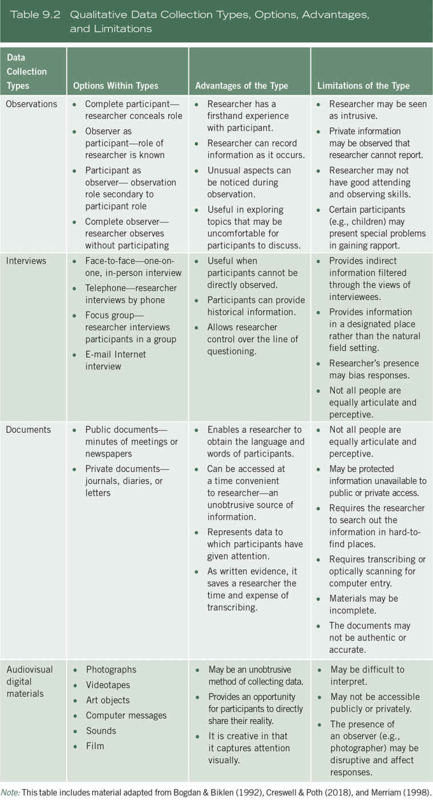
Note: This table includes material adapted from Bogdan & Biklen (1992), Creswell & Poth (2018), and Merriam (1998).
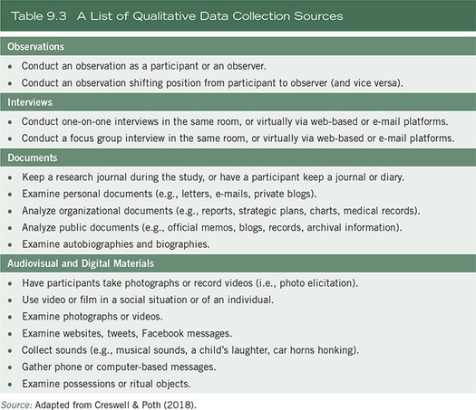
Source: Adapted from Creswell & Poth (2018).
Data Recording Procedures
Before entering the field, qualitative researchers plan their approach to data recording. The qualitative proposal or project should identify the procedures the researcher will use for recording data.
The interview protocol should be about two pages in length. There should be some spaces between the questions for the interviewer to write short notes and quotes in case the audio-recording device does not work. The total number of questions should be somewhere between 5 and 10, although no precise number can be given. It should be prepared in advance of the interview, and used consistently in all of the interviews. It is helpful for the interviewer to memorize the questions so that he or she does not appear to be simply reading the interview protocol. The interview protocol consists of several important components. These are basic information about the interview, an introduction, the interview content questions with probes, and closing instructions (see also Creswell, 2016). See Figure 9.1.
Data Analysis Procedures
A methods discussion in a qualitative proposal or study needs also to specify the steps in analyzing the various forms of qualitative data. In general, the intent is to make sense out of text and image data. It involves segmenting and taking apart the data (like peeling back the layers of an onion) as well as putting it back together. The discussion in your study about qualitative data analysis might begin with several general points about the overall process:
Figure 9.1 Sample Interview Protocol
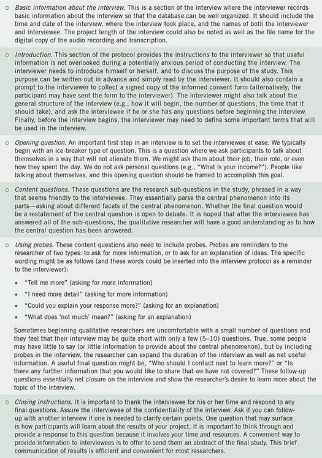
Figure 9.2 Data Analysis in Qualitative Research
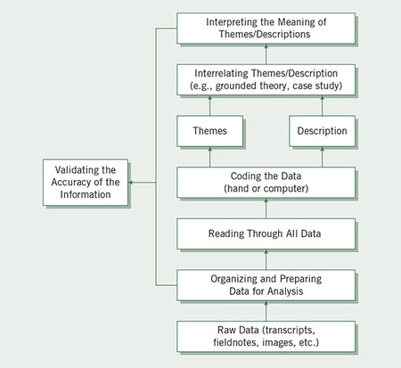
We tend to think about codes as falling into three categories:
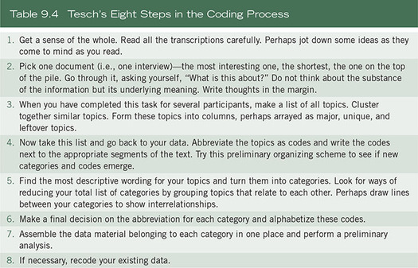
Despite these concerns, once the qualitative researcher obtains the visual data, the process of coding comes into play. These steps often follow this procedure:
Interpretation
Interpretation in qualitative research involves several procedures: summarizing the overall findings, comparing the findings to the literature, discussing a personal view of the findings, and stating limitations and future research. In terms of overall findings, the question “What were the lessons learned?” captures the essence of this idea (Lincoln & Guba, 1985). These lessons could be the researcher’s personal interpretation, couched in the understanding that the inquirer brings to the study from a personal culture, history, and experiences.
It could also be a meaning derived from a comparison of the findings with information gleaned from the literature or theories. In this way, authors suggest that the findings confirm past information or diverge from it. It can also suggest new questions that need to be asked—questions raised by the data and analysis that the inquirer had not foreseen earlier in the study. Ethnographers can end a study, Wolcott (1994) said, by stating further questions. The questioning approach is also used in transformative approaches to qualitative research. Moreover, when qualitative researchers use a theoretical lens, they can form interpretations that call for action agendas for reform and change. Researchers might describe how the narrative outcome will be compared with theories and the general literature on the topic. In many qualitative articles, researchers also discuss the literature at the end of the study (see Chapter 2). Thus, interpretation in qualitative research can take many forms; be adapted for different types of designs; and be flexible to convey personal, research-based, and action meanings.
Finally, part of interpretation involves suggesting limitations in a project and advancing future research directions. Limitations often attach to the methods of a study (e.g., inadequate sample size, difficulty in recruitment), and they represent weaknesses in the research that the author acknowledges so that future studies will not suffer from the same problems. Suggestions for future research propose research themes that studies might address to advance the literature, to remedy some of the weaknesses in the present study, or to advance new leads or directions that can point to useful applications or knowledge.
Validity and Reliability
Although validation of findings occurs throughout the steps in the research process, this discussion focuses on how the researcher writes a passage in a proposal or study on the procedures to be undertaken to validate the proposed study’s findings. Researchers need to convey the steps they will take in their studies to check for the accuracy and credibility of their findings. Validity does not carry the same connotations in qualitative research that it does in quantitative research; nor is it a companion to reliability (examining stability) or generalizability (the external validity of applying results to new settings, people, or samples), topics discussed in Chapter 8. Qualitative validity means that the researcher checks for the accuracy of the findings by employing certain procedures, whereas qualitative reliability indicates that the researcher’s approach is consistent across different researchers and among different projects (Gibbs, 2007).
Writing the Qualitative Report
A plan for qualitative methods should end with some comments about the narrative that will emerge from the data analysis. Numerous varieties of narratives exist, and examples from scholarly journals illustrate these models. In a plan for a study, consider advancing several points about the narrative:
Example 9.1 is a complete qualitative method section that was included in a proposal by Miller (1992). It contains most of the topics for a good qualitative method section addressed in this chapter.
Example 9.1 Qualitative Procedures
Miller’s project was an ethnographic study of first-year experiences of the president of a 4-year college. As we present this discussion, we refer back to the sections addressed in this chapter and highlight them in boldfaced type. Also, we have maintained Miller’s use of the term informant, although today, the more appropriate term participant should be used.
The Qualitative Research Paradigm
The qualitative research paradigm has its roots in cultural anthropology and American sociology (Kirk & Miller, 1986). It has only recently been adopted by educational researchers (Borg & Gall, 1989). The intent of qualitative research is to understand a particular social situation, event, role, group, or interaction (Locke, Spirduso, & Silverman, 1987). It is largely an investigative process where the researcher gradually makes sense of a social phenomenon by contrasting, comparing, replicating, cataloguing and classifying the object of study (Miles & Huberman, 1984). Marshall and Rossman (1989) suggest that this entails immersion in the everyday life of the setting chosen for the study; the researcher enters the informants’ world and through ongoing interaction, seeks the informants’ perspectives and meanings. [Qualitative assumptions are mentioned.]
Scholars contend that qualitative research can be distinguished from quantitative methodology by numerous unique characteristics that are inherent in the design. The following is a synthesis of commonly articulated assumptions regarding characteristics presented by various researchers.
The Ethnographic Research Design
This study will utilize the ethnographic research tradition. This design emerged from the field of anthropology, primarily from the contributions of Bronislaw Malinowski, Robert Park and Franz Boas (Jacob, 1987; Kirk & Miller, 1986). The intent of ethnographic research is to obtain a holistic picture of the subject of study with emphasis on portraying the everyday experiences of individuals by observing and interviewing them and relevant others (Fraenkel & Wallen, 1990). The ethnographic study includes in-depth interviewing and continual and ongoing participant observation of a situation (Jacob, 1987) and in attempting to capture the whole picture reveals how people describe and structure their world (Fraenkel & Wallen, 1990). [The author used the ethnographic approach.]
The Researcher’s Role
Particularly in qualitative research, the role of the researcher as the primary data collection instrument necessitates the identification of personal values, assumptions and biases at the outset of the study. The investigator’s contribution to the research setting can be useful and positive rather than detrimental (Locke et al., 1987). My perceptions of higher education and the college presidency have been shaped by my personal experiences. From August 1980 to May 1990 I served as a college administrator on private campuses of 600 to 5,000 students. Most recently (1987–1990), I served as the Dean for Student Life at a small college in the Midwest. As a member of the President’s cabinet, I was involved with all top level administrative cabinet activities and decisions and worked closely with the faculty, cabinet officers, president and board of trustees. In addition to reporting to the president, I worked with him through his first year in office. I believe this understanding of the context and role enhances my awareness, knowledge and sensitivity to many of the challenges, decisions and issues encountered as a first year president and will assist me in working with the informant in this study. I bring knowledge of both the structure of higher education and of the role of the college presidency. Particular attention will be paid to the role of the new president in initiating change, relationship building, decision making, and providing leadership and vision.
Due to previous experiences working closely with a new college president, I bring certain biases to this study. Although every effort will be made to ensure objectivity, these biases may shape the way I view and understand the data I collect and the way I interpret my experiences. I commence this study with the perspective that the college presidency is a diverse and often difficult position. Though expectations are immense, I question how much power the president has to initiate change and provide leadership and vision. I view the first year as critical; filled with adjustments, frustrations, unanticipated surprises and challenges. [Author reflected on her role in the study.]
Bounding the Study
Setting
This study will be conducted on the campus of a state college in the Midwest. The college is situated in a rural Midwestern community. The institution’s 1,700 students nearly triple the town’s population of 1,000 when classes are in session. The institution awards associate, bachelor and master’s degrees in 51 majors.
Actors
The informant in this study is the new President of a state college in the Midwest. The primary informant in this study is the President. However, I will be observing him in the context of administrative cabinet meetings. The president’s cabinet includes three Vice Presidents (Academic Affairs, Administration, Student Affairs) and two Deans (Graduate Studies and Continuing Education).
Events
Using ethnographic research methodology, the focus of this study will be the everyday experiences and events of the new college president, and the perceptions and meaning attached to those experiences as expressed by the informant. This includes the assimilation of surprising events or information, and making sense of critical events and issues that arise.
Processes
Particular attention will be paid to the role of the new president in initiating change, relationship building, decision making, and providing leadership and vision. [Author mentioned data collection boundaries.]
Ethical Considerations
Most authors who discuss qualitative research design address the importance of ethical considerations (Locke et al., 1982; Marshall & Rossman, 1989; Merriam, 1988; Spradley, 1980). First and foremost, the researcher has an obligation to respect the rights, needs, values, and desires of the informant(s). To an extent, ethnographic research is always obtrusive. Participant observation invades the life of the informant (Spradley, 1980) and sensitive information is frequently revealed. This is of particular concern in this study where the informant’s position and institution are highly visible. The following safeguards will be employed to protect the informant’s rights: 1) the research objectives will be articulated verbally and in writing so that they are clearly understood by the informant (including a description of how data will be used), 2) written permission to proceed with the study as articulated will be received from the informant, 3) a research exemption form will be filed with the Institutional Review Board (Appendixes B1 and B2), 4) the informant will be informed of all data collection devices and activities, 5) verbatim transcriptions and written interpretations and reports will be made available to the informant, 6) the informant’s rights, interests and wishes will be considered first when choices are made regarding reporting the data, and 7) the final decision regarding informant anonymity will rest with the informant. [Author addressed ethical issues and IRB review.]
Data Collection Strategies
Data will be collected from February through May, 1992. This will include a minimum of bi-monthly, 45 minute recorded interviews with the informant (initial interview questions, Appendix C), bimonthly two hour observations of administrative cabinet meetings, bi-monthly two hour observations of daily activities and bi-monthly analysis of the president’s calendar and documents (meeting minutes, memos, publications). In addition, the informant has agreed to record impressions of his experiences, thoughts and feelings in a taped diary (guidelines for recorded reflection, Appendix D). Two follow-up interviews will be scheduled for the end of May 1992 (See Appendix E for proposed timeline and activity schedule). [The author proposed to use face-to-face interviews, participate as observer, and obtain private documents.]
To assist in the data collection phase I will utilize a field log, providing a detailed account of ways I plan to spend my time when I am on-site, and in the transcription and analysis phase (also comparing this record to how time is actually spent). I intend to record details related to my observations in a field notebook and keep a field diary to chronicle my own thinking, feeling, experiences and perceptions throughout the research process. [The author recorded descriptive and reflective information.]
Data Analysis Procedures
Merriam (1988) and Marshall and Rossman (1989) contend that data collection and data analysis must be a simultaneous process in qualitative research. Schatzman and Strauss (1973) claim that qualitative data analysis primarily entails classifying things, persons, and events and the properties which characterize them. Typically throughout the data analysis process ethnographers index or code their data using as many categories as possible (Jacob, 1987). They seek to identify and describe patterns and themes from the perspective of the participant(s), then attempt to understand and explain these patterns and themes (Agar, 1980). During data analysis the data will be organized categorically and chronologically, reviewed repeatedly, and continually coded. A list of major ideas that surface will be chronicled (as suggested by Merriam, 1988). Taped interviews and the participant’s taped diary will be transcribed verbatim. Field notes and diary entries will be regularly reviewed. [Author described steps in data analysis.]
In addition, the data analysis process will be aided by the use of a qualitative data analysis computer program called HyperQual. Raymond Padilla (Arizona State University) designed HyperQual in 1987 for use with the Macintosh computer. HyperQual utilizes HyperCard software and facilitates the recording and analysis of textual and graphic data. Special stacks are designated to hold and organize data. Using HyperQual the researcher can directly “enter field data, including interview data, observations, researcher’s memos, and illustrations . . . (and) tag (or code) all or part of the source data so that chunks of data can be pulled out and then be reassembled in a new and illuminating configuration” (Padilla, 1989, pp. 69–70). Meaningful data chunks can be identified, retrieved, isolated, grouped and regrouped for analysis. Categories or code names can be entered initially or at a later date. Codes can be added, changed or deleted with HyperQual editor and text can be searched for key categories, themes, words or phrases. [Author mentions the proposed use of computer software for data analysis.]
Verification
In ensuring internal validity, the following strategies will be employed:
The primary strategy utilized in this project to ensure external validity will be the provision of rich, thick, detailed descriptions so that anyone interested in transferability will have a solid framework for comparison (Merriam, 1988). Three techniques to ensure reliability will be employed in this study. First, the researcher will provide a detailed account of the focus of the study, the researcher’s role, the informant’s position and basis for selection, and the context from which data will be gathered (LeCompte & Goetz, 1984). Second, triangulation or multiple methods of data collection and analysis will be used, which strengthens reliability as well as internal validity (Merriam, 1988). Finally, data collection and analysis strategies will be reported in detail in order to provide a clear and accurate picture of the methods used in this study. All phases of this project will be subject to scrutiny by an external auditor who is experienced in qualitative research methods. [Author identified strategies of validity to be used in the study.]
Reporting the Findings
Lofland (1974) suggests that although data collection and analysis strategies are similar across qualitative methods, the way the findings are reported is diverse. Miles and Huberman (1984) address the importance of creating a data display and suggest that narrative text has been the most frequent form of display for qualitative data. This is a naturalistic study. Therefore, the results will be presented in descriptive, narrative form rather than as a scientific report. Thick description will be the vehicle for communicating a holistic picture of the experiences of a new college president. The final project will be a construction of the informant’s experiences and the meanings he attaches to them. This will allow readers to vicariously experience the challenges he encounters and provide a lens through which readers can view the subject’s world. [Outcomes of the study were mentioned.]
Summary
This chapter explored the components that go into developing and writing a qualitative method section for a proposal. Recognizing the variation that exists in qualitative studies, the chapter advances a general guideline for procedures. This guideline includes a discussion about the general characteristics of qualitative research if audiences are not familiar with this approach to research. These characteristics are that the research takes place in the natural setting, relies on the researcher as the instrument for data collection, employs multiple methods of data collection, is both inductive and deductive, is based on participants’ meanings, includes researcher reflexivity, and is holistic. The guideline recommends discussing a research design, such as the study of individuals (narrative, phenomenology); the exploration of processes, activities, and events (case study, grounded theory); or the examination of broad culture-sharing behavior of individuals or groups (ethnography). The choice of design needs to be presented and defended. Further, the proposal or study needs to address the role of the researcher: past experiences, history, culture, and how this potentially shapes interpretations of the data. It also includes a discussion about personal connections to the site, steps to gain entry, and anticipation of sensitive ethical issues. Discussion of data collection should advance the purposeful sampling approach and the forms of data to be collected (i.e., observations, interviews, documents, and audiovisual and digital materials). It is useful to also indicate the types of data recording protocols that will be used.
Data analysis is an ongoing process during research. It involves analyzing participant information, and researchers typically employ general analysis steps as well as those steps found within a specific design. More general steps include organizing and preparing the data; an initial reading through the information; coding the data; developing from the codes a description and thematic analysis; using computer programs; representing the findings in tables, graphs, and figures; and interpreting the findings. These interpretations involve stating lessons learned, comparing the findings with past literature and theory, raising questions, offering personal perspective, stating limitations, and advancing an agenda for reform. The project should also contain a section on the expected outcomes for the study. Finally, an additional important step in planning a proposal is to mention the strategies that will be used to validate the accuracy of the findings and demonstrate the reliability of codes and themes.
Writing Exercises
Additional Readings
Creswell, J. W. (2016). The 30 essential skills for the qualitative researcher. Thousand Oaks, CA: Sage.
This is John Creswell’s most applied book. It includes specific steps for conducting many of the most important qualitative inquiry procedures. It discusses the essential nature of qualitative research, specific procedures for conducting an observation and interview, the detailed procedures of data analysis, the uses of computer programs for assisting in qualitative data analysis, validity strategies, and procedures for intercoder agreement checks.
Creswell, J. W., & Poth, C. N. (2018). Qualitative inquiry and research design: Choosing among five approaches (4th ed.). Thousand Oaks, CA: Sage.
The basic premise of this book is that all qualitative research is not the same, and, over time, variations in procedures of conducting qualitative inquiry have evolved. This book discusses five approaches to qualitative research: (a) narrative research, (b) phenomenology, (c) grounded theory, (d) ethnography, and (e) case studies. A process approach is taken throughout the book in which the reader proceeds from broad philosophical assumptions and on through the steps of conducting a qualitative study (e.g., developing research questions, collecting and analyzing data, and so forth). The book also presents comparisons among the five approaches so that the qualitative research can make an informed choice about what strategy is best for a particular study.
Flick, U. (Ed.). (2007). The Sage qualitative research kit. Thousand Oaks, CA: Sage.
This is an eight-volume kit—edited by Uwe Flick—that is authored by different world-class qualitative researchers and was created to collectively address the core issues that arise when researchers actually do qualitative research. It addresses how to plan and design a qualitative study, the collection and production of qualitative data, the analysis of data (e.g., visual data, discourse analysis), and the issues of quality. Overall, it presents a recent, up-to-date window into the field of qualitative research.
Guest, G., MacQueen, K. M., & Namey, E. E. (2012). Applied thematic analysis. Thousand Oaks, CA: Sage.
This book provides a practical and detailed study of themes and data analysis in qualitative research. It contains detailed passages about the development of codes, codebooks, and themes, as well as approaches to enhancing the validity and reliability (including intercoder agreement) in qualitative research. It explores data reduction techniques and a comparison of themes. It presents useful information about qualitative data analysis software tools as well as procedures for integrating quantitative and qualitative data.
Marshall, C., & Rossman, G. B. (2011). Designing qualitative research (5th ed.). Thousand Oaks, CA: Sage.
Catherine Marshall and Gretchen Rossman introduce the procedures for designing a qualitative study and a qualitative proposal. The topics covered are comprehensive. They include building a conceptual framework around a study; the logic and assumptions of the overall design and methods; methods of data collection and procedures for managing, recording, and analyzing qualitative data; and the resources needed for a study, such as time, personnel, and funding. This is a comprehensive and insightful text from which both beginners and more experienced qualitative researchers can learn.
https://edge.sagepub.com/creswellrd5e
Students and instructors, please visit the companion website for videos featuring John W. Creswell, full-text SAGE journal articles, quizzes and activities, plus additional tools for research design.
Chapter 10 Mixed Methods Procedures
How would you write a mixed methods procedure section for your proposal or study? Up until this point, we have considered collected quantitative data and qualitative data. We have not discussed “mixing” or combining the two forms of data in a study. We can start with the assumption that both forms of data provide different types of information (open-ended data in the case of qualitative and closed-ended data in the case of quantitative). If we further assume that each type of data collection has both limitations and strengths, we can consider how the strengths can be combined to develop a stronger understanding of the research problem or questions (and, as well, overcome the limitations of each). In a sense, more insight into a problem is to be gained from mixing or integration of the quantitative and qualitative data. This “mixing” or integrating of data, it can be argued, provides a stronger understanding of the problem or question than either by itself. Mixed methods research, therefore, is simply “mining” the databases more by integrating them. This idea is at the core of a new methodology called “mixed methods research.”
Conveying the nature of mixed methods research and its essential characteristics needs to begin a good mixed methods procedure. Start with the assumption that mixed methods is a methodology in research and that the readers need to be educated as to the basic intent and definition of the design, the reasons for choosing the procedure, and the value it will lend to a study. Then, decide on a mixed methods design to use. There are several from which to choose; consider the different possibilities and decide which one is best for your proposed study. With this choice in hand, discuss the data collection, the data analysis, and the data interpretation, discussion, and validation procedures within the context of the design. Finally, end with a discussion of potential ethical issues that need to be anticipated in the study, and suggest an outline for writing the final study. These are all standard methods procedures, and they are framed in this chapter as they apply to mixed methods research. Table 10.1 shows a checklist of the mixed methods procedures addressed in this chapter.
Components of Mixed Methods Procedures
Mixed methods research has evolved into a set of procedures that proposal developers and study designers can use in planning a mixed methods study. In 2003, the Handbook of Mixed Methods in the Social and Behavior Sciences (Tashakkori & Teddlie, 2003) was published (and later added to in a second edition, see Tashakkori & Teddlie, 2010), providing a comprehensive overview of this approach. Now several journals emphasize mixed methods research, such as the Journal of Mixed Methods Research, Quality and Quantity, Field Methods, and the International Journal of Multiple Research Approaches. Additional journals actively encourage this form of inquiry (e.g., International Journal of Social Research Methodology, Qualitative Health Research, Annals of Family Medicine). Numerous published research studies have incorporated mixed methods research in the social and human sciences in diverse fields such as occupational therapy (Lysack & Krefting, 1994), interpersonal communication (Boneva, Kraut, & Frohlich, 2001), AIDS prevention (Janz et al., 1996), dementia caregiving (Weitzman & Levkoff, 2000), occupational health (Ames, Duke, Moore, & Cunradi, 2009), mental health (Rogers, Day, Randall, & Bentall, 2003), and in middle school science (Houtz, 1995). New books arrive each year solely devoted to mixed methods research (Bryman, 2006; Creswell, 2015; Creswell & Plano Clark, 2018; Greene, 2007; Morse & Niehaus, 2009; Plano Clark & Creswell, 2008; Tashakkori & Teddlie, 1998, 2010; Teddlie & Tashakkori, 2009).
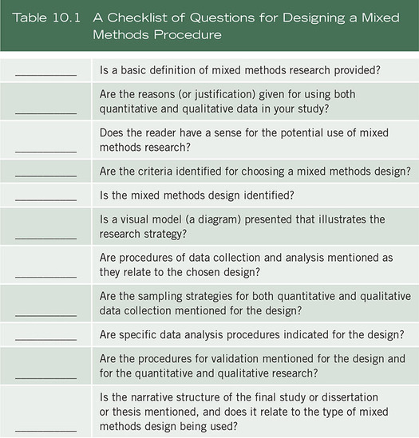
Describe Mixed Methods Research
Because mixed methods research is still somewhat unknown in the social and human sciences as a distinct research approach, it is useful to convey a basic definition and description of the approach in a method section of a proposal. This might include the following:
Types of Mixed Methods Designs
There have been several typologies for classifying and identifying types of mixed methods strategies that proposal developers might use in their proposed mixed methods study. Creswell and Plano Clark (2018) identified several classification systems drawn from the fields of evaluation, nursing, public health, education policy and research, and social and behavioral research. In these classifications, authors used diverse terms for their types of designs, and a substantial amount of overlap of types existed in the typologies. For purposes of clarifying the design discussion in the mixed methods field, we will identify three core mixed methods designs (as shown in Figures 10.1 and 10.2)—the convergent design, the explanatory sequential design, and the exploratory sequential design—and then briefly mention more complex designs (i.e., the mixed methods experimental design, the mixed methods case study design, the mixed methods participatory–social justice design, and the mixed methods evaluation design) in which the core designs can be embedded. Each approach will be discussed in terms of a description of the design, the forms of data collection and data analysis and integration, interpretation, and validity challenges.
Convergent Mixed Methods Design
Figure 10.1 Three Core Mixed Methods Designs
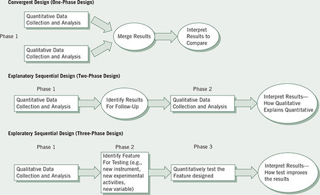
How is this inequality resolved in a convergent mixed methods design? Sometimes mixed methods researchers will collect information from the same number of individuals on both the qualitative and quantitative databases. This means that the qualitative sample will be increased, and it will limit the amount of data collected from any one individual. Another approach would be to weight the qualitative cases so that they equal the N in the quantitative database. One other approach taken by some mixed methods researchers is not to consider the unequal sample sizes a problem. They would argue that the intent of qualitative and quantitative research differs (one to gain an in-depth perspective and the other, to generalize to a population) and that each provides an adequate count. Another issue in sampling is whether the individuals for the sample of qualitative participants should also be individuals in the quantitative sample. Typically, mixed methods researchers would include the sample of qualitative participants in the larger quantitative sample, because ultimately researchers make a comparison between the two databases and the more they are similar, the better the comparison.
This integration consists of merging the results from both the qualitative and the quantitative findings. One challenge in this design is how to actually merge the two databases since bringing together a numeric quantitative database with a text qualitative database is not intuitive. There are several ways to merge the two databases:
Explanatory Sequential Mixed Methods Design
Exploratory Sequential Mixed Methods Design
In this design, the researcher would first collect focus group data, analyze the results, develop an instrument (or other quantitative feature such as a website for testing), and then administer it to a sample of a population. In this case, there may not be adequate instruments to measure the concepts with the sample the investigator wishes to study. In effect, the researcher employs a three-phase procedure with the first phase as exploratory, the second as instrument (or quantitative feature) development, and the third as administering and testing the instrument feature to a sample of a population.
Several options exist, and we will use the approach of developing a culturally sensitive instrument as an illustration. The qualitative data analysis can be used to develop an instrument with good psychometric properties (i.e., validity, reliability). The qualitative data analysis will yield quotes, codes, and themes (see Chapter 9). The development of an instrument can proceed by using the quotes to write items for an instrument, the codes to develop variables that group the items, and themes that group the codes into scales. This is a useful procedure for moving from qualitative data analysis to scale development (the quantitative feature developed in the second phase). Scale development also needs to follow good procedures for instrument design, and the steps for this include ideas such as item discrimination, construct validity, and reliability estimates (see DeVellis, 2012).
Developing a good psychometric instrument that fits the sample and population under study is not the only use of this design. A researcher can analyze the qualitative data to develop new variables that may not be present in the literature, to identify the types of scales that might exist in current instruments or to form categories of information that will be explored further in a quantitative phase. The question arises if the sample for the qualitative phase is the same for the quantitative phase. This cannot be, because the qualitative sample is typically much smaller than a quantitative sample needed to generalize from a sample to a population. Sometimes mixed methods researchers will use entirely different samples for the qualitative (first phase) and quantitative components (third phase) of the study. However, a good procedure is to draw both samples from the same population but make sure that the individuals for both samples are not the same. To have individuals help develop an instrument and then to survey them in the quantitative phase would introduce confounding factors into the study.
Several Complex Mixed Methods Designs
After working with these three core designs—convergent, explanatory sequential, and exploratory sequential—that are the foundation of good mixed methods research, we have now branched out to incorporate more designs that typically fit complex projects. By complex we mean that the designs involve more steps and procedures than are embodied in the three core designs. These mixed methods designs are not more “advanced.” They simply involve more steps and incorporate the core designs into “processes” of research. We have come to this position based on key readings in the mixed methods literature that have surfaced in the past few years. The first step involved isolating and thinking about the types of more complex features that the core designs could be embedded within.
A useful typology emerged in the work of Plano Clark and Ivankova (2016). Their book was helpful in conceptualizing the many types of applications of complex designs. In an entire chapter they discussed the intersection of mixed methods with other approaches to form “advanced applications” (p. 136). They recommended a framework for considering the possibilities of these complex applications:
These three types of complex designs deserve additional attention because many researchers are conducting evaluations, using theoretical orientations such as gender or social inequality theories, and conducting experiments or interventions using mixed methods. In our discussion of mixed methods, we simply need to account for these complex applications and assess how core designs might be embedded within them.
Another step forward in designs appeared in Nastasi and Hitchcock (2016). Their book brought forth several ideas that we now incorporate into our complex designs. They suggested that distinct “processes” occur in research in which both quantitative and qualitative data might be used in distinct steps in the overall process. Their book focused on two ideas: the use of mixed methods in program evaluation and its use in experimental, intervention trials. It also relied heavily on the authors’ mixed methods study in Sri Lanka that addressed the mental health of youth, and they advanced the steps in their evaluation process and embedded into these steps the use of qualitative and quantitative data in multiple core designs. From their work we then have some practical examples of incorporating core designs into the complex procedures of an evaluation and an experimental, intervention trial.
Specifically, we see embedding the core designs into larger processes. As in Creswell and Plano Clark (2018), here we briefly discuss four examples of complex designs and then discuss a general model for embedding the core designs in these processes:
Figure 10.2 Mixed Methods Intervention Design
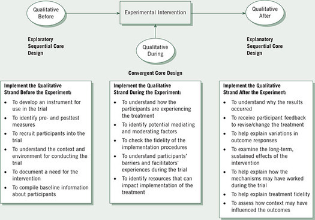
Source: Adapted from Sandelowski (1996).
Figure 10.3 Mixed Methods Case Study Design
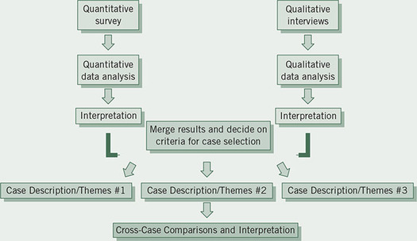
Figure 10.4 Mixed Methods Participatory-Social Justice Design
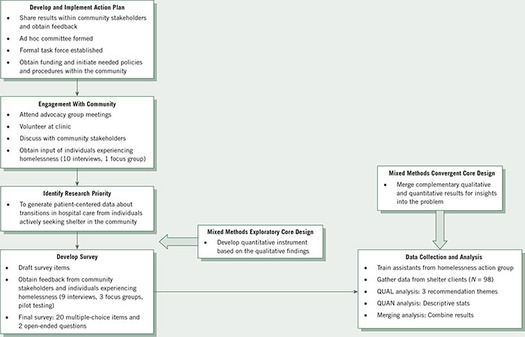
Source: Adapted from Greysen et al. (2012); reported in Creswell & Plano Clark (2018).
Examine Figure 10.5. This mixed methods evaluation design was used in a study of the mental health of youth in Sri Lanka (Nastasi & Hitchcock, 2016). In the outer circle we see the general steps in the evaluation process. Within boxes in the circle we also find the combination of quantitative and qualitative research. In short, looking across these boxes within the circle, we see that the authors have incorporated multiple core designs at different stages in the evaluation process. The figure also shows within the boxes the dates on which the data were collected.
A Procedure for Embedding Core Designs Into Complex Designs
In the mixed methods evaluation design example in Figure 10.5, we see that core designs can be embedded within a process of evaluation. This provides important clues as to how to embed the core designs within complex procedures such as other designs, theories, or methodologies. It also speaks to how to draw a diagram of the mixed methods procedures. In our thinking, we embed the core designs into more complex procedures using these steps:
Figure 10.5 Mixed Methods Evaluation Design
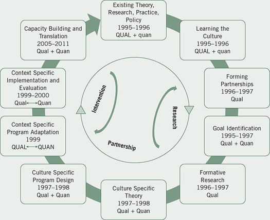
Source: Nastasi & Hitchcock (2016). Used with permission from SAGE Publishing.
As is evident in our discussion, we believe in drawing diagrams of procedures, whether of core designs or more complex designs. Besides thinking about how to draw these diagrams, you might consider some of the notations that have emerged in the field of mixed methods research. Mixed methods notation provides shorthand labels and symbols that convey important aspects of mixed methods research, and they provide a way that mixed methods researchers can easily communicate their procedures (see Table 10.2). Morse (1991) first developed the notation, and it has been added to by writers such as Tashakkori and Teddlie (1998) and Plano Clark (2005) who suggest the following:
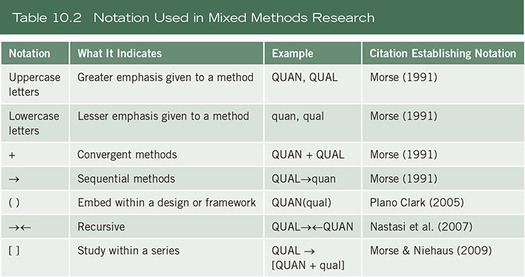
Factors Important in Choosing a Mixed Methods Design
The choice of a particular mixed methods design is based on several factors that relate to the intent of the procedures as well as practical considerations. We will begin with the procedural reasons for choosing a particular mixed methods strategy. It should be recognized that many variations exist in mixed methods designs, and the particular approach an investigator has in mind may not conform exactly to the approaches specified here. However, these designs represent the common underlying features of many designs, and, with modification, researchers can find their own strategy. To choose a design for your project, consider the following factors:
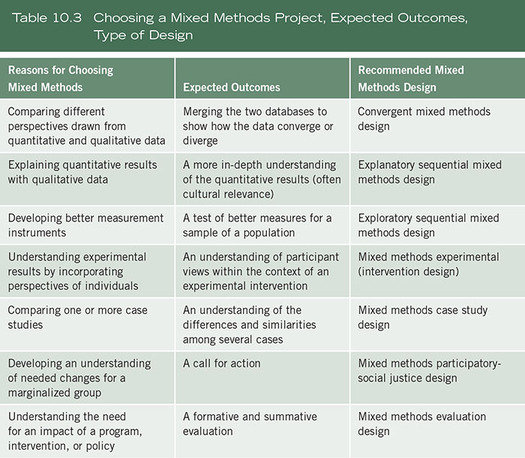
For example, in a convergent design the two are considered to be independent and the data collection and analysis for each database proceed separately. In an embedded experimental design, the qualitative data may be collected independently of the experiment and used to support or augment the larger design, the experiment. Alternatively, the two databases may be connected, with one building on the other. This is a sequential type of design (explanatory sequential design or an exploratory sequential design), and one database does not stand in isolation of the other database. In these sequential designs, the data collection in the second phase cannot be conducted until the first phase results are in. In short, the follow-up data collection builds directly on the results of the initial data collection.
We recommend that students find a published mixed methods journal article that uses their design and introduce it to advisers and faculty committees so that they have a working model to understand the design. Since we are at the early stage of adopting mixed methods research in many fields, a published example of research in a field will help to create both legitimacy for mixed methods research and the idea that it is a feasible approach to research for graduate committees or other audiences. If a research team is conducting the study, multiple forms of data collection at the same time or over a long period of time are possible, such as in an embedded or a multiphase design. Although a single researcher can conduct a participatory–social justice study, the labor-intensive nature of collecting data in the field involving participants as collaborators typically suggests more of a team approach than the inquiry by a single investigator.
Examples of Mixed Methods Procedures
Examples 10.1–10.4 illustrate mixed methods studies that use both the sequential and convergent strategies and procedures.
Example 10.1 A Convergent Parallel Mixed Methods Design
Classen et al. (2007) studied older driver safety in order to develop a health promotion intervention based on modifiable factors influencing motor vehicle crashes with older drivers (age 65 and older). It was a good example of a convergent mixed methods study. The central purpose of the study was identified in the abstract:
This study provided an explicit socio-ecological view explaining the interrelation of possible causative factors, an integrated summary of these causative factors, and empirical guidelines for developing public health interventions to promote older driver safety. Using a mixed methods approach, we were able to compare and integrate main findings from a national crash dataset with perspectives of stakeholders. (p. 677)
This purpose statement identified the use of both quantitative (i.e., a national crash data set) and qualitative (i.e., stakeholders’ perspectives) data. From one of the research questions in the study, we learned that the authors compared the qualitative stakeholder perspectives, needs, and goals for safe and unsafe driving with the quantitative results of the factors that influenced driving injuries. So the expected outcome was to compare the findings. The method section commented on the quantitative national data set, the statistical analysis of this data set, and then the qualitative data set and its analysis. Although not stated explicitly, the data were used together to form results, not used for one database to build on another, and the timing was to look at both databases concurrently. A diagram illustrated the procedures involved in both collecting and analyzing the information. A results section first reported the quantitative results and then the qualitative results. More emphasis was given to the quantitative results, leading to the conclusion that this study favored the quantitative research. However, these reports on the results from the two databases were followed by an analysis of key findings in which the quantitative and qualitative results were compared for supportive and non-supportive findings. In this discussion section, the researchers merged the two databases in a side-by-side comparison. Looking more broadly at the topic and the authors, we saw that the quantitative emphasis would probably be better accepted in the field of occupational therapy than qualitative research. Also, a scan of the authors’ biographical sketches showed that this mixed methods study was completed by a team of researchers drawn from individuals with quantitative and qualitative expertise.
As suggested by this statement, the expected outcome of the study was projected to be a detailed picture of resilience and the personal perspectives of the survivors as learned through qualitative data. Also, the authors intended to probe the quantitative findings, to explain them in more detail through the qualitative data. With this intent, the study set up as a sequential approach, with the two databases connected and one building on the other. Also, with this approach, the timing illustrated the qualitative data collection followed the quantitative results. It was difficult to discern whether this study placed greater emphasis on the quantitative or qualitative component of the project. The project began with a quantitative longitudinal phase with extensive discussions of the measures used to gather data. The authors detailed the quantitative results. However, the qualitative findings illustrated many themes that emerged from the interviews with the women. These themes pointed toward new issues that helped to develop the concept of resilience, such as the turning points in the women’s lives, the ongoing nature of recovery, and the role of spirituality in recovery. The study was conducted by a team of researchers from psychology and criminal justice and supported by the National Institutes of Health (NIH).
Example 10.2 An Explanatory Sequential Mixed Methods Design
In 2007, Banyard and Williams conducted an explanatory sequential mixed methods study examining how women recover from childhood sexual abuse. The quantitative component of the study consisted of structured interviews (with 136 girls in 1990 and a subset of 61 girls in 1997) looking at resilience, correlates of resilience, over time across 7 years of early adulthood. The qualitative aspect consisted of interviews with a subset of 21 girls about their life events, coping, recovery, and resilience. The intent of the mixed methods study was to use the qualitative interviews to “explore and make sense” of the quantitative findings (p. 277). Here was the purpose statement:
Multiple methods are used to examine aspects of resilience and recovery in the lives of female survivors of child sexual abuse (CSA) across 7 years of early adulthood. First quantitative changes in measures of resilience over time were examined. To what extent did women stay the same, increase, or decrease in functioning in a variety of sphere across 7 years during early adulthood? Next, the role of re-traumatization as an impediment to ongoing resilience and correlates of growth or increased well-being over time were examined. Finally, because resilient processes in adulthood have not been the focus of much research and require further description, qualitative data from a subset of participants was used to examine survivors’ own narratives about recovery and healing to learn about key aspects of resilience in women’s own words. (p. 278)
In this mixed methods study, the expected outcome was clearly to develop good psychometric measures and then to use the measures as outcomes in an experimental project. It was also to use the qualitative data to develop hypotheses that might be tested using the intervention in the experiment. The initial phase qualitative data collection was connected to the subsequent quantitative measures and their rigorous testing for scores on validity and reliability. The entire project was timed for the quantitative phase to follow the qualitative phase, and the quantitative phase could be stated as the development of the measures (and survey) and the experimental intervention study. If we were to diagram this project, it would be qual → QUAN → QUAN. As this notation shows, the emphasis in the project favored quantitative research, and the project could be seen as pointing toward the program intervention test at the end of the article. Recognizing that the researchers came from public health, an organization called Partners in Health, and a children’s hospital, the strong quantitative orientation of the project makes sense. Overall, this mixed methods study illustrated both the core exploratory sequential design and the more advanced embedded experimental design with a sequential focus. To conduct such a complex project, the study involved a team of researchers both in the United States and in Rwanda.
Example 10.3 An Exploratory Sequential Mixed Methods Design
A good example of an exploratory sequential study with an experimental test outcome is found in Betancourt et al. (2011). This study used mixed methods research to adapt and evaluate a family strengthening intervention in Rwanda. The investigators sought to examine the mental health problems facing HIV-affected children in Rwanda. They first began with an exploratory, qualitative first phase of interviews with children and their caregivers. From a qualitative thematic analysis of the data, they then performed an extensive review of the literature to locate standardized measures that matched their qualitative findings. They found some measures and added some new ones to develop a survey instrument. This instrument went through several refinements following rigorous procedures of instrument-scale development (e.g., backward and forward translations, a discussion of items, reliability and validity) to develop good construct validity for the measures. These measures (e.g., family communication, good parenting, and others) then became the pretest and posttest assessments in an experimental (intervention) study. For the intervention in the study, the researchers were led to a strengths-based, family-based prevention program that was hypothesized to be related to the measures. The final step in the mixed methods process was to use the validated measures within a program that featured the prevention program. At various points in this study, the researchers also collaborated with stakeholders to help to develop good measures. Thus, this study illustrated a good, complex mixed methods project with an initial qualitative phase, an instrument development phase, and an experimental phase. It shows how an initial exploration qualitatively can be used to support a later quantitative testing phase. They stated the purpose of the study as follows:
In the multi-step process used in this mental health services research, we aimed to (1) carefully unpack locally-relevant indicators of mental health problems and protective resources using qualitative methods; (2) apply qualitative findings to the adaptation of mental health measures and the development of a locally-informed intervention; (3) validate the selected mental health measures; and (4) apply the measures to rigorous evaluation research on the effectiveness of the intervention chosen through the mixed methods process. (p. 34)
Example 10.4 A Social Justice Design
The final example is a feminist study using a mixed methods social-justice explanatory sequential study by Hodgkin (2008). This study investigated the concept of social capital for men and women in households in a regional city in Australia. Social capital described norms and networks that enabled people to work collectively together to address and resolve common problems (e.g., through social activities, the community, and civic participation). The basic mixed methods approach was an explanatory sequential design with an initial survey, a quantitative phase, followed by an interview, qualitative phase. As stated by the author, “the qualitative study elaborated on and enhanced some of the results from the quantitative study” (p. 301). In addition, the author declared that this was a feminist mixed methods project. This means that Hodgkin used a feminist framework (see Chapter 3) to encase the entire mixed methods project. She also referred to the Merten’s transformative research paradigm (Mertens, 2007) that gave voice to women, used a range of data collection methods, and bridged the subjective and objective ways of knowing (see the epistemology discussion in Chapter 3). The purpose of the study was this:
The author will provide examples of quantitative data to demonstrate the existence of different social capital profiles for men and women. Stories will also be presented to provide a picture of gender inequality and expectation. The author will conclude by arguing that despite reluctance on the part of feminists to embrace quantitative methods, the big picture accompanied by the personal story can bring both depth and texture to a study. (p. 297)
Thus, in this mixed methods study, the expected outcome for the study was to help explain the initial survey results in more depth with qualitative interview data. Added to this would be the transformative perspective of seeking to provide a picture of gender inequality and expectations. The databases were used sequentially with the qualitative interviews following and expanding on the quantitative surveys. While the surveys were sent to both men and women in households (N = 1431), the interviews included only women in the survey sample (N = 12). The women interviewed were of different ages, they varied in terms of their work activities (inside and outside the home), they were mothers, and they varied in their educational level of attainment. The timing of the data collection was in two phases with the second-phase qualitative interviews building on the results from the first-phase quantitative surveys. In fact, the survey data indicated that men and women differed in terms of their level of social participation in groups, and in community group participation. The emphasis in this study seemed to be equal between the quantitative and qualitative components, and clearly the sole author of the study sought to provide a good example of mixed methods research that used a feminist framework.
How was this framework used? The author announced at the beginning of the study that “the aim of this article is to demonstrate the use of mixed methods in feminist research” (p. 296). Then the author discussed the lack of qualitative research in the empirical studies of social capital and noted the White, middle-class notion of community that dominated the discussions of social capital. Further, the author talked about lifting up the voices of those disenfranchised by gender and engaged in a study that first pointed out gender differences in social, community, and civic participation within a large sample of men and women, and then focused a qualitative follow-up on only women to understand the women’s role in more depth. The qualitative findings then addressed themes that influence women’s participation, such as wanting to be a “good mother,” wanting to avoid isolation, and wanting to be a good citizen. A summary of the qualitative findings indicates specifically how the qualitative data helped to enhance the findings of the initial survey results. Unlike many feminist mixed methods studies, the conclusion did not indicate a strong call for action to change the inequality. It only mentioned in passing that the mixed methods study provided a powerful voice to gender inequality.
Summary
In designing the procedures for a mixed methods discussion, begin by defining mixed methods research and its core characteristics, briefly mentioning its historical evolution; discuss your chosen mixed methods design; and note the challenges in using the design. Convey a diagram of your procedures that includes good notation to help the reader understand the flow of activities. As you discuss your design, convey the elements that go into it, such as the procedures used in a convergent parallel, an explanatory sequential, or an exploratory sequential mixed methods study. Also consider whether you will overlay your project with a more complex procedure that embeds the data within a larger design, theoretical framework, or methodology. Finally, consider factors that play into your choice of a mixed methods design. These involve considering the intent of the design, what outcomes you expect from the study, the integration of the databases, the timing of them, the emphasis placed on each database, the choice of design that matches your field, and the conduct of the project either by yourself or a team of researchers.
Writing Exercises
Additional Readings
Creswell, J. W., & Plano Clark, V. L. (2018). Designing and conducting mixed methods research (3rd ed.) Thousand Oaks, CA: Sage.
John Creswell and Vicki Plano Clark provide two chapters on mixed methods research designs. Chapter 3 discusses the three core mixed methods designs: convergent mixed methods designs, explanatory sequential mixed methods design, and exploratory sequential mixed methods designs. Chapter 4 advances the four examples of complex designs: mixed methods intervention designs, mixed methods case study designs, mixed methods participatory–social justice designs, and mixed methods evaluation designs. The authors provide examples and diagrams of each type of design and detail important characteristics such as their integrative features.
Greene, J. C., Caracelli, V. J., & Graham, W. F. (1989). Toward a conceptual framework for mixed-method evaluation designs. Educational Evaluation and Policy Analysis, 11(3), 255–274.
Jennifer Greene and associates undertook a study of 57 mixed methods evaluation studies reported from 1980 to 1988. From this analysis, they developed five different mixed methods purposes and seven design characteristics. They found the purposes of mixed methods studies to be based on seeking convergence (triangulation), examining different facets of a phenomenon (complementarity), using the methods sequentially (development), discovering paradox and fresh perspectives (initiation), and adding breadth and scope to a project (expansion). They also found that the studies varied in terms of the assumptions, strengths, and limitations of the method and whether they addressed different phenomena or the same phenomena; were implemented within the same or different paradigms; were given equal or different weight in the study; and were implemented independently, concurrently, or sequentially. Using the purposes and the design characteristics, the authors have recommended several mixed methods designs.
Morse, J. M. (1991). Approaches to qualitative-quantitative methodological triangulation. Nursing Research, 40(1), 120–123.
Janice Morse suggests that using qualitative and quantitative methods to address the same research problem leads to issues of weighing each method and their sequence in a study. Based on these ideas, she then advances two forms of methodological triangulation: (a) simultaneous, using both methods at the same time, and (b) sequential, using the results of one method for planning the next method. These two forms are described using a notation of capital and lowercase letters that signify relative weight as well as sequence. The different approaches to triangulation are then discussed in the light of their purpose, limitations, and approaches.
Plano Clark, V. L. & Creswell, J. W. (2008). The mixed methods reader. Thousand Oaks, CA: Sage.
Creswell and Plano Clark have developed a comprehensive guide to designing the steps in conducting mixed methods research. This design theme is carried forward in specific examples of published mixed methods studies in this reader. Examples are provided of the convergent design, the explanatory sequential design, and the exploratory sequential design. Also, the book contains key articles throughout the years that have informed the development of the field of mixed methods.
Tashakkori, A., & Teddlie, C. (Eds.). (2010). SAGE handbook of mixed methods in social & behavioral research (2nd ed.). Thousand Oaks, CA: Sage.
This handbook, edited by Abbas Tashakkori and Charles Teddlie, represents a major effort to map the field of mixed methods research. The chapters provide an introduction to mixed methods, illustrates methodological and analytic issues in its use, identifies applications in the social and human sciences, and plots future directions. For example, separate chapters illustrate the use of mixed methods research in evaluation, management and organization, health sciences, nursing, psychology, sociology, and education.
https://edge.sagepub.com/creswellrd5e
Students and instructors, please visit the companion website for videos featuring John W. Creswell, full-text SAGE journal articles, quizzes and activities, plus additional tools for research design.
Glossary
Abstract
in a literature review is a brief review of the literature (typically in a short paragraph) that summarizes major elements to enable a reader to understand the basic features of the article.
Attention or interest thoughts
in writing are sentences whose purposes are to keep the reader on track, organize ideas, and keep an individual’s attention.
Big thoughts in writing
are sentences containing specific ideas or images that fall within the realm of umbrella thoughts and serve to reinforce, clarify, or elaborate upon the umbrella thoughts.
Case studies
are a qualitative design in which the researcher explores in depth a program, event, activity, process, or one or more individuals. The case(s) are bounded by time and activity, and researchers collect detailed information using a variety of data collection procedures over a sustained period of time.
Central phenomenon
is the key idea or concept being explored in a qualitative study.
Central question
in qualitative research is a broad question posed by the researcher that asks for an exploration of the central phenomenon or concept in a study.
Code of ethics
is the ethical rules and principles drafted by professional associations that govern scholarly research in the disciplines.
Coding
is the process of organizing the material into chunks or segments of text and assigning a word or phrase to the segment in order to develop a general sense of it.
Coherence in writing
means that the ideas tie together and logically flow from one sentence to another and from one paragraph to another.
Computer databases of the literature
are now available in libraries, and they provide quick access to thousands of journals, conference papers, and materials.
Confidence interval
is an estimate in quantitative research of the range of upper and lower statistical values that are consistent with the observed data and are likely to contain the actual population mean.
Construct validity
occurs when investigators use adequate definitions and measures of variables.
Convergent mixed methods
design is a mixed methods strategy in which a researcher collects both quantitative and qualitative data, analyzes them separately, and then compares the results to see if the findings confirm or disconfirm each other.
Deficiencies in past literature
may exist because topics have not been explored with a particular group, sample, or population; the literature may need to be replicated or repeated to see if the same findings hold, given new samples of people or new sites for study; or the voice of underrepresented groups have not been heard in published literature.
Deficiencies model of an introduction
is an approach to writing an introduction to a research study that builds on gaps existing in the literature. It includes the elements of stating the research problem, reviewing past studies about the problem, indicating deficiencies in the study, and advancing the significance of the study.
Definition of terms
is a section that may be found in a research proposal that defines terms that readers may not understand.
Descriptive analysis
of data for variables in a study includes describing the results through means, standard deviations, and range of scores.
Directional hypothesis,
as used in quantitative research, is one in which the researcher makes a prediction about the expected direction or outcomes of the study.
Effect size
identifies the strength of the conclusions about group differences or the relationships among variables in quantitative studies.
Emphasis placed on each database
in mixed methods is the priority given to the quantitative or qualitative data (or equal priority).
Ethnography
is a qualitative strategy in which the researcher studies an intact cultural group in a natural setting over a prolonged period of time by collecting primarily observational and interview data.
An experimental design
in quantitative research tests the impact of a treatment (or an intervention) on an outcome, controlling for all other factors that might influence that outcome.
Experimental research
seeks to determine if a specific treatment influences an outcome in a study. Researchers assess this impact by providing a specific treatment to one group and withholding it from another group and then determining how both groups score on an outcome.
Explanatory sequential mixed methods
is a mixed methods design that involves a two-phase project in which the researcher collects quantitative data in the first phase, analyzes the results, and then uses a qualitative phase to help explain the quantitative results.
Exploratory sequential mixed methods
is a mixed methods strategy that involves a three-phase project in which the researcher first collects qualitative data and analyzes it, then designs a quantitative feature based on the qualitative results (e.g., new variables, an experimental intervention, a website), and finally, tests the quantitative feature.
External validity threats
arise when experimenters draw incorrect inferences from the sample data to other persons, other settings, and past or future situations.
Fat
in writing refers to words added to prose that are unnecessary to convey the intended meaning.
Gatekeepers
are individuals at research sites who provide access to the site and allow or permit a qualitative research study to be undertaken.
Grounded theory
is a qualitative strategy in which the researcher derives a general, abstract theory of a process, action, or interaction grounded in the views of participants in a study.
Habit of writing
is scholarly writing in a regular and continuous way rather than in binges or in on-and-off again times.
Inferential questions or hypotheses
relate variables or compare groups in terms of variables so that inferences can be drawn from the sample to a population.
Informed consent forms
are those that participants sign before they engage in research. This form acknowledges that participants’ rights will be protected during data collection.
Institutional review board (IRB)
is a committee on a college and university campus that reviews research to determine to what extent the research could place participants at risk during the study. Researchers file applications with the IRB to approve their project and they use informed consent forms to have participants acknowledge the level of risk they agree to by participating in the study.
Intercoder agreement
(or cross-checking) is when two or more coders agree on codes used for the same passages in the text. It is not that they code the same text but whether another coder would code a similar passage with the same or a similar code. Statistical procedures or reliability subprograms in qualitative computer software packages can be used to determine the level of consistency of coding.
Internal validity threats
are experimental procedures, treatments, or experiences of the participants that threaten the researcher’s ability to draw correct inferences from the data about the population in an experiment.
Interpretation in qualitative research
means that the researcher draws meaning from the findings of data analysis. This meaning may result in lessons learned, information to compare with the literature, or personal experiences.
Interpretation in quantitative research
means that the researcher draws conclusions from the results for the research questions, hypotheses, and the larger meaning of the study.
Interview protocol
is a form used by a qualitative researcher for recording and writing down information obtained during an interview.
Joint displays
are tables or graphs that array the quantitative or qualitative data collection and analysis side by side so that researchers can view and interpret their comparison or integration in a mixed methods study. Researchers can develop specific displays for each type of mixed methods design.
Literature map
is a visual picture (or figure) of the research literature on a topic that illustrates how a particular study contributes to the literature.
Manipulation check measure
is a measure of the intended manipulated variable of interest.
Mediating variables
are variables in quantitative research that “stand between” the independent and dependent variables in the causal link. The logic is that the independent variable probably causes the mediating variable, which, in turn, influences the dependent variable.
Memos
are notes written during the research process that reflect on the process or that help shape the development of codes and themes.
Mixed methods case study design
is the use of one or more core designs (i.e., convergent, explanatory sequential, exploratory sequential) within the framework of a single or multiple case study design.
Mixed methods evaluation design
consists of one or more core designs added to the steps in an evaluation procedure typically focused on evaluating the success of an intervention, a program or a policy.
Mixed methods experimental (or intervention) design
occurs when the researcher collects and analyzes both quantitative and qualitative data from core designs and embeds them within an experiment or intervention trial.
Mixed methods integration
occurs in mixed methods designs when data are merged, connected (used to explain or build), or embedded in a design.
Mixed methods notation
provides shorthand labels and symbols that convey important aspects of mixed methods research, and they provide a way that mixed methods researchers can easily communicate their procedures.
Mixed methods participatory-social justice design
is a mixed methods design in which the researcher adds a core design within a larger participatory and/or social justice theoretical or conceptual framework.
Mixed methods purpose statements
contain the overall intent of the study, information about both the quantitative and qualitative strands of the study, and a rationale of incorporating both strands to study the research problem.
Mixed methods research
is an approach to inquiry that combines or integrates both qualitative and quantitative forms of research. It involves philosophical assumptions, the use of qualitative and quantitative approaches, and the mixing or integrating of both approaches in a study.
Mixed methods research question
is a special question posed in a mixed methods study that directly addresses the mixing of the quantitative and qualitative strands of the research. This is the question that will be answered in the study based on the mixing.
Moderating variables
are variables in quantitative research that moderate the effect of independent variables in a study. They are variables created by the researcher who takes one independent variable times another (typically a demographic variable) to construct a new independent variable.
Narrative hook
is a term drawn from English composition, meaning words that are used in the opening sentence of an introduction that serve to draw, engage, or hook the reader into the study.
Narrative research
is a qualitative strategy in which the researcher studies the lives of individuals and asks one or more individuals to provide stories about their lives. This information is then often retold or restoried by the researcher into a narrative chronology.
Nondirectional hypothesis
in a quantitative study is one in which the researcher makes a prediction, but the exact form of differences (e.g., higher, lower, more, or less) is not specified because the researcher does not know what can be predicted from past literature.
Null hypothesis
in quantitative research represents the traditional approach to writing hypotheses: It makes a prediction that, in the general population, no relationship or no significant difference exists between groups on a variable.
Observational protocol
is a form used by a qualitative researcher for recording and writing down information while observing.
Phenomenological research
is a qualitative strategy in which the researcher identifies the essence of human experiences about a phenomenon as described by participants in a study.
Postpositivists
reflect a deterministic philosophy about research in which causes probably determine effects or outcomes. Thus, the problems studied by postpositivists reflect issues that need to identify and assess the causes that influence the outcomes, such as found in experiments.
Pragmatism
as a worldview or philosophy arises out of actions, situations, and consequences rather than antecedent conditions (as in postpositivism). There is a concern with applications—what works—and solutions to problems. Instead of focusing on methods, researchers emphasize the research problem and use all approaches available to understand it.
A purpose statement
in a research proposal or project sets the objectives, the intent, and the major idea for the study.
To purposefully select
participants or sites (or documents or visual material) means that qualitative researchers select individuals who will best help them understand the research problem and the research questions.
Qualitative audiovisual digital materials
take the form of photographs, art objects, videotapes, and sounds.
Qualitative codebook
is a means for organizing qualitative data using a list of predetermined codes that are used for coding the data. This codebook might be composed with the names of codes in one column, a definition of codes in another column, and then specific instances (e.g., line numbers) in which the code is found in the transcripts.
Qualitative documents
are public documents (e.g., newspapers, minutes of meetings, official reports) or private documents (e.g., personal journals and diaries, letters, e-mails).
Qualitative interviews
means that the researcher conducts face-to-face interviews with participants, interviews participants by telephone, on the Internet, or engages in focus group interviews with six to eight interviewees in each group. These interviews involve unstructured and generally open-ended questions that are few in number and intended to elicit views and opinions from the participants.
Qualitative observation
means that the researcher takes field notes on the behavior and activities of individuals at the research site and records observations.
Qualitative purpose statements
contain information about the central phenomenon explored in the study, the participants in the study, and the research site. It also conveys an emerging design and research words drawn from the language of qualitative inquiry.
Qualitative reliability
indicates that a particular approach is consistent across different researchers and different projects.
Qualitative research
is a means for exploring and understanding the meaning individuals or groups ascribe to a social or human problem. The process of research involves emerging questions and procedures; collecting data in the participants’ setting; analyzing the data inductively, building from particulars to general themes; and making interpretations of the meaning of the data. The final written report has a flexible writing structure.
Qualitative validity
means that the researcher checks for the accuracy of the findings by employing certain procedures.
Quantitative hypotheses
are predictions the researcher makes about the expected relationships among variables.
Quantitative purpose statements
include the variables in the study and their relationship, the participants in a study, and the site for the research. It also includes language associated with quantitative research and the deductive testing of relationships or theories.
Quantitative research
is a means for testing objective theories by examining the relationship among variables. These variables can be measured, typically on instruments, so that numbered data can be analyzed using statistical procedures. The final written report has a set structure consisting of introduction, literature and theory, methods, results, and discussion.
Quantitative research questions
are interrogative statements that raise questions about the relationships among variables that the investigator seeks to answer.
Quasi-experiment
is a form of experimental research in which individuals are not randomly assigned to groups.
Random sampling
is a procedure in quantitative research for selecting participants. It means that each individual has an equal probability of being selected from the population, ensuring that the sample will be representative of the population.
Reflexivity
means that researchers reflect about their biases, values, and personal background, such as gender, history, culture, and socioeconomic status, and how this background shapes their interpretations formed during a study.
Reliability
refers to whether scores to items on an instrument are internally consistent (i.e., are the item responses consistent across constructs?), stable over time (test-retest correlations), and whether there was consistency in test administration and scoring.
Research approaches
are plans and the procedures for research that span the decisions from broad assumptions to detailed methods of data collection and analysis. It involves the intersection of philosophical assumptions, designs, and specific methods.
Research designs
are types of inquiry within qualitative, quantitative, and mixed methods approaches that provide specific direction for procedures in a research study.
Research methods
involve the forms of data collection, analysis, and interpretation that researchers propose for their studies.
Research problems
are problems or issues that lead to the need for a study.
Research tips
are approaches or techniques that have worked well in research for authors.
Response bias
is the effect of nonresponses on survey estimates, and it means that if nonrespondents had responded, their responses would have substantially changed the overall results of the survey.
Reviewing studies
in an introduction justifies the importance of the study and creates distinctions between past studies and a proposed study.
Saturation
is when, in qualitative data collection, the researcher stops collecting data because fresh data no longer sparks new insights or reveals new properties.
Script,
as used in this book, is a template of a few sentences that contains the major words and ideas for particular parts of a research proposal or report (e.g., purpose statement or research question) and provides space for researchers to insert information that relates to their projects.
Significance of the study
in an introduction conveys the importance of the problem for different audiences that may profit from reading and using the study.
Single-subject design
or N of 1 design involves observing the behavior of a single individual (or a small number of individuals) over time.
Social constructivists
hold the assumption that individuals seek understanding of the world in which they live and work. Individuals develop subjective meanings of their experiences, meanings directed toward certain objects or things.
Social science theory
is a theory framework that researchers use in designs. This theory may inform many aspects of a study from the issue, to the problem, the findings, and the final suggestions for revising the theory.
Statistical conclusion validity
arises when experimenters draw inaccurate inferences from the data because of inadequate statistical power or the violation of statistical assumptions.
Statistical significance testing
reports an assessment as to whether the observed scores reflect a pattern other than chance. A statistical test is considered to be of significance if the results are unlikely by chance to have occurred, and the null hypothesis of “no effect” can be rejected.
Style manuals
provide guidelines for creating a scholarly style of a manuscript, such as a consistent format for citing references, creating headings, presenting tables and figures, and using nondiscriminatory language.
Survey designs
provide plans for a quantitative or numeric description of trends, attitudes, or opinions of a population by studying a sample of that population.
Survey research
provides a quantitative or numeric description of trends, attitudes, or opinions of a population by studying a sample of that population.
Theoretical lens or perspective in qualitative research
provides an overall orienting lens that is used to study questions of gender, class, and race (or other issues of marginalized groups). This lens becomes an advocacy perspective that shapes the types of questions asked, informs how data are collected and analyzed, and provides a call for action or change.
Theories
in mixed methods research provide an orienting lens that shapes the types of questions asked, who participates in the study, how data are collected, and the implications made from the study (typically for change and advocacy). They present an overarching perspective used with research designs.
Theory in quantitative research
is the use of an interrelated set of constructs (or variables) formed into propositions, or hypotheses, that specify the relationship among variables (typically in terms of magnitude or direction) and predicts the outcomes of a study.
Theory use in mixed methods
studies may include theory deductively in quantitative theory testing and verification or inductively, as in an emerging qualitative theory or pattern. It also has distinctive features of providing a framework within which researchers collect, analyze, and integrate both quantitative and qualitative data. This framework has taken two forms: (a) the use of a social science framework and (b) the use of a transformative framework.
Timing in mixed methods data collection
refers to the sequence of data collection in a study and whether the researcher collects the data concurrently at roughly the same time or collects the data sequentially with one database gathered prior to the other database.
Topic
is the subject or subject matter of a proposed study that a researcher identifies early in the preparation of a study.
Transformative worldview
is a philosophical position in which the researcher identifies one of the qualitative frameworks (e.g., indigenous populations, females, racial and ethnic groups, disabled individuals, and so forth) and uses the framework to advocate for the underrepresented populations and to help create a better, just society for them (Mertens, 2010).
True experiment
is a form of experimental research in which individuals are randomly assigned to groups.
Validity in quantitative research
refers to whether one can draw meaningful and useful inferences from scores on particular instruments.
Validity strategies
in qualitative research are procedures (e.g., member checking, triangulating data sources) that qualitative researchers use to demonstrate the accuracy of their findings and convince readers of this accuracy.
Variable
refers to a characteristic or attribute of an individual or an organization that can be measured or observed and that varies among the people or organization being studied. A variable typically will vary in two or more categories or on a continuum of scores, and it can be measured.
Worldview
is defined as “a basic set of beliefs that guide action” (Guba, 1990, p. 17).
References
Aikin, M. C. (Ed.). (1992). Encyclopedia of educational research (6th ed.). New York: Macmillan.
American Psychological Association. (2010). Publication Manual of the American Psychological Association (6th ed.). Washington, DC: Author.
Ames, G. M., Duke, M. R., Moore, R. S., & Cunradi, C. B. (2009). The impact of occupational culture on drinking behavior of young adults in the U.S. Navy. Journal of Mixed Methods Research, 3(2), 129–150.
Anderson, E. H., & Spencer, M. H. (2002). Cognitive representation of AIDS. Qualitative Health Research, 12(10), 1338–1352.
Annual Review of Psychology. (1950–). Palo Alto, CA: Annual Reviews.
Asmussen, K. J., & Creswell, J. W. (1995). Campus response to a student gunman. Journal of Higher Education, 66, 575–591.
Babbie, E. (2015). The practice of social research (14th ed.). Belmont, CA: Wadsworth/Thomson.
Bachman, R. D., & Schutt, R. K. (2017). Fundamentals of research in criminology and criminal justice (4th ed.). Los Angeles, CA: Sage.
Bailey, E. P. (1984). Writing clearly: A contemporary approach. Columbus, OH: Charles Merrill.
Banyard, V. L., & Williams, L. M. (2007). Women’s voices on recovery: A multi-method study of the complexity of recovery from child sexual abuse. Child Abuse & Neglect, 31, 275–290.
Bean, J., & Creswell, J. W. (1980). Student attrition among women at a liberal arts college. Journal of College Student Personnel, 3, 320–327.
Beisel, N. (February, 1990). Class, culture, and campaigns against vice in three American cities, 1872–1892. American Sociological Review, 55, 44–62.
Bem, D. (1987). Writing the empirical journal article. In M. Zanna & J. Darley (Eds.), The compleat academic: A practical guide for the beginning social scientist (pp. 171–201). New York: Random House.
Berg, B. L. (2001). Qualitative research methods for the social sciences (4th ed.). Boston: Allyn & Bacon.
Berger, P. L., & Luckmann, T. (1967). The social construction of reality: A treatise in the sociology of knowledge. Garden City, NJ: Anchor.
Betancourt, T. S., Meyers-Ohki, S. E., Stevenson, A., Ingabire, C., Kanyanganzi, F., Munyana, M., et al. (2011). Using mixed-methods research to adapt and evaluate a family strengthening intervention in Rwanda. African Journal of Traumatic Stress, 2(1), 32–45.
Blalock, H. (1969). Theory construction: From verbal to mathematical formulations. Englewood Cliffs, NJ: Prentice Hall.
Blalock, H. (1985). Causal models in the social sciences. New York: Aldine.
Blalock, H. (1991). Are there any constructive alternatives to causal modeling? Sociological Methodology, 21, 325–335.
Blase, J. J. (1989, November). The micropolitics of the school: The everyday political orientation of teachers toward open school principals. Educational Administration Quarterly, 25(4), 379–409.
Boeker, W. (1992). Power and managerial dismissal: Scapegoating at the top. Administrative Science Quarterly, 37, 400–421.
Bogdan, R. C., & Biklen, S. K. (1992). Qualitative research for education: An introduction to theory and methods. Boston: Allyn & Bacon.
Boice, R. (1990). Professors as writers: A self-help guide to productive writing. Stillwater, OK: New Forums.
Boneva, B., Kraut, R., & Frohlich, D. (2001). Using e-mail for personal relationships. American Behavioral Scientist, 45(3), 530–549.
Boote, D. N., & Beile, P. (2005). Scholars before researchers: On the centrality of the dissertation literature review in research preparation. Educational Researcher, 34(6), 3–15.
Booth-Kewley, S., Edwards, J. E., & Rosenfeld, P. (1992). Impression management, social desirability, and computer administration of attitude questionnaires: Does the computer make a difference? Journal of Applied Psychology, 77(4), 562–566.
Borg, W. R., & Gall, M. D. (2006). Educational research: An introduction (8th ed.). New York: Longman.
Bryman, A. (2006). Mixed methods: A four-volume set. Thousand Oaks, CA: Sage.
Buck, G., Cook, K., Quigley, C., Eastwood, J., & Lucas, Y. (2009). Profiles of urban, low SES, African American girls’ attitudes toward science: A sequential explanatory mixed methods study. Journal of Mixed Methods Research, 3(1), 386–410.
Bunge, N. (1985). Finding the words: Conversations with writers who teach. Athens: Swallow Press, Ohio University Press.
Cahill, S. E. (1989). Fashioning males and females: Appearance management and the social reproduction of gender. Symbolic Interaction, 12(2), 281–298.
Campbell, D., & Stanley, J. (1963). Experimental and quasi-experimental designs for research. In N. L. Gage (Ed.), Handbook of research on teaching (pp. 1–76). Chicago: Rand McNally.
Campbell, D. T., & Fiske, D. (1959). Convergent and discriminant validation by the multitrait-multimethod matrix. Psychological Bulletin, 56, 81–105.
Carroll, D. L. (1990). A manual of writer’s tricks. New York: Paragon.
Carstensen, L. W., Jr. (1989). A fractal analysis of cartographic generalization. The American Cartographer, 16(3), 181–189.
Castetter, W. B., & Heisler, R. S. (1977). Developing and defending a dissertation proposal. Philadelphia: University of Pennsylvania, Graduate School of Education, Center for Field Studies.
Charmaz, K. (2006). Constructing grounded theory. Thousand Oaks, CA: Sage.
Cheek, J. (2004). At the margins? Discourse analysis and qualitative research. Qualitative Health Research, 14, 1140–1150.
Cherryholmes, C. H. (1992, August–September). Notes on pragmatism and scientific realism. Educational Researcher, 13–17.
Clandinin, D. J. (Ed.). (2007). Handbook of narrative inquiry: Mapping a methodology. Thousand Oaks, CA: Sage.
Clandinin, D. J., & Connelly, F. M. (2000). Narrative inquiry: Experience and story in qualitative research. San Francisco: Jossey-Bass.
Classen, S., Lopez, D. D. S., Winter, S., Awadzi, K. D., Ferree, N., & Garvan, C. W. (2007). Population-based health promotion perspective for older driver safety: Conceptual framework to intervention plan. Clinical Intervention in Aging 2(4), 677–693.
Cohen, J. (1977). Statistical power analysis for the behavioral sciences. New York: Academic Press.
Cohen, S., Kamarck, T., & Mermelstein, R. (1983). A global measure of perceived stress. Journal of Health and Social Behavior, 24, 385–396.
Cook, T. D., & Campbell, D. T. (1979). Quasi-experimentation: Design and analysis issues for field settings. Chicago: Rand McNally.
Cooper, H. (2010). Research synthesis and meta-analysis: A step-by-step approach (4th ed.). Thousand Oaks, CA: Sage.
Cooper, J. O., Heron, T. E., & Heward, W. L. (2007). Applied behavior analysis. Upper Saddle River, NJ: Pearson/Merrill-Prentice Hall.
Corbin, J. M., & Strauss, J. M. (2007). Basics of qualitative research: Techniques and procedures for developing grounded theory (3rd ed.). Thousand Oaks, CA: Sage.
Corbin, J. M., & Strauss, J. M. (2015). Techniques and procedures for developing grounded theory (4th ed.). Thousand Oaks, CA: Sage.
Creswell, J. D., Welch, W. T., Taylor, S. E., Sherman, D. K., Gruenewald, T. L., & Mann, T. (2005). Affirmation of personal values buffers neuroendocrine and psychological stress responses. Psychological Science, 16, 846–851.
Creswell, J. W. (2010). Mapping the developing landscape of mixed methods research. In A. Tashakkori & C. Teddlie (Eds.), SAGE handbook of mixed methods in social & behavioral research (2nd ed., pp. 45–68). Thousand Oaks, CA: Sage.
Creswell, J. W. (2011). Controversies in mixed methods research. In N. Denzin & Y. Lincoln (Eds.), The SAGE handbook on qualitative research (4th ed., pp. 269–284). Thousand Oaks, CA: Sage.
Creswell, J. W. (2012). Educational research: Planning, conducting, and evaluating quantitative and qualitative research (4th ed.). Upper Saddle River, NJ: Merrill.
Creswell, J. W. (2013). Qualitative inquiry and research design: Choosing among five approaches (3rd ed.). Thousand Oaks, CA: Sage.
Creswell, J. W. (2014). Research design: Qualitative, quantitative, and mixed methods approaches (4th ed.). Thousand Oaks, CA: Sage.
Creswell, J. W. (2015). A concise introduction to mixed methods research. Thousand Oaks, CA: Sage.
Creswell, J. W. (2016). 30 essential skills for the qualitative researcher. Thousand Oaks, CA: Sage.
Creswell, J. W., & Brown, M. L. (1992, Fall). How chairpersons enhance faculty research: A grounded theory study. The Review of Higher Education, 16(1), 41–62.
Creswell, J. W., & Guetterman, T. (in press). Educational research: Planning, conducting, and evaluating quantitative and qualitative research (6th ed.). Upper Saddle River, NJ: Pearson.
Creswell, J. W., & Miller, D. (2000). Determining validity in qualitative inquiry. Theory Into Practice, 39(3), 124–130.
Creswell, J. W., & Plano Clark, V. L. (2011). Designing and conducting mixed methods research (2nd ed.). Thousand Oaks, CA: Sage.
Creswell, J. W., & Plano Clark, V. L. (2018). Designing and conducting mixed methods research (3rd ed.). Thousand Oaks, CA: Sage.
Creswell, J. W., & Poth, C. N. (2018). Qualitative inquiry and research design: Choosing among five approaches (4th ed.). Thousand Oaks, CA: Sage.
Creswell, J. W., Seagren, A., & Henry, T. (1979). Professional development training needs of department chairpersons: A test of the Biglan model. Planning and Changing, 10, 224–237.
Crotty, M. (1998). The foundations of social research: Meaning and perspective in the research process. Thousand Oaks, CA: Sage.
Crutchfield, J. P. (1986). Locus of control, interpersonal trust, and scholarly productivity. Unpublished doctoral dissertation, University of Nebraska-Lincoln.
Daum, M. (2010). Life would be perfect if I lived in that house. New York: Knopf.
DeGraw, D. G. (1984). Job motivational factors of educators within adult correctional institutions from various states. Unpublished doctoral dissertation, University of Nebraska-Lincoln.
Denzin, N. K., & Lincoln, Y. S. (Eds.). (2011). The SAGE handbook of qualitative research (4th ed.). Thousand Oaks, CA: Sage.
Denzin, N. K., & Lincoln, Y. S. (Eds.). (2018). The SAGE handbook of qualitative research (5th ed.). Los Angeles, CA: Sage.
DeVellis, R. F. (2012). Scale development: Theory and application (3rd ed.). Thousand Oaks, CA: Sage.
DeVellis, R. F. (2017). Scale development: Theory and application (4th ed.). Los Angeles, CA: Sage.
Dillard, A. (1989). The writing life. New York: Harper & Row.
Dillman, D. A. (2007). Mail and Internet surveys: The tailored design method (2nd ed.). New York: John Wiley.
Duncan, O. D. (1985). Path analysis: Sociological examples. In H. M. Blalock, Jr. (Ed.), Causal models in the social sciences (2nd ed., pp. 55–79). New York: Aldine.
Educational Resources Information Center. (1975). Thesaurus of ERIC descriptors (12th ed.). Phoenix, AZ: Oryx.
Elbow, P. (1973). Writing without teachers. London: Oxford University Press.
Enns, C. Z., & Hackett, G. (1990). Comparison of feminist and nonfeminist women’s reactions to variants of nonsexist and feminist counseling. Journal of Counseling Psychology, 37(1), 33–40.
Faul, F., Erdfelder, E., Buchner, A., & Lang, A.-G. (2009). Statistical power analyses using G*Power 3.1: Tests for correlation and regression analyses. Behavior Research Methods, 41, 1149–1160.
Faul, F., Erdfelder, E., Lang, A.-G., & Buchner, A. (2007). G*Power 3: A flexible statistical power analysis program for the social, behavioral, and biomedical sciences. Behavior Research Methods, 39, 175–191.
Fay, B. (1987). Critical social science. Ithaca, NY: Cornell University Press.
Fetterman, D. M. (2010). Ethnography: Step by step (3rd ed.). Thousand Oaks, CA: Sage.
Fink, A. (2016). How to conduct surveys (6th ed.). Thousand Oaks, CA: Sage.
Firestone, W. A. (1987). Meaning in method: The rhetoric of quantitative and qualitative research. Educational Researcher, 16, 16–21.
Flick, U. (Ed.). (2007). The Sage qualitative research kit. Thousand Oaks, CA: Sage.
Flinders, D. J., & Mills, G. E. (Eds.). (1993). Theory and concepts in qualitative research: Perspectives from the field. New York: Columbia University, Teachers College Press.
Fowler, F. J. (2008). Survey research methods (4th ed.). Thousand Oaks, CA: Sage.
Fowler, F. J. (2014). Survey research methods (5th ed.). Thousand Oaks, CA: Sage.
Franklin, J. (1986). Writing for story: Craft secrets of dramatic nonfiction by a two-time Pulitzer prize-winner. New York: Atheneum.
Gamson, J. (2000). Sexualities, queer theory, and qualitative research. In N. K. Denzin & Y. S. Lincoln (Eds.), Handbook of qualitative research (pp. 347–365). Thousand Oaks, CA: Sage.
Gibbs, G. R. (2007). Analyzing qualitative data. In U. Flick (Ed.), The Sage qualitative research kit. Thousand Oaks, CA: Sage.
Giordano, J., O’Reilly, M., Taylor, H., & Dogra, N. (2007). Confidentiality and autonomy: The challenge(s) of offering research participants a choice of disclosing their identity. Qualitative Health Research, 17(2), 264–275.
Giorgi, A. (2009). The descriptive phenomenological method in psychology: A modified Husserlian approach. Pittsburgh, PA: Duquesne University Press.
Glesne, C. (2015). Becoming qualitative researchers: An introduction (5th ed.). White Plains, NY: Longman.
Glesne, C., & Peshkin, A. (1992). Becoming qualitative researchers: An introduction. White Plains, NY: Longman.
Gravetter, F. J., & Wallnau, L. B. (2012). Statistics for the behavioural sciences (9th ed.). Belmont, CA: Wadsworth.
Greene, J. C. (2007). Mixed methods in social inquiry. San Francisco: Jossey-Bass.
Greene, J. C., & Caracelli, V. J. (Eds.). (1997). Advances in mixed-method evaluation: The challenges and benefits of integrating diverse paradigms. (New Directions for Evaluation, No. 74). San Francisco: Jossey-Bass.
Greene, J. C., Caracelli, V. J., & Graham, W. F. (1989). Toward a conceptual framework for mixed-method evaluation designs. Educational Evaluation and Policy Analysis, 11(3), 255–274.
Greysen, S. R., Allen, R., Lucas, G. I., Wang, E. A., Rosenthal, M. S. (2012). J. Gen Intern Med. doi:10.1007/s11606-012-2117-2.
Guba, E. G. (1990). The alternative paradigm dialog. In E. G. Guba (Ed.), The paradigm dialog (pp. 17–30). Newbury Park, CA: Sage.
Guest, G., MacQueen, K. M., & Namey, E. E. (2012). Applied thematic analysis. Thousand Oaks, CA: Sage.
Guetterman, T., Fetters, M. D., & Creswell, J. W. (2015). Integrating quantitative and qualitative results in health science mixed methods research through joint displays. Annals of Family Medicine, 13(6), 554–561.
Harding, P. (2009). Tinkers. New York: NYU School of Medicine, Bellevue Literary Press.
Hatch, J. A. (2002). Doing qualitative research in educational settings. Albany: State University of New York Press.
Heron, J., & Reason, P. (1997). A participatory inquiry paradigm. Qualitative Inquiry, 3, 274–294.
Hesse-Biber, S. N., & Leavy, P. (2011). The practice of qualitative research (2nd ed.). Thousand Oaks, CA: Sage.
Hodgkin, S. (2008). Telling it all: A story of women’s social capital using mixed methods approach. Journal of Mixed Methods Research, 2(3), 296–316.
Homans, G. C. (1950). The human group. New York: Harcourt, Brace.
Hopkins, T. K. (1964). The exercise of influence in small groups. Totowa, NJ: Bedmister.
Houtz, L. E. (1995). Instructional strategy change and the attitude and achievement of seventh- and eighth-grade science students. Journal of Research in Science Teaching, 32(6), 629–648.
Huber, J., & Whelan, K. (1999). A marginal story as a place of possibility: Negotiating self on the professional knowledge landscape. Teaching and Teacher Education, 15, 381–396.
Humbley, A. M., & Zumbo, B. D. (1996). A dialectic on validity: Where we have been and where we are going. The Journal of General Psychology, 123, 207–215.
Isaac, S., & Michael, W. B. (1981). Handbook in research and evaluation: A collection of principles, methods, and strategies useful in the planning, design, and evaluation of studies in education and the behavioral sciences (2nd ed.). San Diego, CA: EdITS.
Israel, M., & Hay, I. (2006). Research ethics for social scientists: Between ethical conduct and regulatory compliance. Thousand Oaks, CA: Sage.
Ivankova, N. V. (2015). Mixed methods applications in action research: From methods to community action. Thousand Oaks, CA: Sage.
Ivankova, N. V., & Stick, S. L. (2007). Students’ persistence in a distributed doctoral program in educational leadership in higher education. Research in Higher Education, 48(1), 93–135.
Janovec, T. (2001). Procedural justice in organizations: A literature map. Unpublished manuscript, University of Nebraska-Lincoln.
Janz, N. K., Zimmerman, M. A., Wren, P. A., Israel, B. A., Freudenberg, N., & Carter, R. J. (1996). Evaluation of 37 AIDS prevention projects: Successful approaches and barriers to program effectiveness. Health Education Quarterly, 23(1), 80–97.
Jick, T. D. (1979, December). Mixing qualitative and quantitative methods: Triangulation in action. Administrative Science Quarterly, 24, 602–611.
Johnson, R. B., Onwuegbuzie, A. J., & Turner, L. A. (2007). Toward a definition of mixed methods research. Journal of Mixed Methods Research, 1(2), 112–133.
Jungnickel, P. W. (1990). Workplace correlates and scholarly performance of pharmacy clinical faculty members. Unpublished manuscript, University of Nebraska-Lincoln.
Kalof, L. (2000). Vulnerability to sexual coercion among college women: A longitudinal study. Gender Issues, 18(4), 47–58.
Keeves, J. P. (Ed.). (1988). Educational research, methodology, and measurement: An international handbook. Oxford, UK: Pergamon.
Kemmis, S., & McTaggart, R. (2000). Participatory action research. In N. K. Denzin & Y. S. Lincoln (Eds.), Handbook of qualitative research (2nd ed., pp. 567–605). Thousand Oaks, CA: Sage.
Kemmis, S., & Wilkinson, M. (1998). Participatory action research and the study of practice. In B. Atweh, S. Kemmis, & P. Weeks (Eds.), Action research in practice: Partnerships for social justice in education (pp. 21–36). New York: Routledge.
Kennett, D. J., O’Hagan, F. T., & Cezer, D. (2008). Learned resourcefulness and the long-term benefits of a chronic pain management program. Journal of Mixed Methods Research, 2(4), 317–339.
Keppel, G. (1991). Design and analysis: A researcher’s handbook (3rd ed.). Englewood Cliffs, NJ: Prentice Hall.
Keppel, G., & Wickens, T. D. (2003). Design and analysis: A researcher’s handbook (4th ed.). Englewood Cliffs, NJ: Prentice Hall.
Kerlinger, F. N. (1979). Behavioral research: A conceptual approach. New York: Holt, Rinehart & Winston.
King, S. (2000). On writing: A memoir of the craft. New York: Scribner.
Kline, R. B. (1998). Principles and practice of structural equation modeling. New York: Guilford.
Kos, R. (1991). Persistence of reading disabilities: The voices of four middle school students. American Educational Research Journal, 28(4), 875–895.
Kraemer, H. C., & Blasey, C. (2016). How many subjects? Statistical power analysis in research. Thousand Oaks, CA: Sage.
Krueger, R. A., & Casey, M. A. (2014). Focus groups: A practical guide for applied research (5th ed.). Thousand Oaks, CA: Sage.
Kvale, S. (2007). Doing interviews. In U. Flick (Ed.), The Sage qualitative research kit. London: Sage.
Labovitz, S., & Hagedorn, R. (1971). Introduction to social research. New York: McGraw-Hill.
Ladson-Billings, G. (2000). Racialized discourses and ethnic epistemologies. In N. K. Denzin & Y. S. Lincoln (Eds.), Handbook on qualitative research (pp. 257–277). Thousand Oaks, CA: Sage.
LaFrance, J., & Crazy Bull, C. (2009). Researching ourselves back to life: Taking control of the research agenda in Indian Country. In D. M. Mertens & P. E. Ginsburg (Eds.), The handbook of social research ethics (pp. 135–149). Thousand Oaks, CA: Sage.
Lather, P. (1986). Research as praxis. Harvard Educational Review, 56, 257–277.
Lauterbach, S. S. (1993). In another world: A phenomenological perspective and discovery of meaning in mothers’ experience with death of a wished-for baby: Doing phenomenology. In P. L. Munhall & C. O. Boyd (Eds.), Nursing research: A qualitative perspective (pp. 133–179). New York: National League for Nursing Press.
Lee, Y. J., & Greene, J. (2007). The predictive validity of an ESL placement test: A mixed methods approach. Journal of Mixed Methods Research, 1(4), 366–389.
Leslie, L. L. (1972). Are high response rates essential to valid surveys? Social Science Research, 1, 323–334.
Levitt, H., Bamberg, M., Creswell, J. W., Frost, D. M., Josselson, R., & Suarez-Orozco, C. (in press). Journal article reporting standards for qualitative research in psychology. American Psychologist.
Li, S., Marquart, J. M., & Zercher, C. (2000). Conceptual issues and analytic strategies in mixed-methods studies of preschool inclusion. Journal of Early Intervention, 23(2), 116–132.
Lincoln, Y. S. (2009). Ethical practices in qualitative research. In D. M. Mertens & P. E. Ginsberg (Ed.), The handbook of social research ethics (pp. 150–169). Thousand Oaks, CA: Sage.
Lincoln, Y. S., & Guba, E. G. (1985). Naturalistic inquiry. Beverly Hills, CA: Sage.
Lincoln, Y. S., Lynham, S. A., & Guba, E. G. (2011). Paradigmatic controversies, contradictions, and emerging confluences revisited. In N. K. Denzin & Y. S. Lincoln, The SAGE handbook of qualitative research (4th ed., pp. 97–128). Thousand Oaks, CA: Sage.
Lipsey, M. W. (1990). Design sensitivity: Statistical power for experimental research. Newbury Park, CA: Sage.
Locke, L. F., Spirduso, W. W., & Silverman, S. J. (2013). Proposals that work: A guide for planning dissertations and grant proposals (6th ed.). Thousand Oaks, CA: Sage.
Lysack, C. L., & Krefting, L. (1994). Qualitative methods in field research: An Indonesian experience in community based practice. The Occupational Therapy Journal of Research, 14(20), 93–110.
Mac an Ghaill, M., & Haywood, C. (2015). British-born Pakistani and Bangladeshi young men: Exploring unstable concepts of Muslim, Islamophobia and racialization. Critical Sociology, 41, 97–114.
MacKinnon, D. P., Fairchild, A. J., & Fritz, M.S. (2007). Mediation analysis. Annual Review of Psychology, 58, 593–614.
Marshall, C., & Rossman, G. B. (2016). Designing qualitative research (6th ed.). Thousand Oaks, CA: Sage.
Mascarenhas, B. (1989). Domains of state-owned, privately held, and publicly traded firms in international competition. Administrative Science Quarterly, 34, 582–597.
Maxwell, J. A. (2013). Qualitative research design: An interactive approach (3rd ed.). Thousand Oaks, CA: Sage.
McCracken, G. (1988). The long interview. Newbury Park, CA: Sage.
Megel, M. E., Langston, N. F., & Creswell, J. W. (1987). Scholarly productivity: A survey of nursing faculty researchers. Journal of Professional Nursing, 4, 45–54.
Merriam, S. B. (1998). Qualitative research and case study applications in education. San Francisco: Jossey-Bass.
Mertens, D. M. (2003). Mixed methods and the politics of human research: The transformative-emancipatory perspective. In A. Tashakkori & C. Teddlie (Eds.), SAGE handbook of mixed methods in social & behavioral research (pp. 135–164). Thousand Oaks, CA: Sage.
Mertens, D. M. (2007). Transformative paradigm: Mixed methods and social justice. Journal of Mixed Methods Research, 1(3), 212–225.
Mertens, D. M. (2009). Transformative research and evaluation. New York: Guilford.
Mertens, D. M. (2010). Research and evaluation in education and psychology: Integrating diversity with quantitative, qualitative, and mixed methods (3rd ed.). Thousand Oaks, CA: Sage.
Mertens, D. M., & Ginsberg, P. E. (2009). The handbook of social research ethics. Thousand Oaks, CA: Sage.
Miles, M. B., & Huberman, A. M. (1994). Qualitative data analysis: A sourcebook of new methods. Thousand Oaks, CA: Sage.
Miller, D. (1992). The experiences of a first-year college president: An ethnography. Unpublished doctoral dissertation, University of Nebraska-Lincoln.
Miller, D. C., & Salkind, N. J. (2002). Handbook of research design and social measurement (6th ed.). Thousand Oaks, CA: Sage.
Moore, D. (2000). Gender identity, nationalism, and social action among Jewish and Arab women in Israel: Redefining the social order? Gender Issues, 18(2), 3–28.
Morgan, D. (2007). Paradigms lost and pragmatism regained: Methodological implications of combining qualitative and quantitative methods. Journal of Mixed Methods Research, 1(1), 48–76.
Morse, J. M. (1991). Approaches to qualitative-quantitative methodological triangulation. Nursing Research, 40(1), 120–123.
Morse, J. M. (1994). Designing funded qualitative research. In N. K. Denzin & Y. S. Lincoln (Eds.), Handbook of qualitative research (pp. 220–235). Thousand Oaks, CA: Sage.
Morse, J. M., & Niehaus, L. (2009). Mixed methods design: Principles and procedures. Walnut Creek, CA: Left Coast Press.
Moustakas, C. (1994). Phenomenological research methods. Thousand Oaks, CA: Sage.
Murguia, E., Padilla, R. V., & Pavel, M. (1991, September). Ethnicity and the concept of social integration in Tinto’s model of institutional departure. Journal of College Student Development, 32, 433–439.
Murphy, J. P. (1990). Pragmatism: From Peirce to Davidson. Boulder, CO: Westview.
Nastasi, B. K., & Hitchcock, J. (2016). Mixed methods research and culture-specific interventions. Los Angeles, CA: Sage.
Nastasi, B. K., Hitchcock, J., Sarkar, S., Burkholder, G., Varjas, K., & Jayasena, A. (2007). Mixed methods in intervention research: Theory to adaptation. Journal of Mixed Methods Research, 1(2), 164–182.
Nesbary, D. K. (2000). Survey research and the world wide web. Boston: Allyn & Bacon.
Neuman, S. B., & McCormick, S. (Eds.). (1995). Single-subject experimental research: Applications for literacy. Newark, DE: International Reading Association.
Neuman, W. L. (2009). Social research methods: Qualitative and quantitative approaches (7th ed.). Boston: Allyn & Bacon.
Newman, I., & Benz, C. R. (1998). Qualitative-quantitative research methodology: Exploring the interactive continuum. Carbondale and Edwardsville: Southern Illinois University Press.
Nieswiadomy, R. M. (1993). Foundations of nursing research (2nd ed.). New York: Appleton & Lange.
O’Cathain, A., Murphy, E., & Nicholl, J. (2007). Integration and publications as indicators of “yield” from mixed methods studies. Journal of Mixed Methods Research, 1(2), 147–163.
Olesen, V. L. (2000). Feminism and qualitative research at and into the millennium. In N. L. Denzin & Y. S. Lincoln, Handbook of qualitative research (pp. 215–255). Thousand Oaks, CA: Sage.
Onwuegbuzie, A. J., & Leech, N. L. (2006). Linking research questions to mixed methods data analysis procedures. The Qualitative Report, 11(3), 474–498. Retrieved from www.nova.edu/ssss/QR/QR11-3/onwuegbuzie.pdf.
Padula, M. A., & Miller, D. (1999). Understanding graduate women’s reentry experiences. Psychology of Women Quarterly, 23, 327–343.
Plano Clark, V. L., & Ivankova, N. V. (2016). Mixed Methods Research: A Guide to the Field. Thousand Oaks, CA: Sage.
Patton, M. Q. (1990). Qualitative evaluation and research methods (2nd ed.). Newbury Park, CA: Sage.
Patton, M. Q. (2002). Qualitative research and evaluation methods (3rd ed.). Thousand Oaks, CA: Sage.
Phillips, D. C., & Burbules, N. C. (2000). Postpositivism and educational research. Lanham, MD: Rowman & Littlefield.
Pink, S. (2001). Doing visual ethnography. Thousand Oaks, CA: Sage.
Plano Clark, V. L. (2005). Cross-Disciplinary Analysis of the Use of Mixed Methods in Physics Education Research, Counseling Psychology, and Primary Care (Doctoral dissertation, University of Nebraska–Lincoln, 2005). Dissertation Abstracts International, 66, 02A.
Plano Clark, V. L., & Creswell, J. W. (2008). The mixed methods reader. Thousand Oaks, CA: Sage.
Punch, K. F. (2014). Introduction to social research: Quantitative and qualitative approaches (3rd ed.). Thousand Oaks, CA: Sage.
Rhoads, R. A. (1997). Implications of the growing visibility of gay and bisexual male students on campus. NASPA Journal, 34(4), 275–286.
Richardson, L. (1990). Writing strategies: Reaching diverse audiences. Newbury Park, CA: Sage.
Richie, B. S., Fassinger, R. E., Linn, S. G., Johnson, J., Prosser, J., & Robinson, S. (1997). Persistence, connection, and passion: A qualitative study of the career development of highly achieving African American-Black and White women. Journal of Counseling Psychology, 44(2), 133–148.
Riemen, D. J. (1986). The essential structure of a caring interaction: Doing phenomenology. In P. M. Munhall & C. J. Oiler (Eds.), Nursing research: A qualitative perspective (pp. 85–105). New York: Appleton & Lange.
Riessman, C. K. (2008). Narrative methods for the human sciences. Thousand Oaks, CA: Sage.
Rogers, A., Day, J., Randall, F., & Bentall, R. P. (2003). Patients’ understanding and participation in a trial designed to improve the management of anti-psychotic medication: A qualitative study. Social Psychiatry and Psychiatric Epidemiology, 38, 720–727.
Rorty, R. (1990). Pragmatism as anti-representationalism. In J. P. Murphy, Pragmatism: From Peirce to Davison (pp. 1–6). Boulder, CO: Westview.
Rosenthal, R., & Rosnow, R. L. (1991). Essentials of behavioral research: Methods and data analysis. New York: McGraw-Hill.
Ross-Larson, B. (1982). Edit yourself: A manual for everyone who works with words. New York: Norton.
Rossman, G.B., & Rallis, S. F. (2012). Learning in the field: An introduction to qualitative research (3rd ed.). Thousand Oaks, CA: Sage.
Rossman, G.B., & Rallis, S. F. (2017). An introduction to qualitative research: Learning in the field: (4th ed.). Los Angeles, CA: Sage.
Rossman, G. B., & Wilson, B. L. (1985, October). Numbers and words: Combining quantitative and qualitative methods in a single large-scale evaluation study. Evaluation Review, 9(5), 627–643.
Rudestam, K. E., & Newton, R. R. (2014). Surviving your dissertation (4th ed.). Thousand Oaks, CA: Sage.
Salant, P., & Dillman, D. A. (1994). How to conduct your own survey. New York: John Wiley.
Salkind, N. (1990). Exploring research. New York: MacMillan.
Salmons, J. (2010). Online interviews in real time. Thousand Oaks, CA: Sage.
Sandelowski, M. (1996). Using qualitative methods in intervention studies. Research in Nursing & Health, 19(4), 359–364.
Sarantakos, S. (2005). Social research (3rd ed.). New York: Palgrave Macmillan.
Schafer, J. L., & Graham, J. W. (2002). Missing data: Our view of the state of the art. Psychological Methods, 7(2), 147–177.
Schwandt, T. A. (2014). Dictionary of qualitative inquiry (5th ed.). Thousand Oaks, CA: Sage.
Shadish, W. R., Cook, T. D., & Campbell, D. T. (2001). Experimental and quasi-experimental designs for generalized causal inference. Boston: Houghton Mifflin.
Shaw, E. K., Ohman-Strickland, P. A., Piasecki, A., et al. (2013). Effects of facilitated team meetings and learning collaboratives on colorectal cancer screening rates in primary care practices: A cluster randomized trial. Annals of Family Medicine, 11(3), 220–228.
Sieber, J. E. (1998). Planning ethically responsible research. In L. Bickman & D. J. Rog (Eds.), Handbook of applied social research methods (pp. 127–156). Thousand Oaks, CA: Sage.
Sieber, S. D. (1973). The integration of field work and survey methods. American Journal of Sociology, 78, 1335–1359.
Slife, B. D., & Williams, R. N. (1995). What’s behind the research? Discovering hidden assumptions in the behavioral sciences. Thousand Oaks, CA: Sage.
Smith, J. K. (1983, March). Quantitative versus qualitative research: An attempt to clarify the issue. Educational Researcher, 6–13.
Spradley, J. P. (1980). Participant observation. New York: Holt, Rinehart & Winston.
Stake, R. E. (1995). The art of case study research. Thousand Oaks, CA: Sage.
Steinbeck, J. (1969). Journal of a novel: The East of Eden letters. New York: Viking.
Strauss, A., & Corbin, J. (1990). Basics of qualitative research: Grounded theory procedures and techniques. Newbury Park, CA: Sage.
Strauss, A., & Corbin, J. (1998). Basics of qualitative research: Grounded theory procedures and techniques (2nd ed.). Thousand Oaks, CA: Sage.
Sudduth, A. G. (1992). Rural hospitals’ use of strategic adaptation in a changing health care environment. Unpublished doctoral dissertation, University of Nebraska-Lincoln.
Sue, V. M., & Ritter, L. A. (2012). Conducting online surveys (2nd ed.). Thousand Oaks, CA: Sage.
Sweetman, D. (2008). Use of the transformative-emancipatory perspective in mixed methods studies: A review and recommendations. Unpublished manuscript.
Sweetman, D., Badiee, M., & Creswell, J. W. (2010). Use of the transformative framework in mixed methods studies. Qualitative Inquiry, 16(6), 441–454.
Szmitko, P. E., & Verma, S. (2005). Red wine and your heart. Circulation, 111, e10–e11.
Tarshis, B. (1982). How to write like a pro: A guide to effective nonfiction writing. New York: New American Library.
Tashakkori, A., & Creswell, J. W. (2007). Exploring the nature of research questions in mixed methods research [Editorial]. Journal of Mixed Methods Research, 1(3), 207–211.
Tashakkori, A., & Teddlie, C. (1998). Mixed methodology: Combining qualitative and quantitative approaches. Thousand Oaks, CA: Sage.
Tashakkori, A., & Teddlie, C. (Eds.). (2003). SAGE handbook of mixed methods in social & behavioral research. Thousand Oaks, CA: Sage.
Tashakkori, A., & Teddlie, C. (Eds.). (2010). SAGE handbook of mixed methods in social & behavioral research (2nd ed.). Thousand Oaks, CA: Sage.
Teddlie, C., & Tashakkori, A. (2009). Foundations of mixed methods research: Integrating quantitative and qualitative approaches in the social and behavioral sciences. Thousand Oaks, CA: Sage.
Terenzini, P. T., Cabrera, A. F., Colbeck, C. L., Bjorklund, S. A., & Parente, J. M. (2001). Racial and ethnic diversity in the classroom. The Journal of Higher Education, 72(5), 509–531.
Tesch, R. (1990). Qualitative research: Analysis types and software tools. New York: Falmer.
Thomas, G. (1997). What’s the use of theory? Harvard Educational Review, 67(1), 75–104.
Thomas, J. (1993). Doing critical ethnography. Newbury Park, CA: Sage.
Thompson, B. (2006). Foundations of behavioral statistics: An insight-based approach. New York: Guilford.
Thorndike, R. M. (1997). Measurement and evaluation in psychology and education (6th ed.). New York: Macmillan.
Trujillo, N. (1992). Interpreting (the work and the talk of) baseball: Perspectives on ballpark culture. Western Journal of Communication, 56, 350–371.
Tuckman, B. W. (1999). Conducting educational research (5th ed.). Fort Worth, TX: Harcourt Brace.
University of Chicago Press. (2010). The Chicago manual of style (16th ed.). Chicago: Author.
University Microfilms. (1938–). Dissertation abstracts international. Ann Arbor, MI: Author.
VanHorn-Grassmeyer, K. (1998). Enhancing practice: New professional in student affairs. Unpublished doctoral dissertation, University of Nebraska-Lincoln.
Van Maanen, J. (1988). Tales of the field: On writing ethnography. Chicago: University of Chicago Press.
Vernon, J. E. (1992). The impact of divorce on the grandparent/grandchild relationship when the parent generation divorces. Unpublished doctoral dissertation, University of Nebraska-Lincoln.
Vogt, W. P. & Johnson, R.B. (2015). The Sage dictionary of statistics and methodology: A nontechnical guide for the social sciences (4th ed.). Thousand Oaks, CA: Sage.
Webb, R. B., & Glesne, C. (1992). Teaching qualitative research. In M. D. LeCompte, W. L. Millroy & J. Preissle (Eds.), The Handbook of qualitative research in education (pp. 771–814). San Diego, CA: Academic Press.
Webb, W. H., Beals, A. R., & White, C. M. (1986). Sources of information in the social sciences: A guide to the literature (3rd ed.). Chicago: American Library Association.
Weitzman, P. F., & Levkoff, S. E. (2000). Combining qualitative and quantitative methods in health research with minority elders: Lessons from a study of dementia caregiving. Field Methods, 12(3), 195–208.
Wilkinson, A. M. (1991). The scientist’s handbook for writing papers and dissertations. Englewood Cliffs, NJ: Prentice Hall.
Wittink, M. N., Barg, F. K., & Gallo, J. J. (2006). Unwritten rules of talking to doctors about depression: Integrating qualitative and quantitative methods. Annals of Family Medicine, 4(4), 302–309.
Wolcott, H. T. (1994). Transforming qualitative data: Description, analysis, and interpretation. Thousand Oaks, CA: Sage.
Wolcott, H. T. (2008). Ethnography: A way of seeing (2nd ed.). Walnut Creek, CA: AltaMira.
Wolcott, H. T. (2009). Writing up qualitative research (3rd ed.). Thousand Oaks, CA: Sage.
Yin, R. K. (2009). Case study research: Design and methods (4th ed.). Thousand Oaks, CA: Sage.
Yin, R. K. (2012). Applications of case study research (3rd ed.). Thousand Oaks, CA: Sage.
Yin, R. K. (2014). Case study research (5th ed.). Thousand Oaks, CA: Sage.
Ziller, R. C. (1990). Photographing the self: Methods for observing personal orientations. Newbury Park, CA: Sage.
Zinsser, W. (1983). Writing with a word processor. New York: Harper Colophon.
Author Index
Index
Table of Contents
Analytic Contents of Research Techniques
Part I Preliminary Considerations
Chapter 1 The Selection of a Research Approach
Chapter 2 Review of the Literature
Chapter 4 Writing Strategies and Ethical Considerations
Chapter 6 The Purpose Statement
Chapter 7 Research Questions and Hypotheses
Chapter 8 Quantitative Methods
Chapter 10 Mixed Methods Procedures